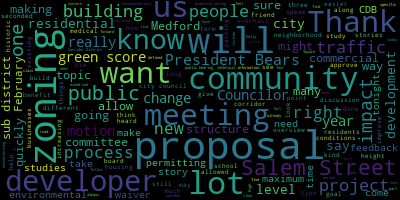
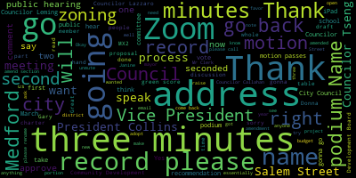
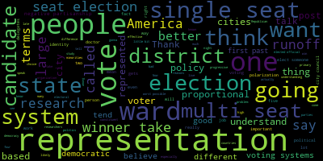
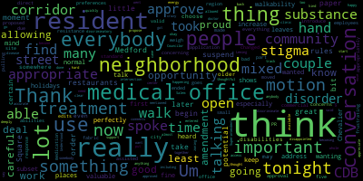

[Collins]: Our deepest condolences to the family, friends and loved ones of Maxwell liner Max was my friend of over 15 years and together we are both graduates of Medford High School class of 2011 and University of Massachusetts Amherst class of 2015. He was a deeply caring person who spent his personal and professional lives, making a positive impact on people through his work in medical care and his loyalty. I'm going to start. I'm going to start again. Thank you. Be it resolved by the Medford City Council that we send our deepest condolences to the family, friends, and loved ones of Maxwell Leiner. Max was my friend of over 15 years, and together we were both graduates of the Medford High School class of 2011 and University of Massachusetts Amherst class of 2015. He was a deeply caring person who spent his personal and professional lives making a positive impact on people through his work in medical care and his loyalty and devotion to family and friends. Be it further resolved that we dedicate this meeting in his honor. President Bears.
[Bears]: Thank you, Vice President Collins for reading this resolution. I lost a friend who's very close to me. A lot of people in this city are very sad that he passed away. It's obviously hard to talk about. I'm not going to speak too much about it because I think we're going to be here for a few hours and I want to be able to run this meeting. But I appreciate all the support that people have said over the past week, and my thoughts are with his family and our Medford High School class of 2011, who is missing him very much. Thank you.
[Collins]: Thank you, President Bears. Any further comment from Councilors? I will just say, only knowing a little bit about Maxwell, what a deep, deep loss that our community has suffered through his untimely passing. We are going to dedicate this meeting and its offer, and I'd like for us to all stand for a moment of silence. Thank you. On the motion to approve by President Bears seconded by Council is arrow all in favor. I all opposed. Motion passes. Shall I continue. All right, reports of committees to five dash 023 offered by George Scarpelli city councilor education and culture committee, February 25 2025. Thank you. You can see I don't run meetings very often. The records of the February 25th meeting were passed to Councilor Leming. Councilor Leming, how did you find them? Thank you. On the motion to approve by Councilor Leming, seconded by Councilor Callahan, all in favor? All opposed? Motion passes. 25-023 offered by Councilor Scarpelli, Education and Culture Committee report, February 25th. Who is the vice chair for this committee? May I recognize you to give a brief summary of this meeting?
[Callahan]: Yes, thanks. We had a really great meeting. We invited the parents of students with disabilities to come and speak. We discussed possibilities of how Medford can provide more activities for their children, covered many things between having it through the rec department and having it through more of a citywide effort. And I think that was the discussion and we're moving forward with trying to support those children here in Medford.
[Collins]: Thank you, Councilor Callahan on the motion by Councilor Callahan to approve seconded by Councilor Tseng all in favor.
[Bears]: All opposed motion passes to 4033 offered by Vice President Collins planning and permitting committee February 26 2025 report to follow.
[Collins]: Thank you President Bears this was our final of four meetings in the planning and permitting committee on the neighborhood and urban residential topic which proposes an updated and modernized framework for residential neighborhoods of the city. Like I mentioned, it was preceded by three other topics during which we workshop this proposal. And at the February 26 meeting we referred it out to the city council for its immediate procedural referral to the Community Development Board for further public meetings, public feedback and promulgation of recommendations motion to approve on the motion to approve of Vice President Collins seconded by seconded by Councilor Callahan.
[Bears]: All those in favor, I oppose the motion passes to 4468 offered by Councilor Tseng committee of the whole March 4 2025 report to follow I guess technically this should be me but I'll go to you.
[Tseng]: Any combo works. This will be on our agenda later tonight. So I don't want to go too much in depth into it, but the committee of the whole reviewed the draft charter as amended by the governance committee. We made a few more technical amendments. We also had a very long three and a half hour conversation on board representation and what that looks like and sent the draft to this regular meeting.
[Bears]: Thank you, Councilor Leming. On the motion to approve the committee report by Councilor Tseng, seconded by Councilor Callahan. All those in favor? Opposed? Motion passes. Now to Councilor Leming. 24-069, 24-073, 24-354, offered by Councilor Leming, Resident Services and Public Engagement Committee, March 5th, 2025. I can't, I don't know if there's something going on, but this is Councilor Leming, March 5th, 2025, Resident Services and Public Engagement, Councilor Leming.
[Leming]: Thank you at the President services and public engagement committee, we talked about current one second got quieter. But we discussed the current draft of the Human Rights Commission updated ordinance and ended up deciding to continue that on to the next meeting. I'd like to thank my colleague, Councilor Tseng for his work on that. We then discussed some of the recent listening sessions that Councilors have been holding at the Medford Senior Center, as well as just comparing notes on them and coming up with ways to improve these. And we worked on the February Medford City Council newsletter, which can now be found on the Medford City Council webpage if you're interested in reading it. Thank you.
[Bears]: Thank you on the motion of Councilor Leming to approve, seconded by. Seconded by Councilor Tseng, all those in favor? Opposed? Motion passes. Councilor Lazzaro.
[Lazzaro]: Motion to suspend the rules and take paper 25-043 out of order.
[Bears]: On the motion of councils are to take paper to 5043 out of order seconded by Councilor Tseng all those in favor. I opposed motion passes to 4053 petition for amendment to a common victors license by Mrs. Murphy's. Excuse me, Mrs. Murphy's is requesting Barry Rafferty writing seeking to extend business hours to 1am. As you're aware liquor license already allows for that and it's crucial for my business, we find ourselves particularly on Chevalier nights asking our customers to vacate the premises. and it is upsetting for all parties. Thank you for your consideration, best, Barry Rafferty. And I also note for the discussion from the clerk is that there's especially a desire for them to be open late on St. Patrick's Day. This is their first St. Patrick's Day open in Medford Square. So I'll go to Barry, who I now see is here. If he wants to share anything, yes, if you don't mind. If he wants to share anything more, and then I can talk a little bit about where we are procedurally with all of this.
[Rafferty]: Thank you, President. So, in truth, the ABCC, you know, they give us a license until 1am. I would hope to get to there as quickly as possible. It does put us at a disadvantage in relation to what you just specified. You know, there's people coming from outside of Medford looking for a drink post-show, and we're not in a situation where we can We can help them with that. On top of which, as you stated, it is St. Patrick's week. It used to be St. Patrick's Day. It'll be St. Patrick's month next year, perhaps. But, you know, you know, let's be clear. Closing the doors at 11 a.m. I would like that decision to be mine as against being told to do it. I may well do that, but. you know, if there's a demand and people want more and they're being well behaved, I'd like to be in a position to do that.
[Bears]: Great, thank you. So I will note that the clerk's office and the planning office have reviewed the city's zoning and special permits for extended hours for restaurants are not for our zoning. All we need to do here is amend common victors licenses. In terms of doing that going forward, the clerk's office and the planning department are working to develop a set of paperwork for that. It's not done yet. So that's why we're, we have this email from you right here. I know you've filled out a ton of forms for the city and wouldn't have minded filling out one more, but that's why this is presented the way it's being presented right now. So with that, I will turn it over to councillors for discussion. Councilor Lazzaro.
[Lazzaro]: I think this is a great moment to begin talking about the potential for Medford Square to have some restaurants that are open a little bit later, especially when we have shows at the Chevalier and holidays where it's appropriate. So I would motion to approve. I think it's perfectly fine and normal. Thank you.
[Bears]: Great. Council Lazzaro has moved to approve the amendment to the common mixers license to extend the hours to 1 a.m. I got a second from Councilor Tseng. Would you like to speak on it? Okay. Everyone wants a second. Is there any further discussion by members of the Council on the motion to approve? Seeing none, is there any discussion by members of the public? If you want to say anything else, Barry, or if there's anyone else who'd like to say anything, you can either make a line behind the podium or raise your hand on Zoom. None from Barry. He said his piece. Thank you. Anyone else want to comment on this vote? We got one. Okay. We've got some people in favor. Thank you. Nice to start on something I think we can seemingly all agree on. I think no hands on zoom. So, no further discussion by members of the council on the motion. Mr. Clerk, please call the roll.
[Hurtubise]: Thank you. All right, hearings.
[Bears]: No hearings public hearing notice Medford Community Development Board January 22 2025. City Council February 11 2025 chapter 94 zoning the Medford Community Development Board shall conduct a hearing on January 22 2025 after 630pm. via zoom remote video conferencing relative to the following proposed amendments to the city of menford zoning ordinance and zoning map one amend section 94 dash 2.1 division into districts to add Salem Street corridor district to amend section 94 dash 6.0 general regulations to insert a new subsection to create the new green score zoning regulation and to state the applicability standards and calculation methodology therein. Three, amend section 94 dash 3.2 table of use regulations table a by incorporating the Salem Street quarter district into the existing table, and to designate the uses permitted there in for amend section 94 dash 4.1 table of dimensional requirements table be by incorporating the Salem Street quarter district and to state the dimensional requirements therein. Five, amend section 94-12 definitions to amend and add various definitions. Six, amend section 94-9.0 to insert a new subject section to create the Salem Street Corridor District. Seven, amending the zoning map to create a new Salem Street Corridor District and to change the zoning district designation of various properties to place them within said district as shown on map entitled quote, Salem Street Corridor Zoning dated December 8th, 2024. Eight, amend section 94-11.7 site plan review to incorporate the green score regulation by adding submission requirements for site plan review and modifications and establish a waiver process. Zoom link to the meeting is also posted on the city website calendar. A subsequent public hearing will be held on the same matter by the Medford City Council on February 11th, 2025 at 7 p.m. in the Medford City Council Chamber on the second floor of Medford City Hall, 85 George B. Hassett Drive, Medford MA, and via Zoom, a link to the public hearing to be posted no later than November 29th, 2024. So that is the original notice. The Community Development Board held a public hearing across three meetings on this matter in January, February, and March. The City Council opened its public hearing February 11 2025 and continue to this meeting, March 11 2025. We have two papers before us tonight, paper 24515 and 24499. The first is 515 on the Salem Street neighborhood quarter district and 499 on the green score. There are also the proposed amended text of both items in the council's packet and attached on the council's meeting and agenda portal. How I'm going to do this is I'm going to open the public hearing on each item. Well, I'm gonna open the public hearing. We'll hear first on Salem Street, and then we'll hear from councillors from the public. There'll be motions made, and we'll take a vote on that, and I will close the public hearing portion of the public hearing on Salem Street, and then we'll move to the portion of the public hearing on the green score. and follow the same process. So with that, I'm going to reopen the public hearing and recognize Vice President Collins, Vice President Collins.
[Collins]: Thank you so much, President Bears, for the overview. I know a lot of people are here tonight for this topic. I'm really excited that we've made it to this point. I'm excited that so many people are here engaging with the comprehensive zoning overhaul. Before we get into discussion, I'm sure there will be a lot of discussion. I want to give a brief overview of the proposal before us, how we got to this point, the meetings that we had, what the proposal says. I'm then going to ask President Bears to recognize Emily Innis from Innes Associates to walk us through on a more the planning and permitting committee meetings. Detail technically technical level and overview of the proposal before us tonight now that it's come back from the CD board, and then I am eager to hear discussion from my fellow Councilors and from the community. So I'll start with a quick outline of the public meetings on this topic that got us to today. This proposal was developed as all of the other zoning proposals were in this process. Um in the planning and permitting The CDB began its public hearing on this topic on January 22nd. That is a step that we always take with any zoning proposal or any zoning change or amendment. It always goes from the city council to the CDB board for their public hearings before it comes back to the city council and that's what that last step is what's happening tonight. but the CDB began its public hearing on January 22nd. There was a lot of community feedback. A lot of people in this room know. So the public hearing was continued to March 5th to allow more time for the board to consider and deliberate and to allow for more opportunities for public comment. In the interim, we added a new step to our review timeline, which is a public Q&A. We had that on February 10th. This wasn't something that we did for our phase one zoning updates. It wasn't something that we did for the Mystic Avenue corridor district proposal, which passed in December. But with Salem Street, we heard really loud, really clear that people wanted more information. They wanted more opportunities to ask questions. They wanted more opportunities to give public comment. So I want to thank city staff and Innes Associates for their flexibility and making sure that we got a local in-person Q&A on the calendar, which I understand a lot of residents attended, and I'm so glad that they did. On March 5th, the CDB had the continuation of its public hearing on the Salem Street Corridor District. They reviewed updated recommendations from the zoning consultant that were put forward after all of the public feedback that was heard on February 10th, and they heard additional public comment on that night. So that brings us to today. And in addition to this public meetings, these public meetings, they also want to note, I know for I as one Councilor, I've been receiving a lot of public feedback throughout the process of the zoning, through emails, through phone calls, through texts. I'm sure that all of my colleagues have too. And I want to again, thank everybody for engaging with us on this topic. And I hope that you'll continue to do so as we approach other topics through the spring. Another important part of this process, I think, are the new resources that we added during the Salem Street phase of the zoning overhaul. While Salem Street was working its way through the committee to CBB back to City Council process, city staff have worked alongside myself and President Bears to overhaul the communications and online resources that we publish about zoning. creating new ones and making sure that we're using all of the communication channels that the city has. We spent many hours on a total redesign of the zoning website so that it's easier for residents to learn about proposals, upcoming meeting dates, look at visuals and graphics, and separate fact from fiction. I say it a lot, I know that zoning is really detailed, it's really technical, it's often confusing, and not just for residents, for city staff and Councilors alike, but I also know that Medford residents don't scare off that easy, and I'm really glad that the community has encouraged us to overhaul the information that we have online so that it's easier for residents to be informed and involved, and we're continuing to work with the mayor's office to keep making that better and better. So onto this specific proposal. I will give a high level like I said I'll give a high level overview of what's before us before Emily will walk us through more of the details. The Salem Street corridor district proposal is one part of our comprehensive and citywide zoning overhaul. This began in the spring of 2024. Green Score and the Salem Street Corridor District are the third and fourth major packages to come out of this process. They were predated by the phase one technical updates and the Mystic Ave Corridor District proposal. Overall, the goal of this process is to take the goals and the visions of the Housing Production Plan, the Comprehensive Plan, and the Climate Action and Adaptation Plan and help make them real in our community. These plans were not written by the city council. They didn't come out of this room. These plans were the product of years of community feedback, community meetings, and community feedback. They speak to our shared goals for the future that we all love. A future of the city where there are homes for young adults who can afford to settle. Apartments where students and workers can live comfortably and where our elders can downsize. Neighborhood squares that are lively and full of businesses and people running errands and meeting friends close to where they live and where we are more climate resilient than we are today. So what do these goals look like for Salem Street specifically? How does this end up in the proposal that we're talking about tonight? This proposal allows for moderately increased residential housing on Salem Street from the 93 Rotary up through Haines Square. We can do that by regulating density, height, and lot size principally. By-right densities are moderately changing. By-right heights are also moderately changing, but they are not always increasing. Right now, maximum by-right heights for most of the corridor is three stories. Under this proposal, that's staying much the same everywhere except for in mixed-use two sub-districts. In mixed-use two sub-districts, it's proposed to go up by one story, so you can build to four stories as your buy-right maximum. In Haines Square, this proposal would actually lower maximum heights. Right now, if you wanted to, which I don't think a lot of residents would want to, you could be building a six-story apartment building or a 15-story hotel. This proposal will bring that down to scale. I next want to quickly touch on commercial. Salem Street, we all know, is characterized by many beloved small businesses from convenience stores to karate dojos to bike shops, and all of them are nonconforming under our current zoning. This proposal allows for ground level commercial buy right to encourage small business development and make it easier to see more of these things and these types of businesses that we already love. I'll quickly touch on incentive zoning. Through incentive zoning under this proposal, it is possible to build above the three-story maximum and the four-story maximum by right. Developers could build up to four stories in mixed-use one sub-districts and up to six stories in mixed-use two and commercial sub-districts if they maximally satisfy a certain community benefit conditions. Incentive zoning increases are not allowed in multi-unit residential sub-districts. those areas top out at three stories permanently. There's no opportunity for going above three there. I do want to stress that incentive zoning is not a blank check for developers. Any uses that are not by right uses will still go through site plan review and public permitting procedures that involve studies and negotiation of community benefits and impact mitigation agreements on a case-by-case basis. This proposal also includes development context standards, regulations for how upper floors must be built and shaped to ensure that new buildings don't feel out of place nor block light from existing residential homes. The committee, the consultant, and the CDB also paid special consideration to what kind of uses the community did and did not want on Salem Street. And Emily Ennis will speak more about that next, but I'll just quickly mention this zoning proposal does reflect changes to allowed uses based on a lot of community feedback that we heard throughout January and February. Under this proposal, the only medical uses in the district will be quote-unquote neighborhood medical, which is a new defined term. They are no more than 1,500 square feet and no more than five employees. Neighborhood medical will be allowed by special permit only in mixed use two and commercial sub-districts. Hotels, which are allowed under our current zoning, would be prohibited under this proposal throughout the entire corridor. And I want to quickly speak to what this proposal does not allow, because there's been a lot of talk about this proposal in this community, and not all of it is accurate. I want us to be armed with the facts. I know that there's been a lot of concern about what zoning in the city will allow for large dorms. This zoning proposal does not create conditions for large dorms on Salem Street. In fact, this proposal recommends no dorms at all, and no sub-district all along the corridor. Neither would it create the conditions for pot shops, all marijuana commercial uses, including retail are prohibited along this corridor boarding houses are allowed only by special permit, they are disallowed in multi unit residential sub districts. I know there's some concern about historic buildings. Buildings over 75 years old are protected by the city's demolition delay ordinance. Buildings can be further protected by the establishment of historic districts, whereby changes can be regulated by the Historic District Commission. This council this term has been supportive of those districting measures. and I'm sure would welcome further collaboration on historic preservation along Salem Street and along other corridors. Broadly speaking, and this applies not only to historic structures, but to structures in general, if any use or structure is rendered nonconforming because of zoning changes, they can continue. There are specific rules that govern nonconforming uses, but right now, Salem Street and much of the city is peppered with nonconforming buildings and lots, which may remain in perpetuity except as outlined under Mass General Law, Chapter 40A. Lastly, I'll quickly speak to a concern that I know a lot of people have around traffic, traffic impact along Salem Street. First, I will note there are no parking changes proposed in this proposal. I know that a lot of folks have been concerned about impact on existing uses and structures through traffic on Salem Street and eager to see the impact on traffic because of changes that might come about through zoning. When we talk about zoning, We're talking about changes that will occur over the long term. Some changes might occur relatively quickly within the next five years. Some changes might not become manifest for decades. That is why in the review process, it is more effective, more beneficial to the community to keep traffic and impact mitigation studies where they currently reside, which is at the point of permitting. A traffic study done today or done this year might be completely outdated, irrelevant, unhelpful to the community when a new proposal is proposed under the current zoning in five years, in 10 years, in 20 years. Those type of impact studies are located at the time of permitting so that the community has the best information it can use when it's doing those negotiation, impact study, and community benefit negotiations with developers. I've spoken a lot. I want to pass the mic. I'll ask President Bears to next recognize Emily Innis from Innes Associates, a familiar face to most of us. She is going to walk us through a more detailed, more technical overview of the recommendations to this proposal that have come out of the Community Development Board. I thank my fellow councilors for giving me this time to give an overview of this proposal, and I look forward to our discussion.
[Bears]: Thank you, Vice President Collins. Chair recognizes Emily Innis, Innes Associates.
[Innes]: Thank you very much, Councilors, people who are in the room and people online. Thank you for having me tonight. As requested, I'm going to walk through the changes that happened over the course of the review of this document once City Council sent it to the CD board. As Councilor Collins noted, there were changes from The original staff recommendations to the CD board at their first public hearing, we heard public comments, staff made additional recommendations to the CD board. The community development board itself at the last meeting made some changes, and then there were some final technical changes that are recommended for tonight. So I believe that the document that is online has all of these changes, so I'm just going to walk through them. one by one. So starting at the January 22nd Community Development Board, city staff recommended some changes to the development incentive bonuses and section 94-9.x.4. And this was to clarify that the height that controls the incentive is in the table of dimensional standards that are for Developers cannot just simply add development or incentive bonuses on top of each other to reach the height that they want. The height is limited in that table of dimensional standards. The next recommendation from city staff on January 22nd was to delete the existing definitions for clinic, hospital, and medical office and replace them with the definitions that you see here. So clinic and hospital now refer to state law for the definitions. neighborhood medical office, as Councilor Collins stated, is limited by the area and by the number of employees. You're going to see that there's an additional change coming up on that. And then a standard medical office is one that is not limited by the square footage or by the number of employees. And that becomes important when we do the changes and uses that Councilor Collins alluded to earlier. You can see those changes here is that at the time we were recommending that neighborhood medical office be allowed in the Salem Street Corridor District for MX1, MX2, and commercial, and allowed by special permit in those same districts. Again, this is a subsequent change, or this is a change prior to the community meeting. We have a subsequent change, but we want to show you the history of the changes from when the city council referred this to the CD board. We also added step back requirements based on city staff recommendations and a step back waiver. This was the first attempt to reduce the impact on the smaller scale residential adjacent to Salem Street. Again, you're going to see some changes to this in response to community input. And then staff recommended removing adult-use marijuana, including cultivation, manufacture, processing, retail, and laboratory from the Salem Street District. So when we move to the next Community Development Board, so coming out of January 22nd and into March 5th, after the public meeting added and shall operate only between the hours of 8am and 7pm, so now neighborhood medical office is limited by the square footage, by the number of employees and the hours of operation. standard medical office is not limited by those. You'll see here that this is why this is important. Neighborhood medical office is now prohibited from MX-1. Medical office itself is prohibited from all three, MX-1, MX-2, and commercial. And neighborhood medical office is allowed by special permit, which is the most restrictive of the permitting processes. uh in mx2 and commercial so changing the definition placed additional conditions on that neighborhood medical use and then adding it by special permit places additional restrictions on how it is permitted uh in listening to the community there were a number of voices that did not want a medical office use at all on salem street but we did hear from some people that being able to easily access medical services was desirable. And so we felt by putting it in MX2 and Commercial, which are at the Felsway end of Salem Street, and removing it from MX1, which is now applied to most of the rest of Salem Street, that would be an acceptable, we hope, compromise between a wide variety of voices that we heard at all of the public meetings, including the public Q&A. Next March 5th Community Development Board, we had recommended that the multi-unit residential sub-district be made closer to what will be the neighborhood residential three district. So that is coming up in our next package of changes. We are looking at residential throughout the city right now. And one of the sub districts is called in our three or neighborhood residential three. We had through city staff, the recommendation was to make the original Mr. Sub district that was proposed for Salem Street to have all of the uses all the dimensional standards match to in our three, you're going to see a change to that as well. But you can see here the types of residential uses that would be allowed. Again, this is a residential-only district, so no commercial was proposed for this district in any of the iterations. And you can see through here what would be allowed. Again, this should all be online. Um, in MX1, MX2, and, uh, commercial districts, uh, we recommended that, uh, as Councilor Collins already suggested, uh, that hotel not be permitted in any of these sub-districts, that brewery or taproom would not be permitted in MX1. Uh, we made some changes to parking areas or garages that were accessory to a principal use, whether they were within 500 feet, um, or on the same, uh, lot as the non-conforming use. and created special permits for those. We removed distillery or winery from MX1 and MX2. We removed, we clarified that home occupation was by special permit in MX1 and MX2. And then these are the dimensions, again, being lined up with the Neighborhood Residential 3. Neighborhood Residential 3 allows a maximum of three units. So you can see that here. It does also allow for historic conversion from a single unit up to four units. So that was included in the concepts. uh, setbacks, stormwater, and landscaping, again, all consistent with NR3. And then in MX1, MX2, and commercial, there was a step-back requirement for MX1 along Salem Street, um, that had the disadvantage of pushing the upper floors closer to the residential, uh, parcels behind, um, uh, or on the other side of Salem Street. So if you have Salem Street, you have the building going in, you have the residential parcels behind, a step back at the upper floor pushes that upper floor towards the residential lots. So we deleted that step back requirement in MX-1. MX-1 is also a lower height than MX-2 in commercial. So we don't want somebody going up three stories and then just having to step back that fourth story in MX-1 and again push that building closer to the residential. We also added a minimum rear setback of 10 feet in MX1, MX2 and commercial again to give more of a buffer between the new districts along Salem Street and the existing residential behind. So this here is the multi-unit residential subdistrict coming in at one to three units. So you have to change it in the table and you also have to change it in the definitions here. And then we found that the side and rear setback language was confusing to people. It included a a fence that read as though that the fence was implied or what we heard from people was that it implied that the setback was only five feet. We did not want to create that misunderstanding, so we actually removed the fence altogether and require that the applicant provide not just the landscape, not just the setback of 10 feet, but that the buffer actually has to be landscaped as well. Of course, they could have a fence within that, but the fence is not required within that. It doesn't have a separate set of dimensional standards. And then we amended the Salem Street neighborhood corridor map to show that the area around Park Street and Salem, that corner which had been zoned for MX2 is now rezoned to MX1 or proposed to be rezoned to MX1. that has the effect of reducing the height and also including the new restrictions on uses that we just discussed and again changing the MR to allow for the lining that up with the NR3. There are a couple of minor modifications to parcels. All of those are viewable on the map which is on the WIT Cities website. The Community Development Board had some additional recommendations at the March 5th meeting, so they accepted all of those recommendations and then they had some additional ones. There was a discussion of whether or not NR3 would be more appropriate for the MR, what we're calling the MR District now, or Urban Residential 1. Urban Residential 1 allows up to six units. Um, uh, during the meeting, we went and looked at, um, some of the map analyses that we did, primarily the analysis of what is on the ground now in terms of residential units. And after some discussion, the CA, Community Development Board has recommended that the MR residential sub-district, instead of following NR3, should follow, uh, UR1, Urban Residential 1. So this pink are the changes that would be allowed. Primarily, it just allows that slightly additional level of density from two to six units, and then some minor changes to some of the other dimensional standards. Again, within the definition of the district that it is now two to six instead of one to three. Uh, we did, uh, in response to community development board requests, uh, also modify the development incentives. They were concerned that some of the incentives were not properly tailored to Salem street. And so, and the, the needs of Salem street. So we reduce the, um, uh, amount of, um, additional floor area. that some of the incentives could have. So the indoor pedestrian seating or outdoor pedestrian plaza was reduced to a quarter story from a half story. Same thing for the fountain water element, an additional quarter story. They have asked the consultant team to work with city staff to come up with some additional thoughts around incentives but they felt if the CD board members don't mind my summarizing, they were more concerned about affordability levels and environmental and energy efficiency than some of these other elements. And then parking concealed below grade or within a building structure because of the emphasis of walkability and pedestrian friendliness along Salem Street, they wanted to make that a full additional story. to create a bigger incentive for not having open parking along Salem Street. uh, in terms of additional, um, uh, recommendations from, uh, ourselves through city staff to the, uh, city, um, uh, council. Uh, we also recommended, uh, removing dormitory fraternity or sorority house from both MX one and MX two, uh, and research and testing laboratory, um, also townhouse from MX one and MX two. Um, and then, uh, under stormwater and landscaping, increasing the ideal score for the green score. in those areas. And then finally, we noted that in the conversations about setbacks, one of the earlier paragraphs about transitioning to the adjacent residential districts because of the changes that we made earlier about how to step back from the rear and the side lot line. This F is no longer relevant. It's been superseded by changes that were made before City Council sent this to the CD board. So we just caught that and recommend removing that. And that is what I have for the changes to the Salem Street sounding board.
[Bears]: Thank you. All right. That's some great information, Vice President Collins and Planner Ennis. With that, I will go to members of the council for comments or questions, please. Councilor Leming.
[Leming]: I just like to thank my colleagues for doing this as well as the staff consultants who put so much work into this and especially the residents who are pushing for any kind of new zoning to happen in the area for many years. This really does present the culmination of a lot of effort in this area. This is a response to the constant calls that we get about making businesses better in Medford, about welcoming in new businesses, about building up more affordable housing in the city. And I'm just, I'm very proud of my colleagues. I'm very proud of everybody who came together to make this happen. I'm really excited about the overwhelming wave of support that we've seen in our inboxes and in the community, particularly in the in the last week about this. This body has been talking about fixing the many issues that Medford has with our budget with with the affordable housing situation for a very long period of time and zoning is probably the most powerful lever that a local council can do to to change that. And this is the first time really in a generation or two that we've seen this body act to make some change happen. I understand that change is not something that everybody is necessarily that everybody necessarily likes. It's not always something that everybody can agree upon, but I think that the community does agree that doing nothing has been the answer for a very long period of time, and it simply hasn't worked. So, once again, I'd like to thank everybody for all the years of effort and advocacy put into this, as well as all of the work that was done. Thank you.
[Bears]: Thank you, Councilor Leming. Any further comments by members of the Council? Seeing none, we will open the public hearing on the Salem Street Neighborhood Corridor District. I'm going to go through a little bit of how this is going to work. So we are going to talk about the Salem Street Neighborhood Corridor District. Each person speaking will have three minutes to speak. If you're in the room and you'd like to speak, you can make a line behind the podium. If you'd like to bring a chair out, if that is helpful for you, that's absolutely fine. If you'd like to speak on Zoom, please raise your hand. If you are on Zoom and you would like to speak, I please ask you to rename yourself to a first and last name. We have had issues in the past with people whose names were not listed on Zoom not being real people and causing us a little trouble. So if you could please rename yourselves. I'm going to turn that power on right now. if you'd like to speak, but yes. So we'll move to public comment. It'll be three minutes. There'll be a timer. I will give you a 30 second warning and we will hear from everyone once before we hear from anyone again. If you were speaking a second time, you'll be able to speak for one minute. So with that, if you'd like to speak, please make a line at the podium and we'll get started. And this is for people in favor, against, or who have a more complicated position on the issue. I will also note that we received a large number of email comments today. I'm asking the clerk to include those as part of the record, which he will do. Only two of those email comments actually requested that I read those comments. And one of them messaged me that they're here tonight and they'll just be speaking to them. So I will read one comment into the record sometime, maybe when we need a break. With that, we'll go to the podium. Name and address for the record, please. and you have three minutes.
[Navarre]: William Navarre, 108 Medford Street, apartment 1B. Mr. President, I rise to support the zoning and I rise in resolute pursuit of a more urban and less car-dependent future. For far too long, the people of our city have been harmed by a housing shortage imposed in part by zoning codes that holds back a city ready to grow. Nobody can find an apartment Medford's ready for new zoning. We are demanding new zoning. We are ready for you to go back and reevaluate the lack of wisdom behind costly parking mandates. We are talking about Salem Street tonight, but it's part of the city wide zoning update. And that's why I support it. I would not support it if the proposal were to concentrate the development on Salem Street. That's not what's happening tonight. City wide update. People talk about traffic and parking. When we limit housing in our cities, don't we just push people further out into the suburbs and exurbs while they drive more? Have you not heard a million times, Mr. President, that Bedford is a cut through town? That traffic isn't going anywhere when we ship people out to the sticks. They are still coming through here, through our neighborhoods, causing traffic jams, pollution, et cetera. And the consultants have been listening to the community, Mr. President. I've been involved with this from the beginning. I don't think they needed to reduce the MX2 node at Park Street and Salem Street down to MX1, but they did, and they're listening. They're listening to the concerns of the community. What they're proposing, it's not radical. It simply makes it possible for more housing, more shops, and more walkable streets to grow, to go up where people want to live, work, and shop. And I'm joyful at the vision of our future that the planners represent. Wide sidewalks, trees, benches, maybe some outdoor dining. These are the things they mentioned and they give us optimism for the future. But while I'm joyful and optimistic for the future, I must admit how deeply I regret the status quo and how much we deeply need change. Americans are no longer moving toward opportunity in our cities. They're moving away from opportunities. They're moving away from our cities so they can afford housing. That's what we're talking about when we hear about people getting displaced from Bedford. away from opportunity, away from the cities. And for what? For more parking for cars in our cities? Is that the plan? What is to become of our commonwealth or our republic if we don't make a change? The state government estimates we gotta have 222,000 units by 2035 just to stay competitive. Let's do our part. Let's plan for more people. Let's plan for more people and not just more cars because Medford isn't full. Thank you, Mr. President.
[SPEAKER_31]: Thank you.
[Bears]: I'm going to go to Alex on Zoom. Alex, name and address for the record, please. And you'll have three minutes. And then iPad on Zoom, if you could please rename yourself to give us your name. Thank you.
[SPEAKER_85]: I can turn my video on if you, either way.
[Bears]: Go ahead. Here you go. You should be able to now. Great. Thank you.
[SPEAKER_85]: Thank you. My name's Alex Lessenhop, 30 Right Ave. My address. I am just writing, speaking today in strong support of the updated zoning on Salem Street and the Salem Street corridor. This zoning overall is strongly needed to allow organic growth.
[Bears]: His address is 30 Right Ave in Medford. Thank you. Continue. Thanks. Thank you.
[SPEAKER_85]: This type of zoning overhaul is sorely needed to allow organic growth on Salem Street and help Medford grow and welcome more people to this lovely city. I was also in favor of the previous version of the zoning before the CDB's adjustments, supporting the original density on Park Street, because we need the extra housing and businesses to achieve our goal of a walkable, vibrant community. I also understand we may need to reduce or eliminate parking minimums to make the zoning as good as possible, which I also strongly support. In some, we need more housing, more neighbors, fewer cars to make Medford even more of a vibrant, walkable, welcoming community than we already are. So I urge you to support this zoning and to pass it tonight. Thank you very much.
[Bears]: Thank you. Go to the podium, name and address for the record, please. And you'll have three minutes.
[Marie Izzo]: Yes, hi. Marie Izzo, Pilgrim Road, Medford, Mass. It's been said that we have had no growth here in Medford. I believe that this citywide zoning will create new growth and will help small businesses thrive. I strongly urge, however, that we do increase our housing stock for affordability that match the income of our community. I want to thank the council for taking into consideration the concerns that came from the neighborhood with the current changes that reflected the final zoning. Thank you.
[Bears]: Thank you. Going to go to Miranda on Zoom. Miranda, name and address for the record, please. And you have three minutes.
[Miranda Briseño]: Hi, Miranda Briseno. I live at 2 Taylor Street in Medford. Thank you, Mr. President. I've been a renter in Medford for six and a half years. I've loved living in Medford and I love calling it home. The reality for me is that as a renter, I'm currently trying to find a new apartment that meets my changing needs, and I'm finding it extremely difficult to find a suitable place that will allow me to stay here in this place that's welcoming. I'd love to call home for six and a half years. To that end, I am disappointed to see the multi-use residential drop down from three to six units to one to three. If we want Medford to be affordable and for people to stay in Medford, we need to allow more housing to be built and implement other measures to ensure that rental and home prices stay affordable. This includes whether through zoning or another mechanism, removing parking requirements and minimums, supporting transit, pedestrian and cyclist infrastructure. Additionally, I think there's some short-sightedness with limiting only specific business uses. I think it'll limit the city's ability to generate more tax revenue, in particular with relation to dispensaries and hotels. I recognize for the siting of a dispensary, it's limited to what is around. So maybe a dispensary isn't appropriate in Salem Street, but thinking about the city-wide zoning update, dispensaries have unequivocally across the Commonwealth generated immense revenue for the state and for communities that have worked with companies to allow for their existence. And similarly for hotels. I think if we're truly committed to climate resiliency, one of those is creating truly mixed use areas where people can go to the grocery store, eat a meal with friends, go to a park, exist in third person places where they are free to exist as people, or go to their doctor or receive substance abuse disorder treatment. And when we force these uses to be so far away from each other, we are forcing our neighbors to rely on cars, or if they have no access to a car to simply go without access to necessary destinations, which will be detrimental and fatal. I hope to see more opportunities for housing to be built with less parking required. more medical offices and more business to come to Medford in the future. Doning proposals, I'm looking forward to the one for my area. And I hope that, you know, we're also taking into account the Commonwealth's 3A updates that require MBTA communities to update their housing stock. And also just wanna thank all that have worked hard, both, you know, city staff, the council and as associates. This work is not easy, and I thank you for all that you do to balance all the resident input. Thank you.
[Bears]: Thank you. Just very quickly on that, on the 3A, we passed the zoning in 2023 on the 3A zoning. Just wanted to note that. Go to the podium, name and address for the record, please, and you'll have three minutes.
[Carlene Campbell-Hegarty]: Carlin Campbell, Hagerty 49, Elmont Street. I'm here to oppose the current zoning for the Salem Street Corridor. I have to admit participating in the Community Development Board meeting last week, I was very pleased that listening to the communities, the community who's gonna be most affected by these changes, making those changes in the proposal to kind of align more with what the neighborhood wanted, what the neighborhood needed. Unfortunately, what happened at that meeting about eight people spoke against it, two of them were only being directly affected and the CB CDB went with their recommendation and said it took everything that the community said we would like to see out when it comes to how heights of buildings, especially changing the MR to urban one, which will be the highest allowed buildings to go, that's going to fall directly into all of our street, my street, where I live with my mother. So with that, I can, on top of all that we all know that Salem Street is a major thoroughfare. Traffic is horrible. It is busy night and day. We're putting more density. You want to put more apartments, more buildings, more people, more cars into a location. However, no one has done a traffic study. No one's done a parking study. No one has done a shadow study. All of these were requested in the master plan for zoning, has not been done yet. And nobody's looked at the infrastructure, i.e. water, sewage. Can the city with our old infrastructure be able to handle this increase in density. And at the meetings, I've heard that we couldn't do that because it was out of our scope. It costs too much. The zoning proposed can't happen unless you change parking, but you're not changing parking, so what they're proposing in the CDB won't fit there. So I'm just telling everybody here who lives in this neighborhood, what you're proposing is a bait and switch. And I'm really disheartened by it. And I can't support this. And my mother, who's Susan Campbell, also Susan Campbell, couldn't be here tonight. She does not support this. And I know there is a petition with over 900 people in the community, in the neighborhood, against this. Please, I implore you, do not vote for the zoning the way it is. I'm not against zoning. I'm against good zoning. And right now we're not there yet. And it's going to be detrimental to our neighborhood.
[Unidentified]: Thank you.
[Bears]: I'm going to go to Sneha on Zoom. Sneha, name and address for the record, please. And you'll have three minutes.
[SPEAKER_78]: Hello, I'm Sneha Kound, 108 Medford Street. Good evening, everyone. Good evening, council. I speak in strong support of the proposed rezoning. I'm happy that the city council is responding to the housing crisis we face and urge you to keep up your efforts so Medford can have housing abundance and be a truly welcoming city for all. I also urge you to abolish parking minimums so we are climate resilient and prioritize people over cars. And I thank you all for your excellent service to the community. Thank you.
[Bears]: Thank you. Go to the podium, name and address for the record, please. And you'll have three minutes.
[SPEAKER_16]: I'm Ian McGullum. I live at 20 Pleasant Street. So I'm close enough to the Salem Street corridor that we walk and bike up there frequently. And also we get lots of cut through traffic on our street. I'm speaking in strong support of the zoning proposal. When we bought our house here in 2018, we were just able to afford the smallest house we could possibly find, and there's no way we'd be able to afford living here if we were buying right now. And I've seen many friends and people we know who have solid jobs in nursing, in carpentry, working in the government, struggle to struggle to afford to live here. And obviously the housing crisis is bigger than Medford, but this is our chance to do our part here. And as part of a zoning overhaul through the entire city, I think this is going to be a real step towards housing affordability. And the other thing I wanted to mention was that in Medford, I've seen the most enthusiasm towards new businesses that I've ever seen anywhere I've ever lived. Whenever something opens, people really flock to support it as we saw from Mrs. Murphy's. And I'm really hopeful that the rationalization of the commercial zoning, we'll see a vibrant new businesses open up on the Salem Street corridor that I will be able to frequent every week, and I'm just really excited to see that potential.
[Bears]: Thank you. Thank you. We'll go back to Zoom. We'll go to Zachary Chertok. Zachary, name and address for the record. You have three minutes.
[Zachary Chertok]: Zachary church talk five all month street, literally right at the corner of all month and Salem in the middle of where this is taking place. First I want to express my condolences to the city in particular President Bears on the untimely passing of your friend and colleague. No one should suffer that kind of loss and I sincerely offer my condolences. Shifting to the zoning. I want to preface and clarify that I think my position as we've come through these meetings has been pretty clear that I don't rebut the expectation that there will be new density and that there's a need for increased density coming to Medford, and that it's on our horizon. The problem continues to lie with the process and proposal so far in terms of how it's being managed. The current proposal still continues to have discrepancies regarding a data-backed approach, proffering real concerns about contravention of measurement and public engagement procedures outlined by the American Institute of Certified Planners and with the city's own comprehensive plan. This isn't a new concern as multiple notices and outreach for these concerns have been sent to the appropriate parties throughout the process. Per ethics obligations for reporting report to that has been filed with the to request information and to look into this with the proper parties named. It's an unfortunate measure, but it's 1 that became unaffordable because I'm bound by my own engineering ethics obligations. Cursory review with industry professionals and peers has indicated that the current density draws away from transit quarters and risks going against the tenants of the MBTA Communities Act, even if legally the city's density profile might prove to be satisfactory for the actual conditions of the act. Examining the available materials that are deemed current for the zoning proposals on a neighborhood by neighborhood basis has also continued to make it difficult to examine how the proposal fits into the broader multi-neighborhood efforts across Medford. But the consensus across those same peer professionals that was noted previously in my own public participation in the CD board meetings is that density is being drawn away from transit nodes and that lot size reduction, potential future parking reductions following this proposal, noted not included in this proposal here, and no clear plans for transit diversification in the Salem Street area still raises concerns for access, particularly for the economic demography of the area. Urban planning and land use regulations are complex in their nature and they have far-reaching design consequences and are not simply a matter of adding housing stock. As a studied field, urban planning rooted in several engineering principles and economics have bedrock considerations that have not been fully examined here to manage the density flow coming in, despite the fact that I respect and appreciate the efforts that have been made on the part of the participating groups. Due diligence still has to be completed for existing conditions, benchmarks into public safety and infrastructure. 30 seconds. And not build out, but existing capacities to guarantee equity and how the current planning density can be accommodated. Thank you.
[Bears]: Thank you. We'll go back to the podium. Name and address for the record, please. And you'll have three minutes.
[SPEAKER_87]: My name is Mark Davidson. I'm from 63 West Street on the hillside. My daughter and her family live in the Salem Street neighborhood on Farragut Avenue. They have two kids, two of my grandchildren. All of my kids grew up here. Only one lives in Medford, I think the housing shortage keeps maybe one or two of the others from living in Medford affordability. So I'd like to lend my voice in support of this initiative. I think also for the neighborhood itself, having a variety of businesses is walkable businesses in the neighborhood would improve the neighborhood significantly. There's not a possibility of a grocery store on that street because of the current zoning restrictions. And I think of increased affordable housing is an important need for the whole city, not just for that quarter, but for the whole city. we need to welcome younger and more vibrant citizens from not only who had been residents of Medford but from outside just adding new life and vibrancy to the community I think is important. I'd also like to say that I believe that a more walkable business-friendly housing-friendly Salem Street would actually attenuate the traffic, would slow it down, make it more walkable. And I believe that that's something that should be considered as well. A more walkable, business-friendly, neighborhood-friendly neighborhood, I think is what I'd like to see. And I think this initiative addresses that. Thank you.
[Bears]: Thank you. We'll go back to zoom. I'm going to go to Caitlin Robinson, Caitlin name and address for the record and you'll have three minutes.
[Kaitlin Robinson]: Hi, Caitlin Robinson 31 Everett Street. First I want to say thank you to everyone who has been involved in this and to the city council for taking our comments tonight. I am speaking in support of this rezoning proposal. I too was disappointed by the shift down to MR1 instead of MR2 at the Park Street mode. I wish that we had retained density there. I am also disappointed that parking minimums have not been addressed in this process. I understand that there might be a later process, but as part of this zoning now, I'm concerned about how those parking minimums are going to negatively impact these attempts at rezoning. We heard that some of the goals of this rezoning are to increase housing units, to have more affordable housing, increased walkability and climate resiliency, and parking minimums actively work against all of those things. Parking minimums work to limit competition for public space. but there are other tools that the city could explore to limit that competition for public space if that's what the priority is, tools that won't work against the other goals that were set forth as part of this zoning. But I am overall strongly in support of the plan. Thank you.
[Bears]: Thank you. We'll go to the podium, name and address for the record, and you'll have three minutes.
[SPEAKER_11]: Charles Fenton, 26 Kearney Street, I live two blocks from Main Square, and I bond and brought up in Medford. And I am against the project as it is, because there were no actual studies done on traffic impact, utility impact, and I don't know. Traffic on Salem Street will be a mess because Salem Street is a thoroughfare, a state road, and many, many, I'd say about 50% of the traffic is from going through Malden Revere into Medford to Route 93. We have no transportation mode near Salem Street either, unlike West Medford, the hillside, This part of Medford, especially off of Haines Square is one of the densest areas in Medford. All packed with two families. Other areas of the city are much more open to more packing as what you're trying to do here is pack more people into the area. I understand that. I appreciate the work that Innis Group did The CD board and you councilors did a great job with all this. This is very complicated, but I am against it and I will be disappointed in the city councilors that vote for this. And I think hundreds of other people will be as well. Thank you.
[Bears]: Thank you. I just want to say before we go back to Zoom, we haven't had a chance to hear from you, Mr. Fenton, but I personally want to say I appreciate you do some great posting on Facebook of the history of Medford, photos of Medford, and I, for one, just really appreciate it. Thank you. We'll go back to Zoom. I have, yep, I have Michael von Korf. Name and address for the record. Michael, you have three minutes.
[SPEAKER_15]: Yeah, thank you. Michael von Korf, 44 Petra in Medford, just want to support the new zoning. As the rezoning effort continues, I would really love to see more density, less restrictive zoning, a lower emphasis on cars, and that includes reducing parking minimums. Like a lot of folks in this meeting, I live in a home that I could only afford to purchase because I got in before the recent drastic rise in home prices. I really wanna live in a community that my friends and my coworkers can afford to live in and that someday my children can afford to live in. So thanks so much to everyone involved in the rezoning process and thanks for your work to make Medford more affordable and prosperous.
[Bears]: Thank you. Before I go back to the podium just if Rebecca and iPad if you could please rename yourselves, so that to a first and last name I'll recognize you once you do that. But we'll go back to the podium, name and address for the record please and you'll have three minutes.
[Lemler]: Hi, I'm Joan Lemler and I live at 56 Farragut Avenue, which is very close to Salem Street. I'd like to applaud everyone for all the efforts that they have made to recognize the need for affordable housing and rezoning. Unfortunately, I think the product that is before us now is incomplete. And I could echo some of the statements that have been made by Zach that are on record. Also, the previous man who spoke at the podium. What I'm really concerned about is that the appropriate licensed professionals, such as engineers, traffic study, health people, infrastructure people, have not weighed in on this. I don't want to be a licensure snob. However, I think this is a big project, and it's much harder to undo mistakes that get made. And I'm very worried that these individuals are either not on the city payrolls or going to be around on a consistent basis. Just to cite one example, the idea that you have to, over time, look at traffic studies and safety studies, that's very true, but everyone knows how congested our particular street is there. As a matter of fact, I walk two miles a day in the area, which is almost on Salem Street, and I can tell you that the pollution level is so great That I avoid walking along Salem Street because the pollution from the traffic on 93 and Salem Street is really severe and I'm from the Bronx density and pollution don't really bother me as a general rule, but I can tell you, it's one of the worst areas I've lived in the country, and I've lived in many areas, and how is the increase of density going to help this particular situation? And if we're looking at some of those incentives of people sitting outdoors and having like a little cafe scene going on, I question whether that would really be viable. So I'm very concerned about the weighing in of the appropriate professionals so that we could get a rezoning that would really address and long-term have a positive impact. So I just register my opposition at this time for the right reasons that I have cited.
[SPEAKER_01]: Thank you.
[Bears]: We'll go back to Zoom. Rebecca Davidson, name and address for the record. You have three minutes.
[Rebecca Davidson]: Thank you so much. I'm a resident of the Salem Street neighborhood and have been raising my family here for the last few years. I grew up in Medford as well. And I'm directly affected by this zoning. I also really love this neighborhood. And what I love most about it is my ability to walk to so many great businesses, bakeries, hair salons, restaurants, and others. Walkability is good for your health, for safety, and for the environment. Zoning changes like this are so important in this neighborhood, especially since this is an environmental justice community. For example, having walkable close access to healthy food is really important, and a small grocery store or other healthy food outlet would be a great addition, which wouldn't be allowable without these important zoning changes. When we moved here, I did some research to learn about the history of this incredible neighborhood. In many ways, it was built with public transit in mind, as well as a tram station that used to exist on Washington Street. At that time, there was a diversity of businesses that allowed people not to have to travel far to meet many of their needs. Our current zoning doesn't reflect that neighborhood character. In fact, most of the businesses that we all appreciate would not have been allowable under current zoning. We also desperately need to address the housing crisis so that future generations and current residents can afford to live here. It's too expensive to buy a home, rent a home, and the only way to address that is to build more housing. I'm also really disappointed that what I heard at the last Community Development Board meeting is that some of our parking minimums are getting in the way of our housing goals, and I'm looking forward to seeing how that can be addressed. I want to say that I realize and share many of the traffic and safety concerns that have been raised in this entire process. The recent pedestrian fatalities have been both tragic and they never should have happened. I also understand that zoning and calming measures are not mutually exclusive. We heard that those safety concerns are really important. but we can have a thriving neighborhood and safe streets at the same time. And I'm advocating and hope that my neighbors join me in advocating for better crosswalks and safer streets. That's important right now, but it's separate from this zoning proposal. And hopefully that... Thanks. That's hopefully something good that comes from this process is more community advocacy in this area. There are current initiatives to address these serious issues, and I'm looking forward to working with my neighbors on that. I'm in support of this zoning proposal, as I think it will improve our neighborhood now and in the future, bring our great businesses into compliance and help with our community goals.
[Bears]: Thank you. Thank you. We'll go back to the podium. Name and address for the record. You'll have three minutes.
[SPEAKER_02]: Good evening, Claudia Fennelly, 36 Farragut Ave. I am a homeowner and a resident very close to Salem Street. And I do oppose this rezoning because while change is inevitable, proper change done with feasibility studies, including the city, fire department, police department, safety, water pressure concerns, et cetera, hasn't been included in this before approval of the vote tonight. What I'm concerned is that I've heard stories that, and maybe you could correct me, is it true that West Medford and South Medford have had feasibility studies done already? And if that's true, then why a highly congested area like Salem Street wouldn't have those feasibility studies in place? But with that said, You have a very unique neighborhood, it does need change, it does need upgrade. When Innes Associates came up with the reduced three-story height, I was more favorable to it, and there was more of an inclination to include parking. My concerns stem from the fact that you the city council and the mayor have no problem delegating the feasibility studies to be conducted at the discretion and at the profit interests of the city building contractor and that to me does not represent people. They are not the elected by the people and that is why we look forward We're here tonight because you are the legislative branch that would assist the voters in this area with these concerns of feasibility. And the fact that it hasn't been done is why I cannot vote for this proposed rezoning, even though I think the area desperately needs to be upgraded. I just feel that the study was, you have a good company that you could be working with, but there's a lot of pressure that in demanding what the certain people, some of which don't even live in the area, want to see in that area that there's constant adjustment to that when really feasibility studies should be dictating how we proceed in rezoning the area. not people from other communities or even cities or towns. And that's it. Thank you very much.
[Bears]: Thank you. And just to your point, I'm not aware of, certainly not as part of this process studies of the kind that you're, exactly what you're talking about have not been done for South Medford or West Medford that have not been done for Salem Street. That has not happened. There have been studies that have been done throughout this process through the comprehensive plan process by the consultant. And I think the general consensus and what Councilor Collins said is we could say, if everything that could possibly be built under this zoning were to exist, what would the conditions look like? But that would not be an accurate representation of what's actually going to happen. I'm sorry, that's the buzzer, because you had a little extra time left. And when we talk about the studies that happen when specific projects are put forward, Those are done, yes, the person who pays for them is the person the proponent of the project, but they are reviewed by the city staff and the city's boards and commissions that review those applications so there is a public element of that process as well city experts and the city's boards and commissions.
[SPEAKER_02]: So basically you are reaffirming that the city will take in a vested interest in the density of traffic in Salem Street and how these building developers carry out these programs.
[Bears]: Yes, but it will happen on a project by project basis.
[SPEAKER_02]: Project by project and how will the city and how will the residents be notified?
[Bears]: On all of the notifications, a site plan review process or a special permit, there are state laws that govern that, direct abutters are notified, but also all of those projects appear on, it's direct abutters and abutters within a certain radius, but also all of those projects appear on a public agenda, either of the Zoning Board of Appeals or the Community Development Board, and very occasionally of this body.
[SPEAKER_02]: Thank you very much for answering the concerns. However, I still like to see certain things in place before proceeding.
[Bears]: Thank you. Appreciate your comment. I'll go to Benjamin on Zoom. Benjamin, name and address for the record and iPad, if you could please rename yourself.
[SPEAKER_23]: Thank you. Benjamin Strime, 76 Marion Street, Medford. I'm speaking in full support of the proposed updates to the city zoning and welcome updates across Medford to allow for taller residential buildings with more units. This will help create more affordable housing and more housing in general, which is very much needed here and across the state. And it will allow more people to live closer to public transit options and be able to live their lives without relying on cars, which is a small but important step that we can take here in Bedford to fight climate change. Um, so I'm in favor of this particular change of zoning, and I'm also in favor of like general changes in zoning across the city to allow for more density. And I'm also, I was surprised and disappointed to see that there was a change to that zoning around Park Street because of parking minimums. I strongly think that we should first think about housing and then think about parking. So thank you to the councillors and everyone involved in this effort.
[Bears]: Thank you. We'll go back to the podium, name and address for the record. You have three minutes. Oh, sorry, Ken, go ahead.
[Ken Gareau]: Ken Garrow, 52 Lambert Street. I am more or less a resident of Salem Street. I live mostly a stone's throw away. I can see Salem Street from my window in my living room. I'm speaking in full support of this. I have been very excited since this came in front of the council in December. I've been tracking it since. I think Planner Innes has done a fantastic job listening to community feedback. I do fully support the neighborhood chats. I think that was an absolutely correct move for communication to the city. and its residents. I also think that as I said, I mean, Vice President Collins can absolutely attest. I know that we in Salem Street have a little bit of tight quarters and I was kind of one of the louder voices I think she probably had to deal with to bring up that point because right now it is true. We don't have the greatest public transit. When the MBTA redesign happens, we're gonna have a much more robust option, taking that 96 bus that'll connect the orange line, the green line, and the red line. I'm perfectly excited for that, honestly. I look forward to hopefully being able to commute to work on the bus. And I have been in Medford since 2010. I started looking to purchase a place in 2018. I found my condo in 2019 and was exceptionally fortunate because by the time I had decided to start looking, I had almost certainly just realized I was not going to be living in Medford, a place that I had considered my home for almost a decade. And I absolutely lucked out. I love the concept of more housing being available for people who are okay with smaller, tighter quarters. Personally, I live in one of those 3,000 square foot, three-story multifamily units. It is absolutely fantastic for me in my life. And as Councilor Leming had said earlier, the fact that this also streamlines businesses in such a way that they'll be easier and I can walk to a bunch of things. I walked here tonight, It's not impossible, but it would certainly be nicer if we had wider sidewalks, greener sidewalks, and availability in that way.
[Unidentified]: 30 seconds.
[Ken Gareau]: I, again, just fully support it. I think this has actually done a fantastic job. I've had concerns where I have voiced them and have been listened to, and I am in full support for this.
[SPEAKER_25]: Thank you.
[Bears]: I'm going to go back to Zoom. Go to Jared Nussbaum, name and address for the record, please. And you'll have three minutes.
[SPEAKER_44]: I'm Jared Nussbaum, 76 Jerome Street, and I'm speaking in full support of this zoning change as a renter in Medford. Housing prices are crazy and renting prices are crazy. So Medford needs to go forward with these incremental zoning changes throughout Medford, including the Salem Street change. And I also think that parking shouldn't be getting in the way of housing. So we should definitely look at getting rid of or reducing parking minimums or getting rid of them altogether. That's all I got.
[Bears]: Thank you. iPad, once again, if you'd like to speak, email me your name, change your name. Otherwise, I'm not gonna recognize you, but we're gonna go to the podium. Name and address for the record, please. You have three minutes.
[SPEAKER_31]: Hi, Jim Sampson. I live at 14 Revere Place. Some of you people I'm sure know that Revere Place is a dead end off of Salem Street. And I should mention that I have lived and worked in Medford all my life. And now in the twilight of my life, I don't want to be fighting traffic to get off of my street. I love Medford. Medford is the city I just love. I wouldn't live nowhere else in this world. I love Medford. I do agree Medford needs some change, but I do not think that this is it. And I am opposed to them changing even the texture, the body of Medford and Salem Street is a big part of that. Thank you very much. Thank you.
[Bears]: We're going to go to William Clark on Zoom. William, name and address for the record, please. You have three minutes.
[SPEAKER_39]: William Clark and 59 Warner Street. I'm speaking here today in favor of the rezoning on Salem Street. In Massachusetts, we have a housing crisis that is hurting all of us and driving cost of living up. Housing costs were the driving force of inflation in 2024, and it's going to continue to get worse. We need to build 220,000 units statewide to just remain competitive nationwide. Medford cannot exist in a bubble, and we have to act and do our part in fixing the housing shortage. Our neighbors in Cambridge are already doing these reforms and legalized six stories by right. Medford needs to do our part and help build more housing. That's all.
[Bears]: Thank you. We'll go to the podium. Name and address for the record, please. And you have three minutes.
[SPEAKER_19]: Hi, I'm Courtney Botello, 49 Edward Street. I've really enjoyed living in Medford for the past two years. I'm not quite sure whether I'll be able to afford doing that in the fall. So I'm really in support of any zoning changes, any updates that'll help provide more housing. I also would like you to consider for incentive programs, additional stormwater infrastructure or stormwater I don't know, retention-based, anything that developers can do to increase storage on sites. I think that goes hand in hand with zoning and development.
[Bears]: Thank you. I'm going to go to Rebecca on Zoom. Rebecca, name and address for the record, and you'll have three minutes. You're on. Rebecca, we can't hear you, but you are unmuted.
[SPEAKER_04]: Sorry, sorry, I'm here. Hi, I'm Rebecca Lee. I'm a resident of Grove Street in Medford, and I'm speaking in support of the zoning. And I really hope that we continue to focus on increasing housing and decrease our focus on parking availability to increase the amount of housing we have in the city. Thank you.
[Bears]: Thank you. Go to the podium, name and address for the record, please. You have three minutes.
[SPEAKER_36]: Thank you. My name is Gil Gabay. I'm at 48 Almond Street, Medford. I'm a new resident and I'm just taking part in understanding and learning about this process and this project. And I thank the council for undertaking all of these big policy improvements. I am speaking in support of the rezoning project. I hope the project will continue to prioritize walkability, climate resiliency, bikeability, and small businesses. I second what a few other commentators have already stated, and that is to ensure that parking minimums do not undo the core functions of the rezoning project. Thank you. Thank you.
[Bears]: I'm going to go to Zoom. I'm going to go to Cynthia Estramera. Cynthia, name and address for the record, please. And you'll have three minutes.
[SPEAKER_06]: Hi there. My name is Cynthia Estramera. I'm a resident at 18 Webster Street. I am speaking in support of the zoning. I'm very thankful for all of the hard work that went into this. I want to speak to a community that's going to modernize itself, that's going to prioritize creating more housing for the home crisis, walkability and bikeability. I want a thriving community where I can go to cafes, restaurants, shops. I want a city that can prioritize pedestrian safety by creating dense neighborhoods where there is going to be, and research shows, a slowdown because people are more interested in looking around, seeing what's available, and stopping in. I want to increase attractability to Medford as we modernize and move forward and change and hopefully bring our home values up while addressing many of the housing shortages. Again, I'm speaking in favor of the zoning that's happening and I'm really proud of all the support and people listening to comments for this. Thank you.
[Bears]: Thank you very much. going to go to the podium. Name and address for the record, please. You have three minutes.
[Klein]: Ralph Klein, 172 Park Street in Medford. I'm totally opposed to this, A, calling the Salem Street corridor. It's a Salem Street neighborhood. We have neighbors there. We all live there. We cross the street. Crossing Salem Street, you take your life in your hands. Also, Salem Street has not been surveyed since the 1920s. I found this out when they put in the East Cambridge Savings Bank behind my home. They said they owned five feet in the back portion of my property that I was an abutter. Although it's not listed on the deed, they say they are. The city of Medford surveyed it. So what's gonna happen all the way down the lake to Salem Street? Is everybody gonna lose property? Are they gonna take it? They said it was a scrivener's error is what they quoted. So you need to start looking at what is actually owned on Salem Street, how big Salem Street is, for all the residents. People live there. It's not a corridor. It's a neighborhood. I know Jimmy, who just testified here. I know half the people who came up here. And what I don't like is people from the other side of Medford saying, oh, this is good for your neighborhood. The reason why they're saying that is because they don't live there. It's not going to affect them. It affects us. as being an abutment to Salem Street, even though I'm the fifth house down on Park Street, I'm an abutment to Salem Street? How does that happen? What are you people looking at? The whole traffic corridor on Salem Street is horrible. The other thing is, Salem Street is an east-west district, runs from the east to the west, the solar. If you put up these buildings, you're depriving the neighbor of solar for 60, maybe even 70% of their day. They can't have solar put in because it's not feasible, not cost effective. Have you looked into that? No. Have you looked into the traffic on Salem Street? No. What have you looked into? How to put up buildings. The Nelson Group owns two sides of Salem Street, between Park Street, Revere Place, and Park and Court. What are they going to put up? The other thing I want to say is, don't just look at the aesthetics from Salem Street for the parking, look at the side streets. I have JRA Cycles parking down Park Street. I have the people from the Parter building parking their cars all down Park Street. The people who live there can't park there. Why? There's no parking. What are you going to do when you put these in with 0.08 spaces? What are you going to fit in there, a smart car? Businesses that have five employees, are they going to all take the bus? No.
[Bears]: You have 30 seconds.
[Klein]: What are we gonna do? What do you look at? Don't call it a corridor, it's a neighborhood. You should take the people who live in that neighborhood seriously, not the people who live in the other side of Medford or 15 blocks away. Take into account the people it affects directly. Thank you.
[SPEAKER_44]: Thank you.
[Bears]: I'm gonna go to Anna Gunning on Zoom. Ada, name and address for the record, please. You have three minutes.
[Gunning]: Hi. I can't turn my video on. Ada Gunning.
[Unidentified]: I'll turn that on in just a second.
[Gunning]: Ada Gunning, Forty Magoon Ave. I'm speaking in support of the Rezoning Initiative. I live in the Wellington area and I love the Salem Street Strip and walking to all the local businesses there, Dance Haven, JRA, Hair Passion, Fjord Italy. just a few that I have enjoyed and I'm looking forward to having even more walkable businesses and community gathering spots and hopefully a cute coffee shop. If we don't invest in more affordable housing in Medford, our city will soon become unaffordable to everyone. I think there's a perception that not changing zoning would keep things the same when in fact doing nothing would turn us into an exclusive suburb like Winchester, which I don't think anyone here wants. To keep things in perspective, one month ago, Cambridge eliminated single-family zoning entirely. And I hope we can keep that in mind when we consider this comparatively moderate plan. Thank you very much for everything you guys have done.
[Bears]: Thank you. We'll go back to the podium. Name and address for the record. You have three minutes.
[Penelope Taylor]: Great, thank you. Penny Taylor, I'm a proud renter at 29 Martin Street. I decided to stop by after going to my gym on Salem Street, shout out Reimagine, and I have never had trouble parking there, but more importantly, I can get there any which way. It is well-connected for walking and biking, soon to be all the more so with the Clippership Connector Path, which I will get back to, very exciting. Allow me a brief aside. I feel like seeing changes to the Salem Street area is in my family history. My great-great-grandparents, Sarepta and Irvine Woodward, lived in Medford. When I looked them up in the Medford archives of the library when I moved here, in the city directory circa 1894 or so, I wanted to see where it was that they lived. I looked it up. The address did not exist. I learned that it had been a house that, after my family moved out, got torn down to build 93. I'm so glad that I live in Medford now. And to keep people from being displaced from this great city, we need to see big changes to the Salem Street neighborhood again for 2025 and beyond. We also need to be sure to match our needs and values to work with all the other work the city is doing to encourage affordable housing development, utilize incentives. We need more housing, full stop, and hampering that by not allowing creative and maximal uses at this critical opportunity is unacceptable. So I say a big yes to maximizing our options with density. I want to see the intersection at park be an anchor with the new bike connector path. I think that can be really, I could see that flowing so beautifully. It'd be a really exciting opportunity. I also want to comment on blocking medical businesses. I'm really against creating barriers to access for people and honestly seems borderline illegal. It certainly doesn't improve access to important services. I was a little disturbed that we have a green light for banks in the neighborhood while blocking medical services. That's not, to me, the foundation of a neighborhood that I want to see our city strive for. We want places for people to live happy, healthy lives, not cars and banks. So thank you guys.
[Bears]: Thank you. I'm going to take us back to Zoom. Once again, I'm going to ask IPAD and JMN, please rename yourselves with your first and last name if you want to be recognized. We'll go to Andrew McRobert. Andrew, name and address for the record. You have three minutes.
[SPEAKER_25]: Thank you, Andrew McRobert, 63 Kenmere Road. I want to add my voice as a strong support for the proposed rezoning. I think the compromises that have been made to the proposal along the way throughout this lengthy process have made a very fair balance between the needs of the neighborhood, the needs and wants of the neighborhood as it is now, and what it needs to grow and develop and welcome people into our community and welcome businesses. I'm looking forward to a more business-friendly Salem Street in Haines Square specifically, with more restaurants, cafe, retail, and community amenities for me and my wife as we raise our new family here. I know that street reconfiguration is not covered in zoning, but I hope additionally that multimodal complete streets are prioritized as this area develops, and I think that's probably reflected in the setback allowing 12-foot sidewalks. Thank you, and because a bunch of people have already said it, I'll also throw in my support for removing parking minimums. Thank you.
[Bears]: Thank you. Going to go back to the podium. Name and address for the record, please. And you have three minutes.
[Tomaszczuk]: My name is Marion Tomazuk. I live at 29 Garfield Avenue, which is right off Salem Street across from Nappy's Restaurant. And I want to say, of course you already know, I am opposed to this. I'm opposed because number one, the misinformation that the city has been and continues to spread is a disgrace. You pat yourselves on the back that this is wonderful and you're helping the neighborhood, you are not. And these people that keep calling in and saying how wonderful it is because it's gonna have affordable housing, It does not promote affordable housing. The lots are only 3000 square feet, and therefore, it will not allow any affordable housing at all. we will have all luxury apartments or condos built on these lots. And Nelson owns most of them. He builds only luxury apartments, condos, houses. Okay, the second is people keep saying, I want this walkable neighborhood. It is now a walkable, beautiful area. I walk it every day that it's not freezing. But when we change it with the new upzoning you want to put in, it is going to destroy the local businesses because you are going to change the area. Most of these local businesses do not own the buildings. They are owned by LLCs. The LLCs will take over, and they will be sold, and the businesses will be gone, and apartments will be in their places. No business is going to come in and be told they will not have parking, that they will be on the bottom of a big apartment complex. The traffic on Salem Street is horrendous. It is not going to be any better when you put in 1,000 or 500, we're talking really 1,000 at least, units. We are not a rapid transit area. West Bedford is a rapid transit area. You are not putting density there. You are not putting density in any other area. Only the most dense part of West of Bedford are you doing it. And you seem to forget, like the other person said, this is not a quarter. This is a neighborhood. We are people. We deserve quality of life.
[Bears]: You have 30 seconds.
[Tomaszczuk]: This area cannot support the necessary services. The police, the fire department, the water department, all of these areas should have been considered. We have brownouts now. We have a lot of problems. We have lots of problems. Nobody is considering it. Thank you very much.
[Unidentified]: Thank you.
[Bears]: Before I go back to Zoom, Once again, iPad and D Silva, please rename yourselves with a thank you. Donna, iPad, if you could please rename yourself with a first and last name to be recognized. I'm going to go to Martha Andrus. Martha, name and address for the record, please.
[SPEAKER_09]: Yeah, hello, I'm Martha Andrus. I live at 45 Kilgore Avenue in Medford. I have a bad cold. I apologize for my voice. Um, I support the zoning proposal that's before you. Um, I think it fits with the overall plan for Medford, which has some areas with fairly high density and some more residential village, what I would call village centers. I think it's a very modest plan. I know the planners have listened to, um, the community concerns and have lowered some of the... dimensional limits in some of the districts. So I think it's really important. It's a very modest plan. It will allow some good things to happen in terms of businesses and housing. And it also, you know, it's one piece of improvement to the area. We still need parking and traffic improvements. That's obvious to anyone who has been there and we need obviously infrastructure, but those are not things that go in the zoning. The zoning is just one piece and I think this is well done and I support it. Thank you.
[Bears]: Thank you. I'm going to go back to the podium. Name and address for the record, please. You have three minutes.
[SPEAKER_63]: Yes, I'm Elizabeth Kramer. I live at 60 Pleasant Street in Medford, and I am opposed to the rezoning plan for Salem Street. I'm concerned about the density, the traffic, particularly the traffic. I'm not opposed to change. I've lived in Medford for Almost 65 years when we came here, it was 93 was just being constructed. We watched all of that. I've raised a family here. I have grandchildren that would love to live in Medford. I agree there's not enough housing, but they also work outside of the city and they have cars. Traffic is going to get worse. And I really believe there should be studies done for traffic and other things when you're moving forward and consider the people that live in that neighborhood. Thank you.
[Bears]: Thank you. I'm going to go back to Zoom. I'm going to go to Nathan Kando. Nathan, name and address for the record, please. You have three minutes.
[SPEAKER_21]: Hi, my name is Nathan Kando, 94th Street. I'm just calling in in strong support of the proposed rezoning project. I am for a less restrictive zoning for affordable housing for protesting access. And I do not believe that parking minimums should be a detriment to this plan. That is all, thank you.
[Bears]: Thank you. We'll return to the podium. Name and address for the record, please. You have three minutes.
[Curtis]: Mark Curtis, 89 Traincroft Street in Medford. I just want to say that I really appreciate all of the work that has been done by the City Council and the staff, and also all of the community engagement that has happened here in a very respectful way tonight with people that have strong opinions, but are stating them very respectfully. This is a really hard process. There's a reason that this hasn't been done in over 50 years in Medford. It is intimidating. And it brings out a lot of fear and apprehension in people. And I think that this proposal is a pretty moderate change. to this neighborhood and also to the other two neighborhoods that have been done before. I just want to make one point, which is that every neighborhood in Medford has to have changes to their zoning in order to promote a modest amount of additional housing and in order to allow our community to continue to be an affordable place to raise a family, and in my case, to have adult children move back, which I would love them both to be able to do. So I just want to say how much I appreciate your efforts and I support this proposal. It's not perfect, but it's much better than what we have now. And I think that is something that will make a positive difference in Medford. Thank you.
[Bears]: Thank you. I'm going to go back to Zoom. I'm going to go to Donna Silva. Donna, name and address for the record, please. And you have three minutes. Donna, I've requested that you unmute yourself. You should see a button on your screen that says unmute. All right, Donna, we'll come back to you. I'm gonna go to Jennifer O'Callaghan. Jennifer, name and address for the record. You have three minutes.
[SPEAKER_50]: Hi, this is Jennifer Callahan, 19 Paris Street, and I'm calling in to express my concern about the current proposal. It's not sufficient in terms of addressing the concerns that have been raised by the neighborhood regarding the lack of studies, as well as concerns around the extent to which The zoning will only address by right. That does nothing to speak to the level of greedy developers who are going to come and seek additional variances and, um, utilize incentive zoning to the fullest extent. It's disappointing that Medford has become the pick me city. to just allow things for free by those who want to change and diminish our quality of life. Thank you.
[Bears]: Thank you. Go back to the podium, name and address for the record. You have three minutes.
[SPEAKER_55]: Hi, I'm Stephanie Gernsmeyer, 54 Whitney Road. My husband and I were lucky enough to buy our house back in 2002. I last owned a car in 1989. So I will just speak on a high level. I have not done sufficient homework to speak to Same Old Street, but it is imperative that we upgrade the zoning in every part of Medford. to allow the gradual increase in density to occur with the turnover housing. It's not like anybody comes in with the bulldozers tomorrow when you change the zoning. You know, I also want to sign on to, you know, I don't think there should be parking minimums at all. What there should be are parking maximums and very strong incentives so that you have a critical mass of people who just do not have cars. you know, that isn't feasible for everyone, but you know, people should pay for their own parking. And there should be very strong benefits to those who do not bring a car into their neighborhood, you know, to just not have any car at all. You should pay less for an apartment if you have no car.
[Bears]: Please, please take your comments outside. If you're gonna comment, there's been a lot of conversation and everyone's gonna be respectful and I'll give you another 15 seconds.
[SPEAKER_55]: But yeah, I guess the bottom line is people like me, we're not traffic. You could bring hundreds of us in and you're the traffic, we are not. You can have a high density of people without cars. And I'll leave it there. Thanks.
[Bears]: Thank you very much. We've had a good night, y'all. We've had a good night. And I just want us to try to respect everybody who comments. We've had claps at the end, depending on who we support, that's fine. Please just keep the rest of the disruptions to a minimum so that we can hear from everyone in an equitable manner. And I appreciate. your respect for the process and for civic engagement. I'm going to go back to Zoom. I'm going to go to Jean Mizzo in one second, but iPad and Janine's iPad, please rename yourselves to a first and last name to be recognized on Zoom. Jean, name and address for the record, and you'll have three minutes.
[Jean Nuzzo]: Mr. President, can you hear me okay?
[Bears]: Yes, we can.
[Jean Nuzzo]: Thank you. First, let me take the opportunity to also extend my condolences on the loss of your friend. My name's Jean Nuzzo. I live at 35 Parris Street in the heart of the Glenwood neighborhood being discussed tonight. The recently released state housing report indicates that we need 220,000 units in this state by 2035, but it doesn't indicate that all of that needs to come from the city of Medford and specifically this Glenwood neighborhood. Affordable housing is important, but so is the question, affordable to whom? I want to be clear and on the record. A yes vote tonight will gentrify out the marginalized in our environmental justice neighborhood currently living in affordable homes in favor of developer profit and the affluent who want to come here. I find the need to again iterate tonight that parcel along side streets should not be included in corridor nor urban zones as side streets do not qualify elsewhere in the city in proximity to actual transit. The MBTA is not improving our transit here, they're splitting our single bus route and assuming everyone is going to be able to take a bus is wishful thinking. The differently abled don't get the same spoons as you do, and not all of them get a blue placard. The fact that we are on the precipice of this proposal to further densify and exacerbate the inequities and density in this area relative to the remainder of the city is deeply unjust. that we are going to pass the zoning without even the most baseline of industry standards and documentation such as existing conditions, infrastructure impact, and constructability within your proposed minimums, which will open the city to a variety of liabilities you're going to learn about later on, and not even the most rudimentary of an urban master plan is mind-boggling. The studies that need to be done aren't completed parcel by parcel. That is death by paper cuts, and it puts the price squarely on the taxpayer. Cambridge, yes, has just passed landmark changes to zoning with four-story multifamily by right, but it's a 5,000 square foot lot, and here we're at 3,000. So even Cambridge thinks it's utterly inappropriate to have anything less than 5,000 square feet anywhere. Truly, we must take a step back to move forward properly and assure that we're following industry best practices, looking out for the marginalized within our community, all while figuring out the way to find the balance between affordability, density, human scale development, activated places, placeholders, and an interesting place to live. I appreciate the time. I know that this won't happen swiftly for some, but the idea that it won't happen swiftly in Glenwood is a farce. For the developers, it's all about the financial modeling and return on investment. As I look out my window tonight, I see a new backhoe across the street in the side yard on the corner of Tainter. The lot is clear and ready for their permits in the coming days. So yes, it in fact is coming to Glenwood and it is burgeoning and just waiting for those new permit applications to be able to be filed. Thank you very much.
[Bears]: Thank you. I'm going to go back to the podium. Name and address for the record, please. You have three minutes.
[SPEAKER_68]: Hi, my name is Rosemary Missick, 36 Pool Street. I am a lifelong resident of actually my grandfather bought the house in 1922 when it was only two years old, so it's been in the family for years. As a senior and a lifelong resident of the Glenwood section of Medford, I am asking that studies be done before making a final decision on zoning. Traffic studies are needed for this section of Route 60 since it's part of a major thoroughfare and truck route between 93 and Malden. Also, Parking, yes, parking does need to be addressed, but I tend to go a little the other way. There are seniors and handicapped and physically challenged residents who need to drive to Haines Square from the outskirts to visit local businesses. Not everyone can walk or ride a bike. You have to take that into consideration. There has to be parking of some sort. Getting rid of parking minimums just isn't going to do it, as long as there's handicapped and elderly. What are we supposed to do, stay home? We're more than just numbers. Thank you. I really, for on the record, I cannot I cannot be in favor of the zoning as it is until the traffic studies are done and until handicap parking. And even I personally have issues with my knees. I don't feel maybe it's a little bit of pride or whatever, but I do not feel qualified for a handicap placard, but I need to be close to where I'm going. I can't walk to the square. It's a half a mile from my house to Haines Square, because I used to be able to walk it all the time. I can't do that anymore. I have to drive down there. So what am I going to do? And my neighborhood is full of elderly people, and they're handicapped people. And not once have I heard anything. Everybody's for walkability. Ride your bike. Unicorns will be blowing rainbows. You know, it is what it is. There's old people in these neighborhoods, in the outskirt neighborhoods that use Haines Square, that use the businesses on Salem Street. They have to have a way of getting there. They have to have, they have to be able to park somewhere. So that's it for me.
[Bears]: Thank you. I'm going to go in a second to Megan on Zoom, but if iPad and Eunice could just rename themselves to a first and last name to be recognized. Megan, name and address for the record. Megan, you have three minutes.
[SPEAKER_57]: Hi there, my name is Megan Mars. I'm at 71 Clark Street. I'm speaking today in strong support of the Salem Street zoning changes. And really, I did prefer the original proposal, but I will gladly take the current proposal. Our city is way behind when it comes to the kind of growth our neighbors have done, and I know as a city, we can do more. I hope to see similar zoning changes like this proposed all across the city, as well as an elimination of parking mandates. As many of you know, our country is in the middle of a loneliness epidemic. We're all struggling to build and maintain community when so much of our focus is driven to apps and online interactions that just breed more division and encourage fear mongering. The way we build and foster community in Medford is by creating small local businesses, citizens can safely walk, and bike to and by creating more housing so that we can keep living in Medford accessible for people of all kinds of backgrounds and careers. I've heard a lot of concerns about car traffic, which I understand, but I just want to say building better walkability infrastructure is how we can reduce car traffic. And if we're open to better pedestrian and cyclist infrastructure, we can worry less about being slaves to our cars and imagine a more exciting future. I want a city that focuses on growth, and that's why I support the Salem Street zoning. Thank you, that's all.
[Bears]: Thank you. We'll go back to the podium. Name and address for the record. You have three minutes.
[Cheryl Rodriguez]: Cheryl Rodriguez, 281 Park Street. So I have here the petition from change.org with over 1100 signatures opposed to the Salem Street corridor zoning. We're not asking for no zoning changes. We're asking for the studies to be conducted and the zoning to be written based on that data. This isn't about opinions. It isn't about how many people raise their hands and say, yay. This isn't just about creating housing. There is a large scale increase in zoning concentrated into an area that is already dense and lacking in transit access. Our quality of life, existing conditions and results of the necessary studies are what should largely shape this zoning. The only argument for packing it all in here is that it's already dense. So who cares? If the density was spread more equitably, then our less dense neighbors with larger lots would be able to relieve us of some of the burden to focus so much density here. Residents have been saying that reducing lot size from 10k to 3k makes the planned zoning impossible and at the March 5th CDB meeting Emily Ennis from Innes Associates admitted that there are several infeasibilities in the current zoning proposal which are not resolved before passing it back to you. So one of the reasons she gave for the failure was the small lots that made it impossible to add parking and hope to change the parking minimums after the zoning has passed. Those small lots though also make the buildings too small to require affordable units. So there's no affordable housing coming here. Parking is already difficult here, and a second reduction in the parking minimums will have a profound impact on our quality of life. That 0.8 spaces isn't sounding so far-fetched now, is it? The studies required and outlined in the comprehensive plan, which I urge you to go back and conduct, and not pass impossible zoning, only to later take out parking minimums to try to squeeze it in. These studies should include projected development volume, traffic analysis, shadow studies, environmental impact estimates, and the other studies deemed appropriate to the area. The full picture should be clear before a neighborhood is targeted, or as you like to say, up-zoned moderately. Despite the call for more density near transit, you will note that we aren't near transit. The most frequent bus that runs down Salem Street is the out-of-service bus on the way to the bus yard. Please recognize that we are a neighborhood. We deserve to have quality of life and so do the people you claim to want to build housing for.
[Bears]: So you have 30 seconds.
[Cheryl Rodriguez]: No one dreams of living in an apartment building with little to no green space because 80% lot coverage is allowed and the green score can be waved away with 12 foot sidewalks that'll exacerbate the heat islands that are already here and to have to play where, where can I park every time they drive their car. Impacts are important to identify and that work, among others, has not been done here. Conduct the studies and use them to inform the zoning. Don't pass impossible zoning. Oh, and give the Glenwood neighborhood a call when you decide to zone transit proximate High Street at the same level that we're getting. But alas, that's not in your zoning plan. One wonders why. Thank you.
[Bears]: Thank you, Cheryl. We'll go to Zoom, go to Janine. Janine, name and address for the record, please. You have three minutes. Janine, I've hit the ask to unmute button. If you could hit the unmute button. All right, we'll come back to Janine. I'm gonna try Donna Silva again. Donna, I'm going to ask you to unmute. Hi Donna you have three minutes, name and address for the record please.
[SPEAKER_81]: Can you hear me.
[Bears]: Yes, we can. Oh, we could for a second but then you muted. We can hear, we can hear you now.
[SPEAKER_81]: Great my iPad wasn't working so I'm on my laptop. I am Donna Silva 1536 mystic Valley Parkway. pretty much almost a lifelong resident of Medford, raised two daughters here, have grandchildren. And I do love Medford. And I do want to see my grandchildren grow up in safe neighborhoods. And yes, I do love the whole concept of having some affordable housing in Medford. I don't live in the Salem Street neighborhood. I overlook Mystic Lake. I mean, and so I have, it's not congested where I live. Would I like it? No. However, I'm concerned for the people, the neighbors that live there in the congestion that's going to happen as one gentleman did bring up both solar. That is concerned because I just had someone at my house for solar panels. The next thing is the restaurants and the businesses on Salem Street. If we start to congest the area with parking, and again, I can't speak as a resident of that neighborhood, but I am going to speak as someone who frequents the area for restaurants. Where are we going to park? Are we going to have to walk there? Well, it's like a four-mile walk for me probably. How do we get there? Do we have to Uber it? What are we proposing for the businesses because now we may push them out. I know and I'm under the impression that when you're not going to have certain types of medical clinics that are going to affect the neighborhood as well, because as some people weren't concerned about it, I would be because they were young children in that neighborhood. And I walked Canal Street on my way to my office, I got off at Knott Station, and I walked Canal Street every day, morning, and then on the way back. And it was a sight, and a sight for sore eyes. Sadly, very sadly. But it's not something that I would want to live next door to, or live near, or would I ever want my children, or grandchildren especially, or any child to have to see that. and it's an urgent situation. I can't say I'm fully opposed to affordable housing and bringing housing in. No, of course not. But we have to really look at and you have Medford Square. Medford Square is amazing. Look at all the space you have there. Why aren't you looking at that as well? I'm sorry. Thank you very much.
[Bears]: Thank you. And I do want to note that this is part of a citywide rezoning, we are looking at Medford Square and West Medford and every part of the city. Thank you. I'm going to go back to the podium name and address for the record, please. You have three minutes.
[Deyeso]: Good evening, everyone. My name is Sharon Diesso. I'm a longtime resident of the city of Medford. And I have some comments to make. I'm at 130 Circuit in Mass Ave in Medford. I'd like to start by just telling a little story, too. I know it's a long night, and probably the council members anticipated it and said, boy, I really dread tonight. It's going to be one of those nights again. Some of you at home may have already shut it off and got into something. more interesting, but being a longtime member, and I'm probably older than about 75 to 80% of the people in this room, when I was a young girl, my mom and my grandmother who had come here after waiting three to four years of paper approvals, et cetera, much like Mr. Castagnetti's family, were very proud to come to Malden, and from there they wanted to upgrade and Medford was very lovely at that time at the Felsway. Some of you may remember, there was no stop and shop, there was no Felsway Plaza. The traffic island that you see now was a gorgeous tree ridden trolley route that went I believe from Stoneham all the way to Sullivan Square. We then moved over to the Lawrence Estates. So I'm going to give you one warning, some people are out there, you're much younger than I am. You don't have experience in seeing change. Does Salem Street need a perk and a facelift? Yes, I'm doing the same thing in the first floor of my home right now, just with simple painting and some different ideas. Look at the stop and shop, but when it came we dreaded it coming. If you do this in the wrong way. You're hearing children, they're not going to be here, they're going to be up and out of here and moving to the record or someplace because it's going to end up like a fells way. Not planned like Assembly Row. What's the big difference? Somerville had land. We don't have land, which is a disadvantage. Do some people deserve good affordable housing? Yes. It's not going to happen this way. I really truly believe that. I'm also interested in the commission or the company you hired to consult with this, how much it costs the taxpayers to bring that company, Mr. President, to the city, how much is that costing us? How much is that costing us?
[Bears]: I'll answer when you're done.
[Deyeso]: Okay. Um, also I just want to tell you that you're not going to get great supermarkets. You're going to get more convenience stores. You won't be sitting outside. There were three cafes there already. I haven't seen one chair, but I want to thank everyone who worked diligently. This needs to be done from the bottom up safety first play in the ambulance doesn't have to get through that. Um, it's going to be very sad.
[Bears]: Thank you. And Councilor Collins can correct me if I'm wrong. I believe this is a $100,000 contract over 18 months for NS Associates. Go to the podium. Actually, I gotta go to Zoom, sorry. I'm gonna go to iPad who has hopefully emailed me that they are Pat Hanson. So thank you, Pat. I'm asking you to unmute. If you could click the unmute button. Pat Hanson, iPad on Zoom. All right, Pat, we'll come back to you. I'm gonna go to Janine Senkabaugh. Janine, name and address for the record, please. I've asked you to unmute and you'll have three minutes.
[SPEAKER_74]: Hi, my name is Janine Sensible. I live at 40 Fountain Street, and I'm a extremely longtime resident. I've lived here all my life. I live pretty close to Salem Street. And honestly, all the people that oppose this, I feel strongly that I would say the same thing. I do also feel we need change, and I think zoning is a good start. But to be honest with you, this is not a walkable city. You can't walk anywhere from my home and feel safe. There are no crosswalks that you feel safe in. The traffic, the speed of the cars is just insane. I had a neighbor who lived on Fountain Street who died at that rotary. We just had another death recently in the past few months. Honestly, these are the things that you should be focusing on to protect your residents. I realize housing is a shortage. But honestly, this isn't the right way to go about it, packing more people in and pretending like they're never going to have a car. and you're never going to need to have parking, you're in La La Land. That's not even feasible. That's not even possible. Everyone has cars for all their needs, and you can't build and put that many people in a condensed, already dense area and not expect them to have cars, and they will overflow into the neighborhoods that we have. And we are a neighborhood, especially those of us that have been there for a long time, and even the newcomers that have come on board as well. People want a neighborhood. We don't want six-story buildings with no parking, with tens of thousands of people, in an area that is too dense as it is. And it's just extremely upsetting that safety, walkability and safety aren't hand in hand. And we're more concerned about making sure about things that aren't a priority for the majority of us. Granted, I have a home, I'm lucky to have a home. And I'm sorry that it's unaffordable, but please don't ruin it for the rest of us so that we won't be able to go anywhere or do anything. We don't need housing. We need restaurants. We need things to go to because the majority of us go to other towns and cities to go to their restaurants because they either have parking or they have more choices. And I just strongly feel that this is something that should happen, but you need to put more thought into it. And you need to care about your residents that live here and protect us. And I'm all set. Thank you.
[Bears]: Thank you. And I just wanted... Just wanted to note that we had a meeting at six o'clock today, specifically on the traffic and safety issue. We focused on the Salem Street Rotary, and we received an update from our traffic and transportation director, as well as I read out an update from MassDOT about their plans for construction this season to address safety concerns at the Salem Street Rotary. So you can go back and watch that on YouTube right now, or on Medford Community Media in a day or two. Go to the podium, name and address for the record, please. You have three minutes and then we'll come back to you, Pat Hanson.
[SPEAKER_67]: My name is Paul Morgan. I live on Brewster Road. I want to go on record as being opposed to the Salem Street zoning changes as they are now. The area is already congested and this will just make it much worse. But for the people that live there, it means that their life is going to be more difficult. I've been in this city for over 62 years. And so I've seen the housing prices change. Most of these people that have these houses now bought them when they could afford them. They're going to be forced out financially somehow. And it's not going to be good. They're going to end up paying more for a condo fee somewhere else, not in Medford, outside where they could park. you know, and it's probably gonna cost them as much as their mortgage. So they don't deserve to be thrown out of their neighborhoods, which is what's gonna happen, I'm afraid, if this thing goes through. Not to everybody all at once, but one at a time. Thank you very much.
[Bears]: Thank you. We're gonna go back to Zoom. I'm gonna go to Pat Hanson. Pat, you have three minutes. Name and address for the record, please.
[SPEAKER_71]: Thank you so much. My name is Mitchell.
[Bears]: Yes, if you can just shut off your other device. Thank you. Oh, yeah, you're gonna you're gonna need to mute your other computer or TV.
[SPEAKER_71]: All right. Is that better?
[Bears]: Yes.
[SPEAKER_71]: Thank you so much. So thank you so much for allowing me to speak.
[Bears]: Sorry, the echo is still there. I may have spoken too soon. If you have another computer or a TV that's putting out sound, that's the issue.
[SPEAKER_71]: Sorry, I hope that helps.
[Bears]: Is that clear? That sounds good. I'll give you three minutes starting now. Name and address for the record, please.
[SPEAKER_71]: Thank you so much. My name is Pat Hanson. I live at 22 Toro Avenue. I'm on the other side of Medford, but I've lived here almost four decades. And I have many friends that live in that area and I feel bad for them. So as I support them in the opposition to this proposal as it is right now, that it wasn't done properly, So could you please consider putting a hold on this and put it in writing to help support them?
[Bears]: Thank you. Councilors will speak once the public comment period has concluded. You have two minutes if you'd like to say anything else.
[SPEAKER_71]: No, that's great. Thank you so much.
[Bears]: Thank you, and I appreciate your working with me to make sure you can speak. Thank you. All right, I'm going to go back to the podium. Name and address for the record, please. You have three minutes.
[McKenna]: David McKenna to Vine Street, which is right next to Salem Street. I believe this new zoning is a win-win-win for walkability, for the city budget, and for addressing the housing crisis. The new zoning will allow commercial to be built on most of Salem Street, where it is not currently allowed. Businesses are grandfathered in, but new businesses have difficulty coming in. The zoning will allow housing to be built on top of commercial, which is not currently allowed, which improves walkability. One of the reasons why the neighborhood is currently walkable is because there are so many grandfathered in, like Eddie's Pizza, with the apartments on top. The zoning will expand housing options because it's currently way too hard for families to stay in Medford when they're looking for an apartment. Many of my friends are struggling to find an apartment. Like some of the earlier speakers, my wife and I bought, you know, about a decade ago. And so before the prices went just totally out of control. New growth will expand the tax revenue for the city budget to improve public services for everybody. The reason that Cambridge and Somerville have some of the highest paid teachers, the highest paid public servants, excellent pre-K, despite never doing a tax override is because they have robust new development. And so this is an opportunity throughout the city for us to not need to raise taxes while bringing in new tax revenue. This zoning also fits perfectly with the MBTA's plan to triple the service levels on the 101 bus, renaming it the 96. And for the first time, the Salem Street Corridor will be connected by a very frequent bus to the Orange Line, Green Line, and Red Line. So that's a huge improvement that aligns with the zoning proposal. New development will not overburden our infrastructure because developers pay traffic impact fees, sewer and water impact fees, public safety impact fees, to make sure that they are contributing when they come to Medford. In addition to the new tax revenue. The plan also has thoughtful incentives where developers can only go up to three or four stories unless they provide extra community benefits, including improving our streets, sidewalks and crosswalks. So yes, those do need improvement for pedestrian safety, but that is in this plan. Extra affordable housing, extra green space, public green space. 30 seconds. Don't believe the misinformation. The city staff has repeatedly corrected commenters who say there's no studies because the studies are paid for by developers whenever they propose a project. Site plan review requires the fire department to review and approve all of the designs. So that is in the current regulations. And I encourage you to please pass this.
[Bears]: Thank you. I'm gonna go back to Zoom. I'm going to go to Teresa Marzilli on Zoom. Teresa, name and address for the record, please. You'll have three minutes.
[SPEAKER_45]: Thank you, Mr. President, for noticing me. My name is Teresa. I live at 48 Medford Street, and I just wanna speak briefly in support of the plan. I just want to note that, you know, I really love Medford. It's been a wonderful home for my wife and I. There's really nowhere else in Massachusetts I'd rather live. I know that change is emotional and that right now there's a lot of uncertainty about the future generally, but I just see this as a value add to the entire city. And I also want to note that Salem Street zoning is part of a, it's a puzzle piece and a larger matrix. All of the city will be rezoned and I welcome the rezoning of the entire city. I think changes are necessary to ensure that people can age in place. As previous commenters have said, they want their adult children to move back. We want teachers and city staff and police officers to be able to stay in Medford and live in the place that they serve. Um, I know that people are concerned about the project review, but as it's already been noted, every time a project comes up, there is a review on a project by process basis. Um, this is in current regulations about development and also development doesn't happen all at once. Um, there are going to be many opportunities that we will have as a community to shape. the future of what Medford gets to be. And I hope that we will continue to do that together, um, as, as neighbors and as a collective. And thank you to those who have also lent their voice tonight and definitely thank you to city council for taking up this issue. It's really important. And yeah, I'd really just love to see Medford being a part of the solution, um, to a, both state and really nationwide housing crisis. Thank you.
[Bears]: Thank you. You go to the podium name and address the record please you have three minutes.
[Tringali]: Hi, Melanie Trangali 116 Forest Street. I also own a piece of property at the corner of Park and Salem Street, and I do want to say that I'm in favor of rezoning especially anything that increases our businesses and commercial businesses. However, at this current zoning, I'm not in favor of right now for a number of reasons. One, just looking at the website, one of the goals that says moderately increase residential housing and ensure neighborhood compatibility. Under the current zoning, I don't think the increase in residential housing is moderate. I think it's much larger than moderate. We could be talking about possibly thousands of houses and units. In top of that, none of these houses and units are affordable. There's nothing saying that they're affordable, that it's going to reduce the cost of living in Medford. There are currently 489 apartments listed on Zillow right now in Medford, and that has not brought down the price at all. Parking is an issue. As I stated, I do have a piece of property on Park and Salem Street. I have tenants. They all have cars. They all need parking. They all drive to their jobs. They don't take the 101 bus or walk around in Salem Street. They drive to other destinations. Two, I think that I'm concerned of the businesses and gentrification of these buildings. All these businesses, the majority of them do not own the buildings that they're renting. Rents could increase. And we saw that. We saw that with the Best Sellers Cafe. It was displaced for years and years, came in, and then couldn't afford the rent to stay there anymore. So there's a very good chance that a lot of these local businesses will be out of business. And again, just we need to consider parking. If you're gonna have businesses, you need to have places to park. So that's it. Thank you very much.
[Bears]: Thank you. I'm gonna go to Zoom, Jessica Parks. Jessica, name and address for the record, please. And you'll have three minutes.
[SPEAKER_82]: Jessica Parks, 38 Corey Street. I just want to thank you all for doing this and for also working so hard to take into consideration all of the feedback you've received to date. During the override campaign, there was a recognition from both proponents and opponents of the override that the override was a stopgap for immediate needs, but the city ultimately needed to focus on new growth to thrive. The citywide zoning plan is a critical first step in doing this to bring in higher density and mixed use development that in a way that is responsible and not done in a haphazard or ad hoc way. And I think that just the back and forth that has occurred to date really shows that we need to the city is taking this seriously and trying to listen to the concerns of residents. Obviously not everyone is going to be 100% happy, but I think that in order for us to bring in the much needed development for a stronger financial base for the city, we do need to bring in development and make it easier for developers to do such. Thank you.
[Bears]: Thank you. Go back to the podium. Name and address for the record please you have three minutes.
[Lerner]: Hi, my name is Eileen learner and I live at 3920 mystic Valley Parkway, and I'm here to speak strongly in favor of this zoning proposal, and to thank the city Councilors who worked on this and everybody who worked on this for their fine work. I was dismayed to hear some of the opponents stating that they think that having more affordable housing and increasing the population of our city is going to undermine the quality of life. I feel just the opposite, that we will be increasing the quality of life to bring more people in, more viable businesses, and also it will represent more money in the budget. I mean, people want to have more money in the budget, but it seems like when there are proposals that will increase the budget, they're against them. And I've also noticed that most of the people who are in opposition are older people. And a lot of the people who have spoken favor are younger people. I just wanna say, I'm an older person, but I feel we have to make way for the young. We have to have places for them to live that they can afford. And yeah, I am worried about developers who develop luxury housing. And I do hope that the city council will really make sure that we do have affordable housing and not more luxury housing. But again, I thank you all for your work.
[Bears]: Thank you. I'm going to go to Gary Marinelli on Zoom. Gary, name and address for the record, please. You have three minutes. Gary? Gary, you're unmuted, but we can't hear you. I'm going to try to ask you to unmute again. Gary, if you could speak now, you are unmuted. All right, Gary, it seems like you're having a technical issue, so we'll come back to you. I will go to Jessica Healy on Zoom. Jessica, name and address for the record. You have three minutes.
[Healy]: I just have, hello, can you hear me?
[Bears]: Name and address for the record, please.
[Healy]: So we're saying affordable housing, is this gonna be affordable housing or low income housing? And who's saying that it's gonna be affordable? Because they just- If you could just finish your comment. Sorry, they just did in West Med. Okay. The building they just put up in West Medford is nine luxury apartments. Obviously those are not affordable. for your everyday person. So I'm just concerned that the ones that they're going to build on Salem Street is not going to be affordable for your everyday average person and they're going to build the luxury condos. Also, I'm definitely not in favor of it due to the part of the people in the area aren't in favor of it. So I'm definitely supporting how they feel because it is their neighborhood. Thank you.
[Bears]: Thank you. Go to the podium, name and address for the record. You have three minutes.
[Cameron]: Thank you. Sorry. Roberta Cameron, 12 North Street. And I am coming here to wholeheartedly support a citywide zoning effort. I think that we need to incrementally increase the density and create opportunities for new investment in all of our neighborhoods throughout the city. And I hope that Salem Street is not going to be left behind the rest of the city in creating better opportunities for people to use their own properties to meet their own needs, which is what rezoning is going to do. And I also wanted to note that Medford's neighborhoods are fairly small and fairly similar so that most of us live in neighborhoods that look very much like the Salem Street neighborhood and What happens in one neighborhood affects all of us. We all live in the same Medford. I do my shopping. I go to restaurants. I go to the gym on Salem Street. And it's part of my neighborhood, too. So all of Medford is going to benefit from investment in new buildings, new housing, and higher quality public spaces on Salem Street and the other corridors, of which I live along one of the other corridors. So the proposed rules are going to give, as I mentioned, better choices for what to do with what people can do with their properties. But I also wanted to mention one other thing about how this is going to improve affordable housing. I recently heard an analogy given by a colleague who is talking about How housing development in general is going to improve housing affordability, it's kind of like cars. If used cars are always cheaper than new cars. If we stop making new cars. then used cars are going to become a rare commodity and they're going to go up in value so that you won't be able to afford to buy a used car and new cars don't exist. Well, that's the situation that's happening in Massachusetts today and in Medford. We're not creating new homes. Thus, our old homes are becoming unaffordable because they're such a rare commodity. So it will help to make housing more affordable if we do our part in Medford to make what this is a modest increase. 30 seconds. Thank you. That's all I have to say. Thank you very much.
[Bears]: Thank you. I'm gonna go back to Zoom. I'm gonna try Gary again, Gary Marinelli. Gary, I'm gonna ask you to unmute and we'll try again. If you say something into your microphone, Sorry, Gary, for some reason your microphone's not working. I apologize. I'm gonna go to Eunice, Eunice Brown on Zoom. Eunice, name and address for the record, please. You have three minutes.
[Eunice Browne]: Hi, thanks very much. Eunice Brown, Greenleaf Avenue. I'd like to go on record as being opposed to this zoning project. It's very hard to support something that the actual local people that live there are opposed to. And I'm opposed to it for all the various reasons that have been brought about already. It hasn't been properly studied. the possibility of horrendous traffic that's worse than what's there now, the fact that people are indeed going to bring cars. And if there's not parking for them, where are they going to go? And particularly when you have a elementary school in that area where that requires parking as well, both during school hours and for afternoon and evening events, concerning the students there. But one thing that I want to point out, and I've sat here now for the last couple of hours and I've made a list of everybody who is in favor and everybody who is opposed, and I've noted their address. Of all of the people that are in favor of it, all but less than a third do not live in the area. of those opposed, all but a couple, don't live in the area. So it's very hard to support something that the people that live clear across the city seem to be in favor of. And I don't understand why you're not listening to the people living directly in the area far more closely. And as I look at the rest of the parade of people at the podium, in line for the podium, And knowing some of them personally, I can pretty much tell what they're going to say, where they fall on the spectrum here when they get up there to speak. And I know from listening to them speak prior and giving their address that I know that they also don't live in the area. So you need to be listening to the people that are directly affected. Thank you.
[Bears]: Thank you. Go to the podium. Name and address for the record, please. You have three minutes.
[David Zabner]: Hello, David Zabner, 107 Bowdoin Street. I want to speak in support of this zoning change and of the zoning change across the city. I think Medford is ready to welcome more neighbors, to have more people living here. I think it's vitally important that we do our part to fix the housing crisis in the state and in our city. I don't think it makes any sense to trade less housing for more parking. I don't think it makes any sense to say that somehow more parking will make the city more walkable or more welcoming. I find nothing less welcoming than a Walmart parking lot. As somebody who grew up in the Midwest, I have seen what parking minimums do to small towns. And what they do is empty them entirely of people and fill them with cars. Salem Street is already has many commercial businesses. It's crazy to have an area where most of your businesses are actually out of zone. I think it makes a lot of sense to change the zoning to bring them in line. And I think it's super important that we increase Medford's tax base so that we can have the services that we hope for in the city. The last thing I'll say is I want to thank Eunice for pointing out the kind of classic case of nimbyism we're seeing here. People coming up and saying, listen, I'm all for more housing. I'm all for affordable housing. I think people deserve a place to live. I want my kids to be able to live here, just like not in my neighborhood. not near me, not near my school, not near the businesses I like to go to. That's a national and worldwide epidemic. And I thank Eunice for pointing out that we're seeing that really, really enforced here tonight. Thank you so much for your time. I hope you vote yes. And thanks again.
[Bears]: Thank you. We'll go back to Zoom. Gary, we're going to try again. Gary Marinelli, we're going to try you once more. I'm requesting you to unmute. Can you hear me now? We can hear you now, Gary. Name and address for the record, please. You have three minutes.
[Gary Marinelli]: Thanks. Good evening. My name is Gary Marinelli. I live on Parrish Street, which is right off of Salem Street, and I am directly impacted by this plan, and I do strongly support the plan. I'm very happy that the city is looking at and proposing new zoning as part of the citywide zoning review. This is long overdue, and I'm happy to see this move forward. As we all know, Medford has a serious lack of housing and we need to increase density as a way to address that. Although this plan is not perfect, it's a very modest plan with modest increases and I'm happy that throughout the process, the committee took public feedback into account and we saw many changes to the plan along the way based on public feedback. I personally walk and drive on Salem Street every day, and we need to plan for the future and build a thriving Medford. By enabling more housing development, this increases the tax revenue and overall revenue base for the city so that hopefully we don't need additional citywide overrides in the future like the ones we just recently had. By changing this zoning, it also will draw new businesses to want to come into the area. I personally support a neighborhood with more commercial, more restaurants, more entertainment options, cafes, shops, and generally more things to do. I want to be able to walk to those things. To do that, we need more housing and we need to increase density. Businesses don't move to areas where there's a lack of housing, where there aren't people or areas that are not growing.
[Bears]: Someone has a phone going off. Could you please just take it outside? Thank you.
[Gary Marinelli]: We need to zone for more businesses along Salem Street and generally speaking throughout the entire city of Medford. Speaking of businesses, many of the current businesses on Salem Street are currently non-conforming to our current zoning. If we update this zoning as proposed here tonight, these businesses will be in compliance, which only makes sense. What we are talking about now is preparing to grow for the future. We also need to keep in mind that just because zoning might allow more stories, That doesn't mean all the buildings overnight are going to grow to that size. We are planning now for the next 30 years. And again, I hope that the city council will support moving this forward tonight. Many compromises have been made along the way. And again, this is not perfect, but this is the best that we have. And again, thanks for your time and thanks for listening to me.
[Bears]: Thank you, Gary.
[Puccio]: Going to go back to the podium name and address for the record please give three minutes, which are 10 the street is a rude rude awakening rude wake up call here for everyone with what wants to bring businesses back to Salem Street. You're not gonna get any businesses back at Salem Street if there's no place to park. There's not gonna be enough people there to sustain business. Wake up. This is just natural stupidity. That's all I can call it, okay? You have to think about this stuff. No one in this room, no one in this city is against growth and development, including me. I want to see the city flourish. You have to be creative about where you're gonna do it. The members of this board are as much experts in zoning as I am. But you know what I am an expert at? I'm an expert at living in Salem Street, in the Salem Street neighborhood, living there over 45 years, 46 years. Many of those who are opposed to this zoning proposal are also expert living there, along, along with me. They're trying diligently to explain to you how this will negatively impact them. We have a vested interest in this district, and we have the residents whose lives will be impacted. There was a huge disconnect here between the city council and the actual residents who will suffer the consequences of poor zoning decisions. saying the developers have been doing the studies is like letting the fox guide the hen house. This is not, not, not going to bring affordable housing. It's just another empty sales pitch. People are falling for it. It will absolutely bring more congestion to an already crowded, dangerous area. So for this and many of the reasons that we'd be opposed to this plan, it would ask that your better judgment allows more study and reconsideration for a plan that the people who actually reside in that area can be more on board with. And again, whoever's saying not in my backyard, it's bull, you know what? It has nothing to do with not in my backyard. It has everything to do with making the right decisions in the right areas. That place is an old built area. It was built a long time ago. It wasn't built for the type of congestion you are starting to, trying to propose here. Please just think about it because you're listening to people who are experts but you're the ones making the decisions, you need to use your heads here. Go to Salem Street, don't tell me that that place can suspend sustain higher buildings and more congestion and more dense densely dense population. It can't. It needs help, unless you take the sidewalks out. What about the people who are disabled? What about the elderly? Not everybody's gonna be able to walk there. There are people who will need vehicles, whether they're electric or fossil fuel powered. There will be vehicles in the future, moving forward in the near future until someone else invents a spaceship. But- 30 seconds, Tony. Thank you. But the fact of the matter is we need to consider that in our moving forward in the plans for the city. So again, I hope you just reconsider and no one is against the rezoning for the redevelopment. We don't want businesses that are not going to suit the neighborhood there. And we don't want to have to trip over each other when we're trying to walk down the damn street. Thank you so much.
[Bears]: Thank you. We'll go back to zoom out to go to Ren Bean Ren name and address for the record you have three minutes.
[Ren Bean]: Hi there run being 37 Woodrow Avenue. I just want to speak in favor of this zoning proposal. I've been following along with it over the past many months attended many meetings. I recognize a lot of the names and faces here. So, I appreciate how engaged the community has been and how open to feedback the. City Council and Community Development Board and the planners that the city has hired have been incorporating feedback from the community. I've seen the proposal evolve based on that feedback. And I just think the process has been really deliberate and thoughtful. So I want to recognize and thank everybody involved for that. I just also want to echo a lot of what's been said here tonight that we all know we're living in a housing shortage crisis and an affordability crisis in this country, but especially in Massachusetts and in Middlesex County and greater Boston. This is a great place to live. A lot of people want to live here. It drives up prices. And as a father of two young kids, I'd love to see a future where they could afford to stay in this general area if they would like to. And I'm not even just thinking about Medford. I'm thinking about a 50-mile radius near here. And Medford really has an opportunity here to take action and set an example for the future neighborhoods that are going to go through the same process. It's a citywide effort that I fully support. and a region-wide effort. A couple of people have talked about the need for nearly a quarter million new units in the next 10 years. I did some quick math at about 60,000 residents. Medford needs to create about 2,000 units over the next 10 years. That's really not that many. It's like one new unit for every 12 units that we have. I would happily welcome a couple new neighbors on my block, someone could turn their double-decker into a triple-decker, or their single family into a multi-family. And over 10 years, that's a really incremental change. And I think this zoning feels the headlines and the numbers maybe look more extreme than they are, because one, this only happens as people sell and renovate their properties. In order to meet the housing targets that we need to provide housing for people that want to live in this area, we need to allow it. And we need to allow what on paper would be a lot more than we will actually achieve, because a lot of people aren't going to renovate their homes. A lot of people aren't going to sell their houses. So by allowing more units on each parcel, small percentage, not 100% of them, will change to the maximum allowable amount. So I just think that's worth considering. Nobody knows exactly how much will change, but I think what's proposed here will allow about the right amount of change, and I hope other neighborhoods will follow suit and will grow the tax base for projects and other priorities that the city has. Roads, streets, teacher salaries, fire, police, all those resources you know, we're losing to inflation in Act 250. So thank you very much, and I hope this passes tonight.
[Bears]: Thank you. Go back to the podium. Name and address for the record, please. And if folks could please take their conversations outside. One second, Barry, go ahead.
[Barry Ingber]: Barry Ingbern, 9 Draper Street. And I wanted to really thank and appreciate the City Council and Innos Associates. and the planning department for countless hours and evenings and meetings that you have spent on this process. I know it's been really hard work over a really extended period of time. And I think you're doing good work. I'm here to fully support the Salem Street rezoning project. I would ideally support a plan that was closer to the original plan with greater density around the Park Street area. And I also support greatly reducing parking minimums. A good zoning plan with less deference to cars will set the stage for growing a more livable, vibrant, equitable, affordable, and walkable city. It will increase the tax base. will increase the number of housing units, and it'll increase the services that people who live in those housing units have. I want to clarify a couple of things that I think people aren't understanding. One is by decreasing parking minimums, you're not decreasing parking. You're not outlawing parking. No developer is going to build housing units without building parking. What you're saying is, that parking should not be required beyond what a developer thinks is needed to support their business or residential property. That makes sense. Set-asides for parking that we don't have set-asides for people does not make any sense at all. I also want to note that I live in Fulton Heights, and it's a place where we definitely need more commercial and mixed-use zoning and development. We have zero restaurants, almost no shops of any kind, almost no services, and since public transport up where I live is seriously lacking, I can't do anything except go for a walk without driving. that needs to be changed. We need to have commercial hubs in every part of the city so people can go shopping and do the things that they have to do without getting into their car.
[Bears]: 30 seconds.
[Barry Ingber]: I'm just enthusiastic about creating a Medford that makes space for people and that treats everybody respectfully and equitably, and I thank you all.
[Bears]: Thank you. We're going to go back to Zoom. Going to Zoom. I've carried Denny on Zoom. Carrie, name and address for the record, please. You have three minutes.
[SPEAKER_08]: Hi there, my name is Carrie Denny. I grew up here in Medford and I currently live at the house that I grew up in on 36 Parris Street, which is directly affected by this motion. As someone who grew up here and decided to come back by my family's home and raise my family here in the public school district, that is already the most densely populated school district in our region and for sure the Roberts is going to have the highest population of students in the area. My concern is that we're doing a disservice for the people who actually live here. So as someone who is directly affected by any events at the school or any events of the things that happen on Salem Street and for sure I want to be someone who is participatory in local businesses. I value the local businesses and things like that. Shout out to Nappies who is a local business for the last 30 years in our community for sure. But the thing is, we're doing this in a way that negatively impacts the people who are here. As someone who has lived in this neighborhood and has seen what happens when developers buy up the properties in my neighborhood, I've seen an outrageous amount of more cars in the neighborhood. In order to fill these new condos and things like that that are coming into this neighborhood, you're having four, five, six people renting an apartment that's probably supposed to be for two or three people, but you're having four or five cars in the street. These people need a place to live. I 100% understand that. And I want to encourage that, the growth, but it needs to be in a place where It makes sense. So we need to make sure that those parking spots are there for people so that they can be in their homes and don't have to carry groceries for two blocks. It does not make sense for young families to have to have situations where they're going into the store and then carrying their groceries for three blocks because they can't get to their homes because there's a million cars on the street. The other thing is this is a neighborhood where we're trying to grow and foster things where it's walkable. I totally understand that. But we're also seeing things where you're asking people to say, yep, we're going to put six stories on a street that was a walkable people-based neighborhood. OK, great. What's all that traffic going to do to Route 60 that's already congested from 7 a.m. to 10 a.m. for school traffic and people trying to get to 93 or towards the Felsway? Same traffic happens from three o'clock to seven o'clock. I love Medford. I'm so proud to be a Medford girl born and raised, but we need to do this ethically. We need to use the studies in a way that makes sense for Medford. And I appreciate everyone's candor on this. Thank you so much for your time.
[Bears]: Thank you. We're gonna go to the podium. Name and address for the record, please. You have three minutes.
[Matthew Page-Lieberman]: Good evening. My name is Matthew Page Lieberman. I live at 15 Canal Street. First, I really appreciate tonight that no matter where people were, they actually showed their humanity in expressing their condolences to you, President Pierce. Thank you. There was an event a few, I don't know, a few meetings back in which a member of the council had really kind of choked up about having experienced a loss. And I was hoping some of the councillors could call for a break. As a resident, it was not my position. position to do that. But there is a reason that there was no break, and that was because this was also tied into another initiative. Does that, does that need to be muted? This was also tied to another initiative because somebody had been killed by a motorist. And this was how, you know, it was tied, the resolution also had an action about how to address, you know, these, these deaths of pedestrians. If I recall correctly, a person was crossing in the crosswalk, they were killed, and their was hospitalized but I think survived. That kind of, it loops back to tonight. Somebody said that you all should be working on pedestrian safety. And you, Councilmember Perez, you pointed out that you actually are. There's this law on the internet, it's called Cunningham's Law, that if you want to get the correct answer, you should not ask a question, you should just say something that's incorrect, and a lot of people correct you. And I think that it's really good. I mean, I, for me, if we care about, you know, safety, then we follow what's going on, and we get involved in that kind of stuff. And I'm glad that this this council really is and can rebut these kinds of attacks that the priorities are wrong. We don't care about people's safety. I am supporting this because I care about people's safety. I understand people's arguments are saying that these people from outside do not care. They're saying, what's better for you? You people don't understand it. But I think that there's something missing. I don't like for-profit development. I'm a subset of YIMBYs. I'm a SHIMBY, which is social housing in my backyard, or a FIMBY. public housing in my backyard. However, because of for-profit development, rather than just trying to shut it down, there's things that we can harness. And as Dave pointed out, those are community benefits. And that's why I really, really support this. If people say, well, it's so dangerous, you're only going to get worse. No, I mean, you have developers in, you harness the strength, the community meets with them and say, we want safety. 30 seconds. Okay, well, that's about it. And I think that we should consider how to see things as opportunities rather than just things to shut down. For my last 30 seconds, I just think we should talk about this animosity. One resident really believes it's somehow significant that they can predict how people will fall. Yeah, I think you can also predict where people will sit here based on, you know, where their allegiances are. And we know that there's a lot of animosity. For instance, I think that when somebody has a roller coaster or roller skating fundraiser to prevent the opening of a shelter for victims of domestic violence, we know who will probably attend and who will not. There's nothing magical about that.
[Bears]: Thank you. to go to zoom I have Donna Messina on zoom Donna name and address for the record please you have three minutes.
[SPEAKER_66]: Hi, my name is Donna Messina I live at 302 Salem Street, right next to the pit. I live across from Eddie's which does not have apartments on top of it, and Douglas bakery and I just want to say, I'm so opposed to this rezoning. The traffic is ridiculous. I can't get out of my driveway. That's if nobody's parked across it. Every day I have to go to all the businesses and ask who's parked across my driveway. The city has put up signs. But yet, nobody cares about the goddamn signs, they just park there anyways. And it doesn't matter. I mean, there's no parking for these businesses. Now you want to put all these more businesses and all these other housing. We are so densely populated right now, we don't have any room for this, and all these people that don't live in the neighborhood that think that you know there's so much parking here, where is it come to my house and tell me where. stand up front of my house and tell the people where to park so they're not parked in my driveway. My husband is handicapped. He comes home and he can't get in the driveway because somebody's parked across my driveway. He has to go try to find parking. I'm just, I want to say I'm so opposed. There's been no traffic studies and they say, oh no, We'll do that after it's zoned. So you zone it, and then once it's zoned, you do the traffic studies. I just don't get it. I've lived in Medford most of my life. I was born here. I was raised here. I was raised on Hadley Place. I mean, I just don't understand how you can do this to the people that live here. I'm just so opposed. I don't know. I don't know. I'm just, I want to go on record as saying I'm opposed, and I guess that's all I have to say. Thank you.
[Bears]: Thank you. Go to the podium, name and address for the record, please. You have three minutes.
[Trish Schiapelli]: Hi, good evening. Patricia Ciappelli, 53 Garfield Avenue. I would like to say that the zoning is climate action and it's going to meet our climate goals is laughable. It's also laughable to say that it's going to meet our affordable housing. It is not. And to say that it's going to raise tax money, it will not. And the simple reason is the infrastructure studies haven't been done and the cost that it's going to take on wear and tear on our electric grids, on our sewer, on our water is going to be insurmountable and somebody is going to have to pay for that. And at the end of the day, if we're at a break-even, I would consider us lucky. So I think we do need to stick to, I am opposed to this. I think you need to go back and do the feasibility studies. Start from the beginning. Do it the right way. Don't cut corners. I understand this is a big project and we haven't done this before. All the more reason to do it the right way so we have the right knowledge. And so again, I'm against this. I am right in the thick of it. I love the neighborhood, but there's a better way to do it than this. And we are already in the hot, hot zone. If you look at a climate map, we are red, red, red. So to say we're gonna flip to green by adding more people doesn't work.
[Bears]: Thank you. We're gonna go to Sue Brown on Zoom, the last hand on Zoom. Sue, name and address for the record. You have three minutes.
[SPEAKER_61]: Hi, good evening. I just wanted to thank the Medford City Council for taking on the hard work to recodify Medford zoning across the city. The process has included multiple points of entry for public participation, both for education and for comment. For myself, in watching the rezoning efforts progress, I've become more in favor of denser zoning in all of the city's urban corridors, including Salem Street, and including my neighborhood, which is in West Medford, dressed for the record as Pine Ridge Road, Medford. I'm also in favor of protecting and investing in the city's open spaces, thereby becoming a greener Medford, I think the two can go hand in hand. I urge the city council to vote in favor of zoning changes that do not require parking minimums, that do provide the way for owners to invest in their property by building more housing and by protecting open spaces by increasing in density, the density in urban corridors. Thank you very much.
[Bears]: Thank you. There's another hand on Zoom, but we'll go to the podium first. Name and address for the record, please. You have three minutes.
[Vartabedian]: Paulette Vartabedian, Central Lab Medford. And let me just start again to say my condolences to you, Zach, and the loss of your friends. And to also thank everyone that's been involved, both the Planning Commission and the City Councilors, and also all the residents, both pro and con, that have come and given an opinion on our city. So thank you. You probably know I am opposed to some parts of this zoning. I am not opposed to change the opposite. I am opposed to the six story heights. The three stories I think are fine in this neighborhood. As far as parking goes, you have to have some parking. Otherwise, the local businesses that you're trying to bring in or keep are not going to have enough customers that will sustain them. If some person, I'm not sure who it was, was saying, oh, when I drive by, I would love to see all the new businesses. You're not going to do that if there's nowhere to stop and go in. A lot of the things that have been brought up are contradictory to each other, such as this is going to be low income. It's not going to be low income. As it said, it's going to be um expensive units. That's fine but don't promote it as a low income affordable area. The other thing I do find very insulting is that people that do not live in the area and that also are not directly affected by this zoning change are making these comments They don't live there. I've lived there for my whole life, and I don't want to say how old, but a long time. My family has lived there for over 100 years. I grew up in Medford, went to public schools there, and I love Medford. But I will tell you that if I wasn't as old as I am, I have been looking to move out of Medford. But because of my age, it really restricts me. I have to have access to medical facilities, etc. Saying that I am 100% opposed to the medical facility approval in this area. We strong the residents strongly objected to that, mainly because I think this is your way of sneaking in the methadone dispensary. I don't trust that that's not going to happen. I also feel that we do want to keep local businesses, but Citizens Bank has already closed there because the rents went up. I know that for a fact. These landlords are thinking about getting these high rises. So this is what's happening. I've lived in Japan for many years. I've been there four times. In Tokyo, you cannot buy a car unless you prove where you can park it. Do we wanna be Tokyo? No, we're not Tokyo. But do we wanna become Somerville or Cambridge where it's a cement corridor? No, I don't think that is the way. So please do not vote on this tonight. Consider the residents that this directly impacts and those should be a majority of the people you listen to. Thank you very much.
[Bears]: Thank you. I'm gonna go back to Zoom. Harrison Green, name and address for the record please. Harrison.
[Harrison Green]: Hello, yes, Harrison Green to Ronaleigh Road, Medford. I'd like to start by addressing the previous comment about Tokyo. Tokyo has one of the best world-class public transit options and systems that allows itself to have a low car percentage or a low car amount in the city. But going on from that, I am very encouraged that the city council is looking into upzoning the city starting with Salem Street. I understand that there is a perception of inequity, and rightfully so, about doing this one at a time. Personally, I look forward to having this continue into the neighborhood near to me in West Medford, and I look forward to the advocates that are pushing for less density in their neighborhood, for pushing for more density in other neighborhoods when it doesn't affect them. But yes, I acknowledge that this proposal in the Salem Street corridor is imperfect. It is an attempt to address the housing crisis, to address the climate crisis. But one more thing is that the businesses on Salem Street are not as dependent on car business as the As previous commenters have said, I believe that cars do not buy goods from businesses and that people are the ones going into businesses and buying things. And that if we reduce the number of parking spaces, we will not actually see a reduction in business. We will see an increase in business. Thank you.
[Bears]: Thank you. All right, I think we're in person from here on out. Of course, someone can always raise their hand and prove me wrong but name and address for the record please.
[SPEAKER_73]: You have three minutes, Diana Santiago 19 Paris Street, I'm right in the corridor that we're talking about I want to thank you for the work that you have done to try to be thoughtful of both sides. I have sat here tonight and I've seen eye rolls and comments and all sorts of stuff sitting over there. And I do feel that with two sides of the coin, there are good reasons on both sides. I don't think it's one side or like nothing. Yes, I think we need affordable housing. I also think we need to be thoughtful about each district and how we do that. There are some things that I've seen being a resident there with my children in the schools. And when we talk about traffic, everybody thinks about parking cars. I've seen it where the emergency vehicles and the fire department have not been able to get through when you go over by the Roberts Elementary School. I've seen that the kids don't have like a green field and stuff. And so the play spills out into the streets. So I find it very belittling when I hear not in my backyard. I'm not saying one way or another. I think this plan is better than the first plan. But there are pieces of information that the residents have that others who don't live there or have children in the school don't know. So I think there's a way to move forward being very thoughtful about that and trying to protect not building up the area around the Roberts Elementary School and thinking very carefully about what's coming in and out. Because if someone's having a heart attack, you want the fire truck if your house is burning down or the ambulance to get through. And so I just want you guys to value what both sides are saying. I feel like some people are not being heard and are being called fear mongers, but I also think that we do need to move forward. and thoughtfully build up more housing. So please listen to both sides of the coin and don't dismiss one side versus the other. It sounds like some people in here would like to happen. I think you guys have been very thoughtful by having FAQs in the community. And I've heard both sides have very good points for pro and against. So I just think there can be a thoughtful medium in between. Yes, not everybody's going to be 100% happy because they want their side and not the other, but we can be thoughtful and come together, and we can try to really figure out a way to make the most of the area, make it safe for emergency vehicles, for our children, and for the residents that are there, but also bring Medford forward.
[Rafferty]: So- 30 seconds.
[SPEAKER_73]: I hope that you guys will not rush through anything and feel pressure one way or the other and make it really thoughtful. If we need more time to get this done, then we need more time to get this done to truly hear people. Thank you.
[Bears]: Thank you. Stay at the podium, name and address for the record, please, you have three minutes.
[Spinney-Flagg]: Laurie Spinney-Flave, 55 Garfield Avenue. Nobody in the Salem Street area is against any kind of zoning changes. As you've admitted yourself, it's taken over almost 60 years since the city last looked at zoning. So I guess my first question is why are you trying to, throw it down everybody's throat so quickly, instead of, we've had one community meeting. You can spout how we've had 21 meetings so far, but only one of those were with the actual residents and taxpayers on Salem Street area. The second thing I'd like to point out is, like others have said, you'd have to bring the businesses in for Salem Street to be the walkable area that everybody envisions, but it never has been. I have been born and raised in this area. I lived off of Riverside Avenue when I grew up. Michael McGlynn did the ring road down here in the square, it demolished the square. All those businesses left and none of them ever came back. And how disappointing Medford Square is today. You have open space that you could be looking at housing, but you're not. You've taken away the things that people would actually walk to. Medford Square, right across from the Salton Stall, there used to be a supermarket. Salem Street, we used to have a supermarket that you could walk to. And I can't tell you how many residents who have lived in that area for a very long time Even today, talk about how sad it was when Johnny's left. If you think Target and that little microscopic little food area that they have qualifies as a shopping area, it's not. The closest supermarket for Salem Street residents is down at Stop and Shop. I am not riding my bike down to Stop and Shop. I am not walking down to Stop and Shop. My son is in the hospital right now with double pneumonia from walking from Cappy's to Salem Street because he can't get bus service half the time. And he can't afford by the end of the week to pay for Ubers anymore.
[Bears]: 30 seconds and I'm sorry to hear that.
[Spinney-Flagg]: I really would like to see this council take a big step back on all this zoning. It's taken 60 years to look at it. Then it's gonna take more than a few months to discuss it and make a plan that's good for everyone. Because that's not gonna be affordable housing. If it's not luxury housing, it's gonna be transient apartment housing. It's not housing, it's apartments. Thank you.
[Bears]: Thank you.
[Goldstein]: Name and address for the record, please. You have three minutes. Thank you, Sam Goldstein, 29 Martin Street. Thanks for allowing me to be here tonight. I've wanted to voice some general support for the Salem Street zoning proposal. Frankly, I preferred it before it went to the CDB and do want to express that. I think that, you know, I think this is a great opportunity for both, you know, Salem Street, for the city as a whole, as we go through, you know, the entirety of Medford in this process. I'm looking forward to what the built environment will be like in a few years. I think that, you know, we're talking about this like it's going to, like this is going to pass and then, you know, we're gonna have all of this development happening all at once. It's gonna take time, but I think that, you know, we're going to end up with a city that, you know, is going to, you know, frankly, just have more stuff for residents to do. You know, the density helps support more shops and businesses that give, you know, there'll be more of these closer to where folks live. It'll make it easier to live your life here. You know, it's not something I fear in that regard. I also think that, you know, as some others have said tonight, You know, this is stuff that's going to, these businesses, at least, are going to generate more tax revenue for the city. That's going to allow the city of Medford to better maintain its roads, to better, you know, install public safety infrastructure, which I think we do so desperately need. And, you know, ultimately, the world is changing around us, and we have to change with it. And I think that this is a, you know, a good effort to do that. I will offer a little bit of pushback, frankly, against the proposal that's been put forward to remove clinics and medical facilities from the neighborhood from this zoning proposal. I think given the conversation around this, the fact is at the end of the day, this is you know, basically being done to discriminate against folks with substance use challenges. And, you know, doing that is, I think, you know, it looks an awful lot like some of zoning's worst practices, like, you know, redlining. And I think maybe, you know, Robert Moses would have a smirk looking up on us if he was thinking about that. So thank you. Thank you.
[Bears]: Name and address for the record, please. You have three minutes.
[Merritt]: Nate Mara, 373 Riverside Ave. So I know we had a speaker who was from the Midwest. I'm not from that far out west. I'm just from Western Mass. But some people here might think it's the Midwest. And that's OK. I'm all right with people laughing at that. That said, there's plenty of housing out and availability for housing in Western Mass. The issue of affordable housing is not just a Medford issue, it's a statewide issue. So it's a tough nut to crack. There's a lot of merit on all sides for trying to handle that. But part of that is we wanna make sure what's good for the city, right? There's people that live here and call this place home. I was in emergency management myself at one point, I'm an EMT still, anyone's ever taken an airplane, it's the first thing they do when they say, when they do the emergency procedures. right? You put your mask on first before you go help out your neighbor. We need to make sure that the city and the residents are taken care of here first. Then we can help out other people. That's just common sense. So that said, my concern with Salem Street and especially biting the apple really big the way you are, you can call me an NB, but you've already developed my area before any of you were on the council, right? They did the 61 Locust Street project. It was not handled properly to procedure. In fact, the city violated open meeting laws for all sorts of, the city council got their own attorney to sue the city. Oh yeah, you should look into this. So when they say, don't worry, the process is in place. There's a history in this city where the processes don't always work out for the people that live there. So I do have some concerns in that and what's happening on Salem Street affects the whole city. Medford has roads. Medford has an interstate highway, 93. You know what you don't have in Cambridge? Interstate 93 and easy access. So I love commercial business because it offsets the residential taxes, two to one. We want commercial business to thrive. Salem Street's a great place for that. I don't think you're gonna get that with this particular plan. I'd love to see maybe a portion of it taken on. Affordable housing, I can barely afford what I got. I got two kids. Daycare $3,000 a month. Rent, mortgage, whatever you want to call it, $2,500 a month. You start talking, you need $200,000 a year just to afford that. That's affordable.
[Bears]: 30 seconds, Nate.
[Merritt]: So versus just having luxury housing, which I have behind my house. I'm sure people like it. We fought for having them to have parking, and they use it. So I guess I'd say, please consider maybe scaling this back, and I know this is the gateway, and then you're gonna do it for the rest of the city. I wanna see Medford thrive also, economically, not just by a number of people in there. Thank you.
[Bears]: Thank you. Name and address for the record, please. You have three minutes.
[Jones]: Yes, sir. How are you doing? Bob Jones, 5 St. Mary Street, Method Bass. By a show of hands, who lives in the Sandal Street area? Interesting. I don't see anybody. Oh, you do. Okay. So out of the six votes that are here, we have one person that actually lives in the district. Okay. Interesting. All right. So I have a few questions on this development. Correct me if I'm wrong, but there is no requirement for affordable housing in any of these zoning laws. Is that correct? There is? Okay. Well, all right. Let's see. location for the new school, by new I mean additional, in addition to the schools that we have. I didn't see anything on there. Nor did I see anything for the new fire station. Again, in addition to the fire station that we already have. I don't see any plan for the upgrade of water, sewer, electrical, any of the infrastructure. Was that looked at or thought about at all? I don't think it was. Has anybody tried to drive down Salem Street at five o'clock? I know I have. It's pretty impossible. Anybody that tried to get a space in the Target parking lot at about five o'clock? Again, near impossible. Traffic and parking is horrendous today. This is gonna put a huge burden on that area and on that city. So we're gonna go from virtually no development in Medford to overdevelopment in one boat. And I was just wondering why none of these zoning requirements were rolled out for the Mystic Ave area, where there is virtually nobody, it's already commercially zoned. We did do this already on Mystic Ave, it passed in December. How about the commercial street area?
[Bears]: That's on our agenda for a couple months. That's our agenda, so yeah. This is happening in every part of the city.
[Jones]: Gentrifying an entire neighborhood. It's really way too much. It's a huge impact in this area that people don't want. The majority of people that are speaking for this project live in West Medford. I wonder why that is. But I would just ask you to give a little more credence to the people that live in the area. They're the ones that are going to be affected. And I think it makes zero sense to gentrify an area for affordable housing, which in, I don't understand how that's gonna happen. I think that's gonna cause housing prices to increase substantially. Thank you. Thank you.
[Bears]: Name and address for the record, please.
[Castagnetti]: Andrew from Salem Street. I'm glad someone did a great call to arms. This side of the room is like the Congress in Washington DC. They're all speaking for this proposal development, and not one of them, as far as I can tell, gave an address of Sill Street, not even close. Good job.
[Bears]: There were several people who were given the address of Salem Street.
[Castagnetti]: You don't want to waste my time and tell me where the addresses are, I'll listen.
[Bears]: There's Lambert Street, Garfield Street, Farragut Avenue, Vine Street, Everett Street, Almont Street. I can continue to name the streets if you want.
[Castagnetti]: I can stand to be corrected. But it was a good call to arms, regardless. That you cannot deny. I'm usually in favor of new development if it's smart development. But Salem Street is already too congested. Stop this, please. Or let them vote on the issue from Lambert Street and Salem Street and other connected streets. Let them vote on it and not you. Because they have to live with this. Presume all your councilors still reside in Medford. While you don't reside in Medford and everyone here lives in Medford.
[Bears]: Okay.
[Castagnetti]: Anyone reside on on selling street. He took my question. What street is to the chair.
[Bears]: So, Washington Street.
[Castagnetti]: All right. I told you once and I told you twice, but you never listened to my advice. Mystic Avenue is the only place. It's the best. It's your ace in the hole. You can do eminent domain through the government power, and you could have seven buildings, 10 stories high. First floor is around the clock, 7-Elevens, coffee shops. Second floor and the third floor can be offices and things of that nature. And the third, fourth floor up to the 10th, could be truly affordable housing? Because I don't know what affordable housing is. I'm sure I can't afford. How much is affordable housing, Mr. Pierce, right now in this city? How much?
[Bears]: That's a complicated question.
[Castagnetti]: No, no. Simple answer. Give me a simple answer. 100 bucks, 10,000 bucks a month, ballpark.
[Bears]: Well, let's just have you finish it up.
[Castagnetti]: Well, I'd like to know, because it's not affordable to me. I can't even afford cigarettes at $16 a pack. Okay, the worst thing, the whole thing, which really fries my rear end is this. You're gonna collect millions of dollars, tens of millions of dollars of real estate tax, additional real estate tax on top of the present tax. And it's not gonna have our real estate come back down even a dollar, as Dr. Sorella begged you. It's gonna increase, every year you're gonna add 2.5% to the levy, then the levy is gonna be much higher. So it's progressive forever and ever until we get to Oak Grove. It's not fair to Salem Street, period.
[Bears]: And as regards Mystic Avenue, I'd recommend folks go to medfordma.org slash zoning. You can see the zoning we passed for Mystic Avenue. Andy described it pretty well. It's a first floor commercial and then up to, I believe, 10 stories with four more incentive stories up to 14. So it's a pretty intense proposal for Mystic Avenue. We'll go to the podium and then back to Zoom and then the podium again. Name and address for the record, please. You have three minutes.
[Yanko]: My name is Jennifer Yanko. I live at 16 Monument Street in West Medford. And I wanna thank the council for taking on this really important and long overdue project. citywide and I look forward to its arrival in West Medford. Thank you.
[SPEAKER_44]: Thank you.
[Bears]: I'm going to go to Zoom and then I'll come back to Zoom. I'm going to go to James Torres. James, name and address for the record, please.
[SPEAKER_01]: Hi, my name is James Torres. I live at 48 Everett Street. I just wanted to call in and say that while I know many people are supporting from West Medford, I live on Everett Street, which is in Glenwood directly right off of Salem Street, and I support this as well as I have noted several of my neighbors, both on Everett Street and several other streets nearby. It is not exclusively the people outside of this area hoping for this update in housing. So just wanted to clarify that. Thanks.
[Bears]: Thank you. And before I come back to you, we haven't had anyone speak for a second time yet. Is there anyone else in person or on zoom who would like to speak for the first time? Please raise your hand now. All right, seeing none, we'll go to the podium for one minute. Name and address for the record, please.
[Matthew Page-Lieberman]: Yes, Matthew Page Liman, 15 Canal Street. I just really appreciate it. Earlier, I talked about the Cunningham Law. And I think we did see quite a few instances of that when we say that nobody from the area supports this. And then all these addresses are cited people actually in the area that do want to see this development. I also, I'm not sure if I was clear earlier about community benefits. These community benefits can be used by the for profit developers to make sure that that area is more safe when people are very concerned about the danger. As far as this question about what is affordable housing. I'm in the Medford community land trust advisory group and we have these questions, what is affordable housing. what is low and median income. Affordable housing is quite frequently just cited as no more than 30% of one's income. So that really depends on how much somebody makes. However, low and median income, we could specify that as some percentage of area median income.
[Bears]: Thank you. Thank you. I'm going to go for a second time to the podium. Name and address for the record. You have one minute.
[Klein]: Ralph Klein, 172 Park Street in Medford. One thing you haven't addressed at all is the backs of these buildings. You go behind the new building on High Street and West Medford, look at the back of that building. That's what the residents of that area are going to look at. Look at the condo between Everett and Court Street, that ugly building. Look at the back of that building. That's what the residents of the street have to look at every day. They get out of their house and look at it. Go down Dudley Street, look at the one that's on Park Street. Look at the back of that building. You say, oh, we're going to make it look good for Salem Street. It's all right for me and the hell with all of you. That's what you're looking at. And that's what you're saying. Look at all these buildings and look at the proposals. In West Medford, they're saying, oh yeah, let's do it down Salem Street. It'll delay them coming to us. They have one building there that has nine luxury units. And you say affordable housing, where is that?
[Bears]: Thank you. All right. They've been addressed record of one minute.
[Merritt]: State Mayor, 373 Riverside Ave. Just a comment in terms of the benefits that this might bring. Yeah, we've heard that before. When they built what's now Windsor Place on the 61 Locust Street project, right? And Wegmans and all that, there was gonna be linkage. There was all these terms thrown around. It's gonna improve the area. My street still sucks. You drive down Riverside Ave, it's pothole city and it still sucks. So just, Be careful. It sounds good. Unintended consequences happen. Just consider this. Maybe take a little more time. Thanks.
[Bears]: Thank you. Lisa Serio. Lisa, you haven't spoken yet. Name and address for the record, please, Lisa. You have three minutes.
[SPEAKER_72]: Hi, my name is Lisa Sario, and I live at 19 Paul Road in Medford, and I'm not an abutter to the Haines Square area, Salem Street. But I just want, before you take the vote, I just want to say, I heard a city councilor once say, if the people in Medford aren't happy in Medford, why don't they move to another community? And I just want to say that I think that if you don't listen to the people who abut the area, then maybe you should move to another community. Because to me, their voices are very loud and clear. And I know when you take the vote, there is only one person that may have heard this, but the rest of you I know are going to vote yes. And it's going to be a shame that you didn't listen to all these people who spoke the truth about Medford, you know, who spoke what's really happening in Medford. We've all been here. We were here with the flare. It's a dead zone. We were here with Johnny's Foodmaster. We got Target now. Exactly what everybody said. That's the truth. We've watched changes. Some of them work. Some of them don't. But That's about the only thing I want to say is that if you don't listen to these people, then maybe you should move to another community. Thank you.
[Bears]: Thank you. I'm going to go to the podium. Name and address for the record. You have three minutes.
[Epstein]: Ellen Epstein, 15 Grove Street. And yes, I live in West Medford. And that's part of the reason why I'm here tonight, to support this proposal and to support good zoning regulations throughout the whole city. And when it comes time to look at West Medford, I will stand here again and speak in support. I think that we're forgetting that zoning regulations also protect. They don't only encourage new building, but having regulations in place, which we don't have now, will protect against, I'm sorry, I can't think of the word, but it'll protect us against things we don't want to happen as well as encourage things we do want to happen. So thank you for your work on this. I support it 100%. Thank you.
[Bears]: I'm gonna go back to the Zoom. Carrie, you'll have one minute. Go ahead.
[SPEAKER_08]: Hi, guys. I just wanted to circle back. I know you heard from me earlier as someone who grew up on Power Street who will be directly affected. I want to zone in on what the day-to-day looks like in this area. And that is that Route 60 is directly impacted from the traffic from 93, but also the Felsway. We have a school that serves 600 students in this area. And as parents in this area, we all know That traffic line is a disaster for pickup, for drop-off, for all of us. It's a nightmare. We're also looking at a new facility going up in Malden. It is currently being built as a hospital in the area, which will increase traffic on Route 60. We do not have the infrastructure. Salem Street's a disaster. Pothole City, if you live here, you know you've popped a tire or got damage to your car's chassis and all that things on this area. So what I want you guys to think about is day-to-day traffic in this area is horrible. adding another potentially 25 units, even 25 units will directly impact the people who currently live here, the people who currently use the facilities that are in this area, Target, Ronnie's Place, the Silvestro's Barbers and things like that. Thank you so much for your time. Please think about the direct impact of the people who are here.
[Bears]: Thank you, Carrie. Name and address for the record you have one minute.
[McKenna]: David McKenna to vine street also directly affected by this project. I just want to speak about the traffic I agree that traffic is out of control with the schools, and that is a direct result of the city not providing enough buses for families. within any reasonable distance of the school and so everyone does have to drive again this brings in new revenue to the city and the developers pay traffic impact fees, which could improve the buses. And if we offered school buses to more families that would directly cut down on the traffic. So there is a win-win possible here. Also, the former governor took away two of the express buses that ran down Salem Street. Again, with new revenue, we can revitalize our public transportation, which is already partially planned by the MBTA, but we could do more. Again, with more revenue so the traffic is a concern, but we have tools. We have more tools through this project than without it. Thank you.
[Bears]: Thank you, Dave. All right, I got two emails to specifically requested that I read them into the record and then I'm going to declare this portion of the public hearing closed. We have Tina LaVoy, dear President Bears, I'm emailing you with my opposition of the current new zoning on Salem Street. I apologize, I'm having issue with my Zoom. I wanted to email you with my opposition. My name is Tina LaVoy, 128 Sheridan Ave, Medford. Thank you. Then I had Nick Ulig. Hello, Councilors. In advance of tonight's Council meeting, which I will unfortunately not be able to attend, I wanted to voice my very strong support for the Salem Street zoning proposal. I'd like to request that Councilor Bears reads these comments into the record if possible. I moved to Medford last year and I live in the Salem Street corridor just a block away on Tainter Street. My family chose Medford for its schools, parks, friendly neighborhoods, and good mix of urban forms. We love the lively character of Medford Square and High Street, but also the quieter tree-lined streets in historic districts. We want to see Medford continue to develop while maintaining its unique charm, and this means incremental densification on streets just like Salem. We moved here from a city which, while very dense, is experiencing its own housing crisis, Toronto, Ontario. That city has been plagued for years by setbacks, resistance, foot-dragging, and political whiplash concerning building new housing and transit. It is finally making progress on this front, and I want to see our new home of Medford avoid the decades of delays caused by this irrational resistance to change. I encourage Medford City Council to act boldly and say yes to more density today, not 20 years from now. Some things I want to highlight. One, Salem Street is perfectly positioned to add density to coincide with its improved transit corridor as part of the MBTA Better Bus Program and the changes to Routes 101 and 96. Reduced parking, greater density, and more variety in the mix of homes and businesses on the street is what we need. Two, the CD board's disappointing attempt to water down the proposal by removing the density node at Park Street is unnecessary. The MX2 zoning should be restored for this node. One visible reason is the unsightly open pit that has been present there for a long time. The more options available to develop that land, the better and the faster it will get done. The same goes for adjacent lots as they come up for redevelopment in the future. Artificially restricting density is not the way to address housing needs or the desire for a vibrant and walkable community. the community development board went too far in scaling back this proposal and the original proposal for mx2 zoning for the park street node should be approved three In parallel with the proposed rezoning, the Council must enable these rezoning initiatives to succeed by removing parking minimums citywide. A previous hometown of mine, Edmonton, Alberta, a notoriously car-dependent city, boldly removed not only all exclusionary single-family district zoning, but also all parking minimums several years ago to enable its goal of pushing infill development and avoiding further urban sprawl. These two measures have fundamentally changed the development patterns of the city for the better. This is exactly what we need to do in Medford. Parking minimums are an outdated policy measure that encourage unsustainable development and get in the way of building the housing we need. My thanks for the hard work you do to make Medford the best it can be. I look forward to more neighbors, more vibrancy, and more things that make Medford a great place to live. Enthusiastically, Nicholas Ullig, 62 Taylor Street, Medford, MA 02155. With that, I'm declaring this portion of the public hearing closed. I'm going to now recognize Council Vice President Collins, Vice President Collins, and then Councilor Leming and then Councilor Sanders.
[Collins]: Thank you, President Bears. And before I begin, I want to say thank you to every person who attended and spoke and shared your perspective with us. I know it takes a lot to spend your evenings this way, and it's really appreciated. Not everybody will feel represented by this, but in listening to public comment over the past few hours I noted that many speakers, even when they were here to explain why they were not in favor of this proposal, affirmed that they agree that zoning in principle is needed. We also heard a lot about concerns about problems that zoning may worsen, or that zoning will not help us to make progress on. I again want to quickly restate and affirm that changing zoning is not the same as flipping a switch. Some lots may be developed very quickly. Many will not. Many will take years. This is a long-term plan. As we deliberate, I urge my colleagues and my fellow community members to not mistake standing still for moving forward. And I want to make really clear that neglecting to rezone for the 21st century will not allow us to improve parking enforcement, slow traffic, get cars off the road, improve sidewalks, improve crosswalks, improve infrastructure capacity, prevent businesses from getting displaced due to escalating commercial rents, prevent people from getting displaced due to escalating residential rents, make it easier to buy homes in Medford, improve heat islands or pollution, or force the MBTA to speed up the bus network redesign rollout. Zoning alone will fix none of these things. zoning is one part of a multi-part strategy. It must fit in with, and it does fit in with, linkage fees, impact fees, increasing our school capacity, improving our water and sewer infrastructure, improving our roads, holding electricity utilities accountable, expanding our tree canopy, holding developers to higher environmental standards citywide, making it easier for businesses to find a home in Medford, traffic calming, road improvements, holding the DOT and the DCR accountable to making state roads safer, All of these projects are currently underway. They occur parallel to the zoning effort at the same time as we contemplate rezoning and stopping a decades overdue zoning project will not help any of these projects that are occurring in tandem. They're also towards goals that I believe we all share. It will much more likely help us. I know a lot of people have tonight talked about the revenue that we will enjoy because of uptoning through permitting fees and for new growth. That is not the reason that we zone, or at least it's not the reason that I come to the zoning effort. I think that that's true for most people. We don't zone because of the revenue. But it is true that the development will raise our commercial tax base and help us pay for the things that we know we need, many of the things that were mentioned tonight, from infrastructure improvements to paying our public workers better, and attracting great new workers to City Hall, to stump removal and planting trees and parking enforcement, and being able to fund more school buses. We need funding to do these things, and this will help. I also want to touch again on studies because those were talked about a lot tonight. Not to be repetitive, but site plan review process and special permit process is governed by state law. Direct debuttors are always notified. These projects appear on public agendas. They're reviewed in public meetings of the ZBA, the CDB, or the city council, depending on the project. Impact studies such as traffic impacts reviewed by police and fire safety inspections. These are done. It is current practice for developers to take on the cost of their studies, which are then reviewed by city staff, including our public safety officials, boards and commissions. They are done on a project by project basis because that is the point of decision for the city and the community. A traffic study done in 2024 would not be useful nation. useful information when in 2020, sorry, would not be useful information when, for example, in 2034, a developer might want to develop on Salem Street. It would not be useful information for when we are negotiating with that developer for what parking and traffic mitigation they are going to do then to address the traffic patterns, congestion level, and parking needs for that development at that point in time. And finally, regarding gentrification and displacement. The displacement that people are so afraid of and offended by and saddened by is already happening commercially and residentially. Refusing change is not a solution to gentrification. The solution to increasing housing stock, the solution is increasing housing stock. while expanding public housing, while growing our affordable housing trust portfolio, while considering a residential property tax exemption, while doing first-time homebuyer support, while pursuing rent stabilization, because otherwise there is no backstop in the world that will prevent out-of-town corporate landlords from cheating tenants like numbers on a spreadsheet. It would be wishful thinking to say that rezoning is a panacea for housing affordability. That is why nobody behind this rail has said that. This is one piece of the puzzle. It is not our only strategy for increasing affordable housing. And to all those who are upset that this proposal is not bullish enough on affordable housing, I would welcome your partnership with this council on any and all of those other strategies. Thank you, and I look forward to the discussion with my fellow councilors.
[Bears]: Vice President Collins, Councilor Lemme.
[Leming]: Thank you. Phrase that I've been thinking about a lot throughout the zoning process is think globally, act locally. Throughout this process, the consultants, the elected officials, city staff have had public meetings. They have taken feedback from residents. And when they can't implement that feedback, we've offered fact-based explanations repeatedly of why we may or may not be able to do something. This entire process was done not only with years worth of feedback from the entire community that was painstakingly collected, this is only the execution phase right now. It was point that I'm getting at is that if I did honestly believe that addressing some of the concerns that were brought up tonight, some of the changing concerns that have continued to hear over the past couple of months, then And I believe that that would get more folks on the side of rezoning, then I would then I would support that. But I think that if a traffic study were done it would be something else. And at the end of the day, you know, a lot of folks are just uncomfortable with, with the idea of change, and Anytime you have any sort of rezoning process that happens. This is not just a Medford thing, you can see that neighboring communities, you can see that anywhere you go. And what's interesting. What's what's always will strange to me is that anytime. residents talk, they speak about what they don't like about a neighborhood. They speak about, you know, things that they oppose, but it's rarely ever, what do I want to see happen instead? It's rarely ever an alternative solution. And, you know, we're not going to solve any of the problems, any of the many challenges that Medford faces by doing nothing, by more delays. This has been delayed for decades already. All right, and that's something that people really need to understand. This council is the first one that is really trying to do something for the benefit of the city instead of just offering rhetoric. So, frankly, I think that throughout this process, as was echoed by a lot of folks in the public comment process, we already did quite a bit to water down this proposal from what it was. Frankly, I think that if we did, the feasibility studies that many people have been asking, the engineers would say that we could build like 10 stories on Salem Street. All right, so it's already a fairly modest proposal, all things considered as is. So all that being said, because I do think it has been watered down, I'm gonna motion to revert the intersection between Salem and Park Street from MX1 back to MX2.
[Bears]: There's a motion to amend the proposal to revert the Salem and Park intersection from MX1 back to the MX2 in the original proposal by Councilor Leming. Is there a second on that amendment? Seconded by Councilor Tseng. We'll take a vote on that and then we'll take a vote on the proposal as amended, but I do want to go to Councilor Tseng.
[Tseng]: Thank you. I've been diligently taking notes throughout this whole whole meeting about what people have been saying, the arguments for and against the concerns that residents have. So pardon me if I take a bit because there's just a lot on the stage. I want to situate us in the process, the greater zoning process first. This is a part of a large rezoning project that seeks to transform how our city approaches affordability, how our city approaches business growth, and makes our city a more thriving, livable place. We started this process, we did phase one during the last term, where we started out with basic changes, technical changes mostly. We've passed a Mystic Avenue rezoning, plan earlier in this term in December, as was noted before. And this is the culmination of years and years of public participation and feedback of community engagement, especially reaching out to communities that don't always get their say. And we see those ideas contained in our city's comprehensive plan, in our housing production plan, and in the climate action and adaptation plan. You know, I think the public feedback part is important, and I have been really grateful that we've done more during the Salem Street project than before, you know, we held information sessions we heard from the public. And like the changes that are not, NS Associates did respond to feedback and they made adjustments to things like medical definitions, the hotels, they added more regulations to make sure that the rear setbacks are better for lighting in the neighborhood and for curb appeal as well. So that public engagement process I think is really important to note here tonight. You know this isn't also also really important to note that this isn't the only neighborhood that we're working on, that there's a incremental that we're seeking incremental increases across the board making sure that all neighborhoods are participating and contributing to our solution to the housing crisis here. And, you know, I think to also mention in that grand scheme of things is that we have side projects meant to address a lot of concerns that people brought tonight. For example, I know that we've communicated with the Planning Development Sustainability Office and Innes Associates about traffic demand management, which could help us a lot when it comes to the traffic problem. This reform also closes loopholes that would that allow us to build the equivalent of 15 story buildings and actually aligns us much more with what is currently informed in the neighborhood. Now, there's so many reasons to consider with regards to this project. And for me, at the core is the problem of affordability. Now, I'm someone who is young, that's evident. I think people made a point of that a lot. And I'd like to say I'm Medford. I feel like I've contributed a fair share to this community. My family lives here, my friends live here. my support network is here, my shopping is here, you know, I do my grocery runs here. I have my appointments here. And I want to be able to stay here. But that prospect is threatened by the state of the cost of living crisis nowadays. It's threatened by the housing crisis as well. And we've it's not just me, right? We've heard time and time again, from residents whose doors were knocking from participants, public participants at this podium, about how They want to stay here, they want their family to stay here, they have cousins or aunts and uncles who also are feeling the pressure. And, you know, I think it shouldn't go unnoticed that many of those folks who can't afford the privilege of being here at this meeting are the ones who feel it the hardest. And, you know, this affordability crisis extends further to. It's according to studies, the main reason why people are moving out of Massachusetts and why Massachusetts isn't reaching the economic growth that we want to be seeing because we're not maximizing the potential of people being able to live close to their jobs. We are not recognizing that people want diversity in housing options. I know this is really surprising, maybe really surprising to older folks, but I think this is a great example. I was at a PowerPoint night a few weeks ago where we were designing or we were identifying dream homes for people. And a number of those homes, at least a third of those homes were apartments. And that's a generational change. And that's a generational change that we have to account for in urban planning as well. It's also really important to note that this zoning reform not only has affordable housing requirements, it actually strengthens those requirements by creating a really innovative dual track system where there are different tracks that you can take for incentives. For example, you can believe it's 80% of area median income and 15% of area or 65% of area median income where someone choosing to build can choose one of those tracks, and that broadens affordability for more people who've traditionally been just on the cusp of getting affordable housing but not enough to qualify. And that's really important as well, and we're incentivizing that in this plan. I've heard the used car analogy from Miss Cameron and I actually think that's very apt. I understand the concern that maybe a lot of the units that will be built are luxury units but I think we think back to that analogy and the economics research has been super clear that even when you do build luxury housing, not that that's our preference, but even when you do that, people who can afford that choose the better housing, right, or they choose luxury housing, so they move out of the market for people who need normal housing. And I think that's something that data has shown time and time again this decade. And speaking about data, it's really important to look at the success stories in our country where housing has gotten more affordable, where people have been able to stay. I think Minneapolis is the best example of that, but there are multiple examples around this country where, you know, cities have kept housing, regions have kept housing prices down. Every single one of them dramatically increases affordable units or housing units in general, even more than what we see here today. I believe that this is good for business growth as well. I've talked to people looking to open businesses in Medford, and a huge concern that they bring up is the lack of a consumer base that lives close to where they would open their shops. I think that's something that we really have to consider. Now, it'd be great, too, to get cafes and entertainment. I've heard, we've heard a lot about grocery stores to hopefully solve our food desert-like problem. And I truly believe that folks who need food close to them and at a walkable distance will appreciate that this zoning law gives us the ability to open up that option for them. Understand, you know, people I'm upset that Johnny's Foodmaster isn't there anymore. I used to go there too when I was growing up. But government doesn't control whether a supermarket remains open or not. But we can control where food is available to our residents. This, I believe the zoning plan would put us on a path to more financial stability. We've heard a lot about how this will grow, you know, not that this is the goal, but it will grow our revenue base, it will increase investment in our city, in our city services, which in turn, we can use that fund to make safer streets, to have better city services, impact fees and studies and the fees that cover those will really help our city, in my opinion. When it comes to walkability, even though it isn't walkable right now, it doesn't mean it can't be. And it is really important too to note that with this whole, you know, environmental walkability traffic point that The young people who we are targeting, the young people who we want to be able to stay in Medford, a huge bulk of them don't own cars and choose not to own cars. The car ownership rates with people my generation are down over 25%. That's a choice. This zoning plan implements better energy efficiency standards and incentives to reach those standards. 70% of our emissions in the city come from buildings and houses. And studies again have shown time and time again, the way to reduce those emissions is to build denser housing. And we can argue over what density is right, but that is the science. So we have to account for that. Furthermore, when it comes to the traffic point, in maybe even a year, but at least two or three years, the MBTA will be running the 96 bus down and up this corridor during rush hours at a peak time of seven minutes, and even off rush hour within 15 minutes, I believe. And that's gonna provide connections to the red line, to the orange line, and to the D and E lines of the Green Line Express. The science shows that when you up zone like this, trip rates go down because life gets more convenient. People choose to walk. People choose to walk to things that are close to them. There's lots to say with regards to accessibility. I think a resident wrote me and was very compelling about how actually three or four story buildings aren't enough because there aren't, you know, people don't build elevators for those buildings. But anything over that level, people will build elevators for them, which means that people who can't get around easily will have a place to live. And I think that's something to consider as well. In fact, if you prevent walkability, if you make this less walkable, it is more restrictive and keeps folks stuck in their homes as well. And that's something that we're looking at with the transportation task force. I'm going on way too long, but I just want to end with this. This is a regional issue, I hear that you know there are residents who really do support this, who live nearby and residents who don't support this and live nearby as well. But we all have stakes in this issue. This is a regional issue we're all you know we are all affected by the lack of housing in one area. And we're all affected by the lack of housing in Medford as a whole. And so it does make sense for all of us to be commenting on this. In fact, You know, if you don't like this, you should go to Wayland. You should go to Acton. You should go to Haverhill. You should go to those communities and ask them to build more housing as well, because that's going to help us reach our regional goal. I find any comment asking people to move away because they don't like something despicable, but I have to note that the context in which we heard that tonight was asking young people who can't afford to live here to move away. And I think that's really important to note as well. We want young people to be able to stay. We want all people to be able to stay. And not addressing the housing crisis pushes all people out. It pushes young people out. I've talked about that here. But it also pushes old people out. It pushes middle-aged people out. It pushes families out. And that's something that we have to consider as well. I do actually hear a lot of these concerns. I think a lot of the concerns can be addressed in the future. with greater resources, greater revenue. But ultimately, I think what I have to say is that I got elected on a platform to increase housing, to invest in our communities, to work on environmental standards and raising those, and to make our city centers more lively and thriving. And it would betray my platform to vote against this. We can't, help kicking this down the road. We can't keep kicking this down the road. I think if not us, then who? If not now, then when? And I'll leave it at that. And I do want to thank Vice President Collins. I want to thank Planning Development Sustainability staff and to NS Associates for working so hard on this. I want to thank the members of the public on both sides of this issue for commenting, because it does, you know, even the criticism helps us identify things for the city to be working on in the future. Thank you, Councilor Lazzaro.
[Lazzaro]: Thank you. I wanted to address a couple of things that I heard tonight. The first was a resident who spoke about not being able to walk places. And when we talk about wanting to increase walkability, in a certain neighborhood that that leaves out a subset of our residents. And I think that's a really valuable and important thing to keep in mind when we have these conversations that many of our residents have disabilities. Many of our residents are older, can't or even may choose not to walk somewhere. And those are those residents preferences and abilities are just as valid. and that is part of the fabric of our neighborhoods and our city. And I think it's really important to weigh those concerns with everything that we're talking about all the time. And I think that goes hand in hand with something that I find really concerning about some of the edits that were made when the medical offices were changed and it was moved from something being a standard medical office to a neighborhood medical office with only five employees and it has to be very small and it's only able to open with CDB approval in mixed-use 2 and the commercial region of this corridor. I think that was a direct response to the proposed medication-assisted treatment site that ended up pulling its application due to community resistance and bad PR, and they didn't introduce themselves appropriately and the stigma against people with substance use disorder took over that conversation. I find that really frustrating because I think that it is discriminatory. I think that the conversation got really deeply off track. And what came out of that is a whole street now with almost no opportunity for doctor's offices. And I think that's kind of crazy, including a clinic where people can go get treatment for substance use disorder, which is a disease that you cannot discriminate against. And now we are not allowing, we're not allowing anybody to get that treatment on Salem Street. So I can't really do anything about that tonight. I'm not going to propose an amendment. I'm just really disappointed because I know a lot of people who deal with that. I think a lot of us know a lot of people that deal with that, and I think we've allowed that stigma to become something that has entered into our conversation about zoning. And I don't think it's appropriate. So that being said, I'm happy to support Councilor Leming's amendment to move back to mixed use two in the intersection in the center. of the corridor and at least then there would be the opportunity for there to be a CDB approved neighborhood medical office. Um, because as the resident who, okay, I think a couple of residents mentioned that they do need access to medical offices. So I think that's important. Um, I think it's a community good, and I think it would be a good thing to have at least available for somebody. Um, I, I do also just want to say thank you again to everybody for all of the hard work. It took a lot of time and energy. to put all of this together, and a lot of careful thought went into it. And I'm proud of all of the work that everybody's done. And I'm proud of everybody who spoke tonight. I think everybody was thoughtful and careful in their comments, and I appreciate it. Thank you.
[Bears]: Thank you, Councilor Lazzaro. Any further discussion by members of the Council? PB, Harmon Zuckerman, he or her. into the comprehensive plan and these iterations of our zoning recodification. This is the process. This is the public process. This is what representative government looks like. And we have a product before us that is the culmination of that process. So I just want to thank everybody again for their participation. We had over 70 people speak tonight. And that's in addition to dozens of public comments by email and all of the previous comments at Community Development Board hearings, City Council meetings, City Council Committee meetings. And that's just the part of this process we've just been doing for the past 13 months, never mind the two years of the comprehensive plan and the two years of zoning recodification we did before that. When we talk about how long have we been talking about this? A long time. We talked about how extensive the process was. The answer is unequivocally extensive, and that's how we got to where we are. There's a motion on the floor from Councilor Leming to amend. Essentially, I believe there's a motion to adopt the recommendations of the Community Development Board and approve the zoning ordinance except for the recommendation to shift from MX2 to MX1. So I think it's important to note the current proposal is still MX2. If we accepted the recommendations of the Community Development Board, it would go to MX1. So technically how we need to word this is that we're accepting all of the recommendations except for the recommendation to go to MX1 at Park Street and Salem Street. Now we could vote on the amendment. and then vote on the final motion. It looks like Council Member has a question.
[Leming]: Sorry, just to clarify, would voting yes would be voting yes for the Community Development Board's amendment? No. Or would voting yes be supporting moving Park Street and Salem back from MX 1 to 2?
[Bears]: So it's not back and that's the important thing to recognize here. We would be essentially you're saying, we'll do it this way. You're voting we're voting not to adopt the recommendation to move from MX two to MX one at Park Street and Salem Street. And then we will vote yes to approve the zoning ordinance with all of the other recommendations from the Community Development Board. So we'll take two votes. A yes vote on the first will be to keep MX2 at Parkin Salem. And then a yes vote on the second vote will be to adopt all of the other recommendations except for the shift from MX2 to MX1 and to approve the zoning ordinance. Does that make sense to everybody? All right. So the first vote is to not adopt the recommendation of the Community Development Board to go from MX2 zoning to MX1 zoning at Salem Street and Park Street. So that's a yes vote, keeps MX2. I see Vice President Collins. On that motion, Mr. Clerk, please call the roll.
[Hurtubise]: Councilor Kelly. Vice President Collins. That's a little czar. Councilor Leming, yes, Councilor Scarpelli is absent. Councilor Tseng, President Bears.
[Bears]: Yes, 60 affirmative no negative the motion passes. On the motion by Councilor Leming to adopt the remainder of the Community Development Board's recommendations and approve the Zoning Ordinance Amendment, seconded by. Seconded by Councilor Callahan. This is to adopt all of the other recommendations and approve. The second is Councilor Callahan. Mr. Clerk, please call the roll.
[Hurtubise]: Councilor Callahan. Vice President Collins. Yes. Councilor Lazzaro. Yes. Councilor Leming. Yes. Councilor Scarpelli is absent. Councilor Tseng. Yes. President Bears.
[Bears]: Yes. Six in the affirmative, none in the negative, one absent. The motion passes. Nope, we're not done. Green score. So we still have to consider green score as part of this public hearing. I'm going to go to Council Vice President Collins to present on the green score element, and then I will reopen the public hearing on the green score. Councilor Collins.
[Collins]: Thank you, President Bears. Now for a zoning proposal that will undoubtedly garner the same level of excitement as the prior. The green score proposal is a rubric for grading and essentially rewarding developers based on various requirements incentives that they meet for meeting environmental standards in their building projects. It does this by incorporating the new green score rubric into our site plan review process, and it defines new development waivers. Green Score is not a grading rubric that applies to every development. It applies only to projects that are located in certain zones within the FEMA National Flood Hazard Layer and projects that are subject to site plan review. The green score zoning proposal includes and then builds upon Medford's existing environmental standards for developers. It goes upon these existing standards such as stormwater management and permeable surfaces or open space and permeable surfaces to include additional flexible new ways for developers to meet environmental standards that we already know we want developers to be meeting in Medford. from meeting these specific and defined environmental and climate resiliency criteria. Developers may receive, I'm going to say quote unquote rewards, such as development waivers or bonuses. These waivers or bonuses are very clearly defined. It's not just anything, it's things that we have decided are worth trading for these specific environmental achievements that developers would probably not find it economically feasible or enticing to do otherwise. This is our way of encouraging developers to be more climate friendly than they would be otherwise, within this defined structure of waivers and rewards that still fit our vision, vision, sorry, long night, for our community. The incentive structure is a menu of different landscape and infrastructural elements that provide options that can be tailored to different building and site conditions. So it's designed to be flexible to different developers' needs and what conditions are on different lots, so that there's something that every developer can take us up on. They might include, just for example, planted areas, different types of plantings. green or blue roofs, vegetated walls, permeable paving. And there's quite a long list if folks are interested. This is laid out in the meeting materials that are linked on our public portal. And for the environmental set, you'll probably find it quite interesting. Lastly, I just want to clarify, green score does not allow developers to exceed our existing height or story maximums. Um, any incentives or waivers earned through green score or incentive zoning are still constrained by our total height maximums. Um, and I also want to clarify because we get this question a lot that green score is a separate process from building energy efficiency standards. We have already adopted the state specialized energy code, and this is different from that. Thank you.
[Bears]: Thank you, Vice President Collins. Councilor Callahan.
[Callahan]: Thank you. I just want to express how excited I am that we are including green score in our zoning. I think it's going to help us meet our climate goals. I live relatively close to Vistacab and it is an absolute tree and greenness desert. It is an incredibly this incredible heat island and deeply unpleasant to walk by. And I think that having this and especially the way that we have incorporated into Mystic Avenue and the way that we will be able to incorporate it into all of our zoning is just incredibly important. And I'm very excited about it. Thank you so much.
[Tseng]: Thank you. Councilor Tseng. I have very similar sentiments to Councilor Callahan. This was one of the core planks of my environmental platform running for this term. And I think Vice President Collins did a superb job explaining it. This is really meant to get us and get developers in Medford to be much more accountable and much more incentivized to be innovative in how they address environmental issues and in making our city more livable. the numerous aspects of the green score with regards to vegetation, with regards to blue roofs and green walls, et cetera. All of those things are things that 21st century cities should be doing, that Medford can be doing, that we can do by passing this. I'll just end really quickly with a quick anecdote. This kind of stuff, the stormwater, the vegetarian mutation, all of this is so important because many of us live in neighborhoods or have lived in neighborhoods where the flooding gets really crazy when there's a heavy rain, where heat islands are a particular problem. These are all effects of climate change that we're seeing and facing now and today. This global issue really does affect us locally. And this is a core way for us to address this taken from our climate action adaptation plan.
[Bears]: Thank you, Councilor Tseng. I'm going to, the public hearing remains open. I'm opening it back up on the green score question. If you'd like to speak in favor or in opposition or in any other way about the green score proposal, you can come to the podium or raise your hand on Zoom. Name and address for the record, you have three minutes.
[Castagnetti]: Castagnetti, Andrew, Cushion Street, Medford, Mass. I just wanted to, I'm saddened by something that's been happening for the last half a century. I don't know how the hell we ended up in this situation, supply and demand. When I went to elementary school, I recollect the teacher saying this economic system, capitalism, I guess, is basically built on supply and demand and that will dictate the price. That make sense? Maybe, mostly, but anyways, I kind of understand how, the prices became a million dollars and the developers, they didn't develop it back when they were in the mid price range or was it the government was the problem or a combination of both. And now with the Canadian plywood going through the roof, we'll never get out of this jam.
[Bears]: Thank you. Go to the podium. There's no hands on zoom. So we'll stay at the podium. Maybe the rest of the record, please. You have three minutes.
[Fiore]: Thank you Mr. President. So, in theory, I definitely support the green score requirements. I was looking for, you know, in life there's no solutions, there are only trade-offs. And I was looking for a study showing how imposing the green score requirement will affect both the upfront and maintenance cost of housing. In other words, how does imposing a green score requirement affect housing affordability? Because there are things like, for example, a blue roof which collects water and it says that, for example, it needs to get inspected every time that there's a range of over an inch, which means pretty much in the summer, every rain. So, and other aspects of this will have an impact on construction costs. So I would like to know where the study that got conducted to determine how this will affect construction costs that then will get passed into upfront costs for buyers or renters, and also will affect HOAs and maintenance costs for residents, where is the study?
[Bears]: Thank you. I don't know, Vice President Collins, if you have anything on that. I know that this was based on the similar green score systems in Somerville and Cambridge, but I don't know if you have more.
[Fiore]: Yeah, so Somerville and Cambridge have houses that are, we consider the ones in Medford unaffordable. The ones in Somerville and Cambridge are stratospherically not affordable. So that's why I think a study that examines the impact practically of green score requirements on construction costs that again, then get passed on to residents will be helpful. And it's part of the trade off again, in theory, I support this, of course, but I think we need to study the holistic picture. Council Vice President Collins.
[Collins]: Yeah, thank you for the question. I think that's a really thoughtful one. The planners may know they might have studies that accompanied their study of the municipalities where this has been rolled out before. I would have to follow up and ask them. I believe they dropped off the call a couple hours ago. We can try and get that information for you. What I will say is that, and again, I would want to fact check myself on this, I Green score is so multifactorial because essentially what it is, and I know you understand what it is we're saying, over here are a fairly long list of environmental or climate resiliency improvements that we would have developers do on a quite broad constraint, but still quite broad type of structures on a quite broad type of surfaces, not all commercial, not all residential. And over here, we have a series of you know, again, quote unquote, rewards or waivers or bonuses that they might get in return. Those are the reason that they're doing the increased environmental stuff over here. Because of the level of permutations just in that kind of framework alone, if there's a study on the economic impact overall, I'd be really curious to see it. I'm sure if there's one, our planners have consulted it. But I think this entire project for developers is an exercise in saying, What should we do over here that will make this a net positive for us economically over here because of what we will get in return? I feel like the example of this that we talk about most frequently is kind of pick any environmental criteria. Okay, we'll do a green roof. And in addition, you get to build one more story than you would otherwise. I'm not pulling that from the proposal. I'm just using kind of like round numbers such as it were. The developer in choosing which kind of environmental add-ons can they feasibly do, do they think is worthwhile, they're doing that calculation to say what can I do to meet green score at the minimum or optimal level to meet the minimum waiver structure to try to level up for increased benefits. I feel pretty confident that put this another way. Developers are interacting with the system in a way to increase their net gain in a way that also increases our net gain in terms of climate resiliency benefits that we wouldn't see otherwise. We can look into if there's plans that augmented in associate's study of the topic. But I don't have a clear answer for you because this could go in so many permutations of ways when it's implemented. Sorry, I don't have a clear answer for you.
[Bears]: I do think the short answer is try to raise funds to do the nexus study, which will be around linkage, fee changes, inclusionary housing, and would also include the impact of this. So we're establishing the program. I think this is a best initial draft, but the nexus study piece is what's going to be needed to update inclusionary and linkage. And I could see it being applicable to this topic as well in terms of fine tuning. all of those programs and systems based on what the study says the market can bear in terms of costs.
[Fiore]: OK. And then there's two typos. I know that they corrected some. I don't know whether you want to correct them or you're not interested. Oh, yeah, if you want to point to them. Yeah, so on page 30, section 5, calculation, bullet 5.
[Bears]: Sorry, 30.
[Fiore]: Page 30, section 5, calculation, bullet number 5. Table 5.1, I believe, should be table 5.3, because it's a bonus scores.
[Bears]: This is if the landscape elements in table, if following conditions presented in table 5.1, it should say 5.3.
[Fiore]: Yeah, because it's a bonus, they get added.
[Bears]: As a bonus credit, got it.
[Fiore]: And then the second one is page 37 in blue roofs, under blue roofs. Yep. Line 2, HEP should be HULP. Page 37, line two.
[Bears]: Line two, flooding to surrounding area and help. It says help. Got it. Thank you. That's it. No problem. Thank you. You definitely read it. Fantastic. Is there any other comment on this item as part of the public hearing?
[Castagnetti]: Someone called me and said that this was not transmitted. This meeting was black followed. It didn't go over the airways.
[Bears]: Kevin, are we transmitting? All right.
[Castagnetti]: And the Committee of the Whole did not go through at 6 p.m. That I can guarantee you.
[Bears]: For TV? For Medford Community Media?
[Castagnetti]: It's on Channel 22.
[Bears]: Kevin, Committee of the Whole on Channel 22? Okay. It did start late, started about 10 minutes late. This meeting also started about 10 minutes late. Can someone just go on YouTube and tell me if the file's there under the streaming? Councilor Tseng.
[Tseng]: Thank you. This might help get at Mr. Fiori's questions. I think the simple answer is that it is very factor-based. So the green score, the way it works is that it adjusts flexibly for different beneficial landscapes that might come up, which means that there are different requirements as well. So that's something to factor into our thinking when we think about the economic concerns that were brought up. Part of the way of doing this is to also make it way clearer to developers how we approach our environmental standards. Instead of having to find all these things in different places, this makes it a really easy rubric and calculation. There, I think it also depends on the baseline you're comparing this to the baseline we have in Medford is really low so I think I'm still optimistic that it's going to create housing units. I think it's also worth saying that much of this is incentives. So there are a lot of things in here that developers aren't required to be building, but are ways for us to essentially give them the carrot and ask them to do the best for Redbird.
[Bears]: Thank you just we did check in on the stream stream has been up on YouTube for four and a half hours for this meeting, the committee, the whole is available if you go to city of Medford mass YouTube and you go to the live tab it's there. Our video tech and obviously if you're watching this you're you're experiencing this in real time. But our video tech, not just video tech, our MCM director, Kevin, says that it has been going out on the channels as well, and also a recording will be uploaded.
[c8iEJdtrmLE_SPEAKER_09]: That's correct. We'll be able to edit it and upload it tomorrow. And I we I can say with certainty that our current meeting is on I can see as I'm monitoring here that it's being broadcast to Comcast 22 and Verizon 43. And I believe the committee of the whole was also broadcast, but I don't have an easy way of verifying that. But both meetings will be made available to the public on medfordtv.org.
[Bears]: Thank you, Kevin. And if you're still with us, the daily numbers were three, six. All right, any further comment on the public hearing? Council Vice President Collins. All right, then I'm going to close the public hearing seeing no hands and no one at the podium. The public hearing on this portion is closed for the green score. Vice President Collins.
[Collins]: I would motion to adopt the CDB's recommendations and approve the zoning ordinance amendment.
[Bears]: On the motion to approve this zoning ordinance amendment with the recommendations of the Community Development Board by Vice President Collins, seconded by Councilor Lazzaro. When you're ready, Mr. Clerk, please call the roll.
[Hurtubise]: Councilor Callahan? Vice President Collins? Yes. Councilor Lazzaro? Yes. Councilor Leming? Yes. Councilor Scarpelli is absent. Councilor Tseng? Yes.
[Bears]: President Bears? Yes. Six in the affirmative, one absent. The motion passes. Vice President Collins?
[Collins]: Thank you, President Bears. Motion to suspend the rules to take 25-042 out of order.
[Bears]: On the motion to suspend the rules to paper 25042 out of order by Vice President Collins. Seconded by? seconded by councilor Leming all those in favor oppose motion passes 2, 5, 0, 4, 2, submitted by interim superintendent Suzanne Galusi, Metropolitan Public Schools, Massachusetts School Building Authority, accelerated repair statements of interest for roof and HVAC systems at the Roberts, Missittuck, and Brooks Elementary Schools. We have with us the assistant superintendent, Peter Cushing, who will still be ready for our school day tomorrow to present on this item. I also do have a memorandum, which I can attempt to read and summarize quickly, which is to say that the city of Medford and Medford Public Schools completed five school building projects between 2001 and 2003 phase one the Andrews and McGlynn complex phase two the Brooks, Mississippi and Roberts elementary schools. While these are the new schools they are 25 years old. We have moved forward on refurbishing the roof and HVAC systems at the phase one Andrews and McGlynn complex. And now the MSBA has opened a short window of the accelerated repair statement of interest period for our school districts to submit projects focused on things like deferred maintenance. And that is somewhere that we're looking at for the I'm going to turn it over to Assistant Superintendent Cushing at this time because he can speak to all of this better than I can and can probably summarize this memorandum better than I can.
[Cushing]: Good evening, Council President and members of the Council. Really appreciate you having me this evening and hopefully not this morning. I do want to say that the Metro Public Schools and the City Council has been very supportive of the projects of the Andrews and McGlynn. Those renovation projects are really about to hit the fast acceleration pace. What's really critical on these is for the Roberts, the Missituk, and the Brooks, these are three separate statements of interest that will address similar projects to what we're working on at the McGlynn and the Andrews. So looking at roof refurbishments or replacements and upgrading slash addressing HVAC concerns that are also at those schools. Um, and we anticipate will accelerate rapidly over the next five year period. Ah, a failure of us to submit a statement of interest once again, a statement of interest. There's no guarantee that we will be selected by MSBA, but it is really critical that we submit these in every attempt to make sure that we are, um, accessing whatever dollars we can to defer payments from, I'm sorry, to defray costs to the Medford taxpayers. So this evening I'm asking that... The MSBA is very specific in their request. The language that is submitted for the full text and description is specific and needs to be voted on for each of the three. The Medford School Committee last Wednesday voted on each of these three to be approved, and I'm requesting the same of this body tonight. I'm happy to answer any questions. But this basically authorizes the Metro Public Schools to submit statements of interest and hopefully receive an invitation to funding to really help defray the costs associated with these renovations.
[Bears]: Thank you, Superintendent. We do have questions from a few council members. I just wanted to ask you one myself. Essentially, this is a program where the MSBA will pay for some portion, if we are accepted on our statement of interest, and if we are approved, the MSBA will pay for a portion of the costs to replace the roof and the HVAC at the elementary schools. And we are already undergoing that process for the K through eight McGlynn and Andrews middle school and had no idea that this process was potentially going to reopen at the time that we were moving forward on that, and that the conditions are worse at those schools than the elementary schools.
[Cushing]: Correct, we really had no choice but to move forward with the Andrews and the McGlynn. And this is to really look at what we can do to make sure we're accessing whatever funding is available.
[Bears]: Thank you. I'll go to Councilor Callahan, Councilor Lazzaro, Councilor Collins, Councilor Callahan.
[Callahan]: Thank you. I have a very simple question, which is on this request. It does say that the facilities assessment is being conducted by Habib Associates, who is an approved on-call house doctor for the city. And I just, I will say, found that a little bit confusing. Do we have an on-call house doctor? which my understanding from the internet is an actual doctor, like who works for a hospital or an institution, which could be the city, and a doctor is conducting a facilities assessment. I just didn't seem to, I was wondering if there's a typo.
[Bears]: I assume house doctor is a term of art, Superintendent Cushing.
[Cushing]: Yes, so the city has numerous house doctors who are basically on call. They've gone through the procurement approval process. Our architect, Copley Wolfe for the McGlynn Playground, was one of three house doctors available to us to select. It's still a competitive process or, you know, the ability to reach out to one of the three and see where their pricing would be, but a lot of the procurement pieces have been pre-vetted.
[Bears]: So these are people who are essentially on, potentially on retainer. There are three firms that do assessments of facility conditions and let us know their recommendation.
[SPEAKER_16]: Correct.
[Bears]: Great. All right. Great. Councilor Lazzaro.
[Lazzaro]: It is becoming clear to me that these things are going to start happening really quickly all at once now. Is that accurate, Superintendent?
[Cushing]: What I would say is that I think it's really great the way that Medford built its schools in 2001 and 2003. However, as building systems age, we are now entering that window of failure or aging where deferred maintenance, I would definitely say that the roofs have a lifespan as they do on our houses and HVAC systems have a lifespan and we are entering that end of life period.
[Lazzaro]: Understood, motion to approve.
[Bears]: On the motion of, we're gonna have to take three votes. but I'll go to Vice President. There's a motion to approve. We'll take three votes separately, one on each school by Councilor Lazzaro, seconded by Councilor Tseng, Vice President Collins.
[Collins]: Thank you, Councilor Lazzaro beat me to the motion but I just want to say thank you so much Superintendent Cushing especially for hanging with us to present this paper so late in the evening. And, you know, all of these projects happening at the same time and the prioritization efforts speaks to how diligent the school's administration is about making sure that what needs to happen on what timeline is being paid attention to so closely by the school's administration to make sure that students will enjoy the upgraded buildings that they need on the timeline, that they need to not be impacted by a building problem. So just thank you so much for your work and excited to get to vote on this.
[Bears]: Thank you, Vice President Collins. Any further discussion? Any discussion on this by members of the public? Seeing none, anything further you'd like to say, Superintendent Cushing?
[Cushing]: I really appreciate, actually, all of the discussion that happened tonight. And I think it really shows a robust environment that we're privileged to work in here for the students at Medford. So I do want to just say thank you. And I appreciate the hopeful, successful passage of this so that I can get to work authoring these statements of interest.
[Bears]: Great. All right. On the motion of Council is our second and by Councilor Tseng to approve for the Brooks school. Mr. please call the roll Council Kelly. Yes.
[Hurtubise]: Vice President Collins. Councilor Lazzaro? Yes. Councilor Leming? Yes. Councilor Scarpelli is absent. Councilor Tseng? Yes. President Bears?
[Bears]: Yes. Six in the affirmative, none of the negative, one absent. The motion passes. Is there a motion to approve for the Missituk Elementary School? So moved. On the motion by Councilor Lazzaro, seconded by Councilor Tseng to approve for Missituk Elementary School. When you're ready, Mr. Clerk, please call the roll.
[Hurtubise]: Councilor Callahan, Vice President Collins, Councilor Lazzaro, Councilor Leming, Councilor Scarpelli, is absent, sorry. Councilor Tseng, present bears.
[Bears]: Yes, it's the affirmative. One absent, the motion passes. It's a motion to approve for Roberts Elementary School. A motion of Councilor Lazzaro, seconded by Councilor Callahan to approve for the Roberts School. Mr. Clerk, when you're ready, please call the roll.
[Hurtubise]: That's Kellyanne vice president Collins Council was our Councilor Leming concert Scarpelli is absent. Councilor Tseng President Bears.
[Bears]: Yes, 60 affirmative one absent the motion passes is approved. Thank you, Superintendent cushion. Thank you very much. Motions, orders, and resolutions. 24-468, offered by Councilor Tseng. Draft city charter is amended by the committee of the whole. The draft city charter proposal is amended by the city council and committee of the whole after the governance committees can review processes attached. If approved by the council, the draft will be submitted to the mayor for her consideration for submission to the legislature. If approved by the legislature, the voters of the city of Medford will approve or deny the draft charter on the November 4th, 2025 municipal election ballot. This is our final meeting, at least of the process so far on the draft city charter. We have held several meetings in the governance committee as well as a meeting committee of the whole to discuss amendments to the city charter. Essentially, the main principles of the charter are what they were coming in, which is maintaining a strong mayor-weak council form of government with a slight shift of some power from the mayor to the council. This creates a charter that is a special act charter, not an adoption of different sections of state law, so essentially a charter that is a coherent document that is easily accessible and readable by the voters. This shifts from an all at large council to a hybrid of at large seats and local district seats. And it shifts some that essentially reduces the mayor's role on the school committee by not requiring the mayor to be the chair. But in general, it does shift some power away from the mayor in regards to the school committee. And with that, I will turn it over to Councilor Tseng, who is the chair of the Governance Committee, who has shepherded this through the process so far and can provide additional summary.
[Tseng]: Thank you. President Bears, I think you covered the substantive changes very well. Just to give a quick overview of the process, we as a governance committee received the recommendations from the mayor after her review from the Charter Study Commission who prepared a bunch of recommendations. During this whole process, we have been doing our best to make sure that the stakeholders who have been working on this so much have been included in our discussions, including inviting members of the Charter Study Committee to our meetings. The Collins Center was here at a number of governance committee meetings as well. And I've also been in contact with mayor's office throughout the process, even before we started in the governance committee. In the Governance Committee, as President Bayer has acknowledged or noted, we made several edits, all in the spirit of the Charter, but after very long discussions about what we thought aligned with the values of Charter review, notably promoting equity. In doing that, we made, in addition to the technical edits we made, we passed a new recommendation for what that more local representation would look like. I'm ending up with a four district five at large model, as you said, and by removing the mayor's the school committee chair, which is a change that most residents in our community have been telling the people on the on the charter study committee and in governments that they wanted to see. to quickly, there's been a lot of conversation and discourse over ward representation, what that looks like here. And I know there are even Councilors who, myself included, have noted that there are even better systems out there that we would like to see, like ranked choice voting, like multiple member districts. But The charter as it stands today, I think is a fair distillation of the conversations that we had on the governance committee and in the committee the whole meeting last week. And what is politically feasible for us to get something through the state house. I think a quick note on equity, we've talked a lot about it. I know there's been more conversations online about it. I spent time today talking to, there's one article in particular that's become a subject of conversation or article written by my professor, my advising professor who I talked to today, whose recommendation, whose interpretation of what she wrote. is the same as my interpretation of what was written, which is that we have to be careful not to take the easy way out. We have to be careful to make sure that we're not incentivizing politicians to isolate certain voting groups and constituencies in the city, that it makes sense for us to keep politicians accountable to more diverse constituency groups. There's a news article in God of Nomad for about the conversation that we had. I know Tufts Daily is working on something as well. So I'll leave that there. I did get feedback from the school committee counsel, Howard Greenspan, Attorney Greenspan, about the two sections that our governance committee noted to ask for his feedback. So I'll quickly tell you guys, I've also sent this to the clerk and President Bears, who the clerk heard of these has distributed this to everyone. So on the specific wording around appointment authority of positions under the superintendent in section 4-5, B1, we raised this for Attorney Greenspan to look at because The state charter, DSEE regulations, and mass general law all say slightly different things. His recommendation is that the specifics of the positions are removed from the charter, and the reference conferring all the authority of the MGL is sufficient. He recommended against duplication where there could end up being discrepancy. He further said that if that clause must remain, there are other additional positions that need to be included, which Vice Chair Graham included in her prior comments. With that being the advice from Attorney Greenspan, I would make a motion to approve this, but strike section 4-5B1, and to renumber the rest of the section accordingly. Yeah, yeah, the whole section. So that is the main edit that Attorney Greenspan has recommended to us. The other section that we had Attorney Greenspan look at was 8-43 about ineligible measures to be put on a referendum ballot. We amended that in our last Committee of the Whole meeting to read in addition to the city budget or the school committee budget as a whole, we added the words or any part thereof. And Attorney Greenspan said that the change that we made as the Committee of the Whole is sufficient.
[Bears]: Great, so there's a motion on the floor to approve this draft as amended by Councilor Tseng to strike section 45B1 and renumber the following two sections as one and two. All right, on that motion seconded by. Seconded by Vice President Collins, Councilor Callahan.
[Callahan]: I'm not gonna speak on that motion, but I'll speak on the more general topic of the charter?
[Bears]: Sure. The motion is the whole thing. So right now, the motion is to adopt everything. Beautiful. Yes. So you're good. Thank you.
[Callahan]: It is late at night. I apologize to my fellow city councilors. I'm going to keep you up for another few minutes. I have been very interested in voting systems for decades. I studied the mathematics of voting systems while getting my undergraduate degree in math. And so I think I really want to take this opportunity since I haven't previously spoken very much about the charter to talk about why I am in favor of the four districts and five at large system for the city council. So if you look at both national and international organizations that study voting systems. It is well understood that multi seat systems are better than single seat systems and within single seat elections that first past the post is one of the worst possible electoral systems. I'm going to catch people up on what these terms mean single seat versus multi seat. So in a single-seat election, people in a localized geographic area, usually called a district or a ward, they only get to vote for one person, who usually is required to live in that ward. And only one person represents those people. So ward representation is single-seat representation. In a multi-seat election, people in a geographic area, like a city or a state, get to vote for multiple people, and multiple people represent them. So at-large representation is multi-seat representation. I want to talk about the terms proportional representation versus winner-take-all representation. So first, all single-seat elections are by definition winner-take-all elections. But multi-seat elections can be proportional, or they can be winner-take-all. So if you think about how the Democratic and Republican presidential primaries work, and you may not know how they work, but I'm going to tell you how they work. In the Democratic presidential primary, delegates in each state are allocated proportionally to the candidates based on the statewide vote. So if a candidate wins 40% of the vote, that candidate gets 40% of the delegates from that state. It's proportional. In most states in the Republican primary, all of a state's delegates are allocated to the candidate who receives the majority of votes in that state's primary election. Or I think it's actually the plurality of votes in that state's election. So if you were to get 52% of the vote in that state, you would get 100% of the delegates from that state. That's called winner-take-all. And the third set of terms I'm going to talk about are first-past-the-post, runoff elections, and rank-choice voting. There are lots of different ways to run a single-seat election. But these three are the only ones that really we do in America. So I'll talk about those. In single seat elections in America, you most often see what's called first past the post. So everybody votes for one, whoever gets the most votes wins, even if you have five candidates and the highest vote getter only gets 25% of the vote. That means the 75% of people who voted for those other four candidates don't get their preferred choice. Now, if you have a runoff election, then, and you have five candidates running and one of them, the top voter gets only 25%, then there's a runoff later with the top two vote getters. And during that runoff, since there's only two, somebody is gonna get over 50% of the vote. Ranked choice voting is also called instant runoff voting because voters rank the candidates in their order of preference. And essentially you're asking the voter to tell you their took their vote and their runoff vote on the same ballot. And that's why it's called instant runoff voting. And so what I'm going to talk about is how groups and researchers who study these different voting systems, what they see as outcomes for these different voting systems, or at least for the one considered to get the best representation and the one considered to get the worst representation. Multi-seat proportional representation is associated with a greater likelihood that each constituent has at least one elected official who agrees with them on policy. It is not possible to gerrymander in this system. Minority representation tends to improve under proportional multi-seat systems. They tend to be more competitive with more seats in contention per district. They create space for more than two parties, and they lower polarization. They tend to have less extremism in the general population. And the elected officials in multi-seat proportional representation systems tend to be more likely to problem solve with people from other parties or platforms, and they tend to maintain democratic norms. Winner-take-all elections, which only, sorry, winner-take-all single-seat elections, have a greater likelihood that a constituent's policy beliefs are not represented by their elected official. They are susceptible to gerrymandering. They uniquely disadvantage racial, ethnic, religious, and other political minorities, especially when they are not concentrated geographically. They also reduce political competition. They create safe zones by creating safe districts. They increase effective polarization, which is also called negative partisanship. And that means that voters from opposing parties don't just disagree with one another. They actually come to believe that people, voters from the other party are bad people. And I will say, I've read about this particular thing, negative partisanship, because it is an indication when you have high negative partisanship, it is an indication of a failing democracy. So we are beginning to have in America high levels of this effective polarization or negative partisanship, which is not a good sign. They are They're high stakes elections. Politicians are worse at problem solving. They're worse at maintaining democratic norms. And voters and politicians who lose in win or take all elections are less likely to trust democratic institutions and more likely to resort to violence. I'll just take one quote from one of the organizations that does this kind of research, the organization called Protect Democracy. It says, researchers are especially concerned about the use of winner-take-all elections in highly polarized and diverse societies like the United States. As one global study of democratization concluded, winner-take-all electoral systems are ill-advised for countries with deep ethnic, regional, religious, or other emotional and polarizing divisions. So if you've fallen asleep because of the wonkiness of all these terms, I'm going to tell you the conclusion. So this is the part to really pay attention to. Single-seat, first-past-the-post elections are known, according to experts and researchers, to be among the worst possible methods for getting people appropriately represented in politics. I'm going to rephrase it. Single-seat first-past-the-post elections, otherwise known as ward or district seats, are, according to most experts, known to be among the worst possible methods for political representation. Okay, I'm gonna guess that a lot of progressive heads are spinning around right now because this is not what you hear in progressive circles, right? We've been told that wards are better than at-large. So why is it that in America, research shows that ward-based is a better system at the city council level, right? And I think there are two important reasons why. One is the distinction between identity-based representation and policy-based representation. And the other one is historical redlining. So in America, we have a skewed understanding of what representation is. We think that to be represented, you elect someone similar to you. To have women's issues represented, you elect a woman. To have black or LGBTQ or immigrant issues represented, you elect someone from one of those groups. If you want to be represented in your city, you elect someone who lives in your ward. This is a fundamentally different understanding from what people in other countries understand to be the essence of representation. Now, I believe, and people in many other countries believe, that true representation politically is when you elect someone who is going to vote the way that you want them to vote on policy, because that is the job that you are electing them to do. The argument for wards is based almost entirely on an identity politics viewpoint. And this is also why most of the time in cities across America, it is typically Democrats and progressives who want more wards, and Republicans and pro-establishment people who want more at-large representation. Research on wards looks for outcomes based upon identity. You have to understand that ward representation research also exists in the reality of American cities that have had historic redlining, meaning that we force minorities to be concentrated in certain districts. From an identity politics perspective, wards hold up pretty well in research in cities that are highly geographically segregated. people from these historically underrepresented identities are in fact elected more often in these cities. There's not a lot of research on whether it's true from a policy perspective. In terms of policy representation, it would be good for more research to be done. But it's important to note that when minorities are spread throughout the population, word representation does not even do a good job of bringing in different identities. And in fact, it has shown to be the opposite. Multi-seat representation does a better job of electing representatives from minority communities than single-seat districts. So I think that's something that's important to understand. I think I will go ahead and stop here. Those are my main reasons why I'm very happy with the idea that we are going to have a nice even mix of award representation and at-large representation. I wrote a blog article for people who want more detail and who want to understand a little bit better and have some insight into what I actually have spent a lot of my time as my day job doing for the last eight years in terms of reinvigorating democracy. I'm not going to bore you with that here. It's late at night. It's, in fact, not even late at night. It's early in the morning. But you can see my blog for those things. I wanted to say a couple of things. A final point, one is just that most cities in Massachusetts have larger wards than we do. And there are many cities, I believe Somerville and Lowell are among them, that have wards that are twice our size, which basically means they are wards that are equal to the size of the district in the current city council proposal. The other thing I want to say is I find it quite frustrating that the dialogue in the city council meetings has turned into this. If you're for eight wards and three at large, then you are a good and righteous and virtuous person. But if you vote for four districts and five at large, then you're an evil, power-hungry, and dishonest person. And I want to mark this as that rhetoric is exactly the kind of polarization that we have come to in America, because we don't have very good electoral systems, and we have this, you know, effective political of a negative partisanship problem, right, this is what these things lead to. I am hoping that we can all try to to understand that we don't need to accuse others of being evil and bad, and hopefully also understand that the difference between—these are both hybrid systems—the difference between 8 and 3 and 4 and 5 is not a gigantic difference. I personally think that 4 and 5 is in fact better representation for all the reasons that I said, and I would love it if we can, you know, try and tone down a little bit the rhetoric that paints people as being bad people. So that's what I have to say. Thanks so much.
[Bears]: Thank you, Chancellor Callahan. And I really encourage folks to read the blog post. I read it earlier, so I felt comfortable stepping out for my first break in five hours, only because I had read what I thought you were going to say, and I think you said most of it. And I just wanted to say that I think the point especially about the fact that if you're in a 51-49 race and 51% wins and 49% loses, half of people feel pretty bad about that and don't feel represented. And you know, given the special act process that we're in, we can't look at models that really do address that more seriously. Um, but we can have a balance of having this winner take all single member district seats and having, um, the at large seats. So thank you, councilor Leming. And then Councilor Tseng, thank you.
[Leming]: It's just a bit of housekeeping. I think it's something we discussed in a governance committee meeting and then sort of forgot about in section 8-4 ineligible measures number 12. It still says a change in the title of a city agency or multiple member body. I'd like to motion first to change that to a change in the title of a city agency or any body, department, division, office, or school of the Metro Public Schools. just because City agency does City agency does include multiple member bodies. So that's that's redundant, but it I don't believe I don't believe it includes the public school system. Yeah, yeah, I can. I can email that. Additionally, I just had also tack on to that just a motion to alphabetize the definition section because with the change to new initiative measure that now D alphabetizes the the definitions, and it's just kind of annoying me. So we should fix that. They need to be alphabetized.
[Tseng]: Yeah, now I'll just.
[Bears]: Sorry, I thought my microphone was on. Okay, I think I understand where we're at here with the definitions. We can move those two around.
[Tseng]: Thank you. I just wanted to thank Councilor Callaghan for sharing what she wrote. Again, what Councilor Callaghan wrote is about, you know, research that has been done for a very long time in this country, because, you know, we always seek to improve our electoral systems to better match both the identity, but also especially the policy objectives of our communities. I think what Councilor Callaghan wrote is super meaningful. It very much overlaps with a lot of the research I've done on this topic as well. And a lot of the conversations that I've had with political scientists and lawyers who are working on electoral systems, trying to make them more equitable. So I encourage everyone to read that post. I think another thing that I've been talking about too that I haven't gotten to mention tonight is the need, again, returning to the policy argument, the need to align our greater objectives with our local desires as well. And I think we see that a lot tonight. We've talked a lot about parochialism and how if we overly shift to another model of governance, that can create unintended consequences as well. And those consequences are what I've been phrasing as, it's really a democratic paradox, because you can have commitment to pro-housing policies, but yet still have a situation where every single neighborhood doesn't want that policy there. Um, the I believe the 4-5 balance by making it more more closer to half and half, um, allows for both sides of the argument to be heard and to be expressed and to be voted on. Um, and to not, you know, overly weigh the conversations in favor of one over the other. Um, I'll leave it there because there might be more to say with, um, after, but I think a lot has been said already. So thank you.
[Bears]: Thank you, Councilor Sagan. on the motion by Councilor Tseng to approve this draft as amended by Councilor Tseng and Councilor Leming and it's discussed. Is there any public comment? I have two, I'm gonna go to Gaston just because he has been standing up a while. Please raise your hand on Zoom or come to the podium in person. Gaston, name and address for the record, please. You have three minutes.
[Fiore]: Thank you, Mr. President. I just had a comment. I mean, I follow this process as much as I could. I think I had input in the areas. that were more concerning to me. And unfortunately, I didn't follow this as much as I would have liked to, but related to the number of city councilors, I'm still not convinced by the number nine. I think I sent an email because I couldn't come to the meeting where this was covered that I supported the proposal of President Bears. where the number was actually left at seven, and it had four district councilors and three at large. And I was very pleasantly to read your reasons, which was efficiency. Like, you know, we go from seven to nine, to me, the gain of just, you know, having five and four just doesn't, you know, we're gonna have to increase the cost of changing the council chamber. We have more councilors, more salary, and it's, Midnight, and 20 minutes. We're going to have two extra Councilors I have to talk. I mean you can see how this is. I just don't cut Councilor say it's time. I. Yeah, I mean I understand the ratio you know fight before. It's a little bit more even in particularly if you want more Councilors at large compared to three to four, but I'm, you know, there's other things I could have done like for example, I don't know, changing the words a little bit and maybe reduce the, you know, the district number and put it like four and three. So yeah, I mean, I still support your idea, Mr. President. Just the two of us, my friend. Yeah, I just think that nine is just going to introduce some things not desirable and it's really not going to make a difference compared to just leaving it at seven with four district councilors and three at large.
[Bears]: Personally, I love the idea of putting our two least favorite colleagues at the little desks on the side. That's a complete joke. I mean, hey, I am all in favor of the original proposal. I think it basically is similar to what we have now, just the balances. It's still balanced. It's just balanced the other way a little bit. And you save, I think you have the same composition of both bodies and you don't have to maybe do a renovation in this room and maybe you don't have people speaking longer. I'm right there with you. I seriously think we might be the only two. the city who are 100% there. I hope I probably wrong on that, but certainly we're the only two have really spoken on it. I don't want to represent everyone else, but I'm pretty sure basically the reason it went up to the nine is that the study committee said a larger council would be more in line with what other cities have. If anyone else wants to speak to that, I'm yeah. Councilor Callahan.
[Callahan]: It's about number of constituents per councilor, I believe.
[Fiore]: Yeah, I'm okay and the last comment is that I would have preferred, I will mature I prefer and then I send an email to the mid for charter study, I did it, I made a comment about this when they when they were collecting. information ranked as voting and they explained to me very well why it wasn't covered. But to everyone listening out there, I might actually be pushing for this in the future. So if anyone is interested and would like to join forces, then I'm looking forward.
[Bears]: Cool. And I will say again, this process allows for a lot more frequent review. This charter, if it passes, there's a frequent review process included within it, and hopefully we could look at stuff like rank choice and other items, proportional, et cetera. Great, thank you. Name and address for the record, please. You have three minutes.
[Matthew Page-Lieberman]: Yeah, this is Matthew Page Lieberman, 15 Connell Street. I have kind of lamented some of the rhetoric by people about the nefarious motives of councillors to want to consider another model. I felt that with the budget, there were certain things that were really presented about why we should do the overrides, but that there were some conversations online, there were some things communicated here, but still there were residents who kind of felt like the case isn't really being made. So there have been some comments made here and there are referencing research, and so I was extremely happy today to see Representative Callahan's post a lot of things. I agree with this, particularly about multi member districts. And if we really think about it, a presidency or a mayor's office, a single member district, we will wind up seeing a lot of these. The perils about how even Even with ruling coalitions and parliaments, how they work together when they try to capitalize on the presidency with the coattail work with them, we can wind up seeing the polarization within legislatures as well because of the executive. So, you know, perhaps someday we can consider about multi-member presidencies, multi-member mayors. So I think that there are trade-offs about everything rather than seeing anything superior. I think a lot of times we should consider the trade-offs or the trade-offs of this or that, and I don't know if that was really kind of made clear. If we think about a council kind of as a meeting is like a court case, you know, they're like attorneys, basically, tell the judge what they'll present. A lot of times, it seems like while people are wonks, and this is great to present stuff at the moment, it's more ideal to kind of present things and more transparency. This is the data that I'll be presenting this evening for the people can look over. I think that going with trade offs, there is a trade off as far as adopting the district model. Some things were not selected because of the worries about the legislature, not wanting, you know, feeling that was complicated, and that as well with the district model. When we consider the possible disagreement with the mayor, the lack of support because of rhetoric with the community, and the kind of results that that could be in less people wanting to mobilize for the passage of the charter or for testifying and hearing for the home rule petition. So those are just all. I hope the charter passes. I like the district model. I think the arguments have been made. But I think we should still be honest about the risks that are made. by doing it, and when there could possibly be disagreement and lack of public support at this late stage in the game.
[Bears]: Thank you. All right. You coming up? Oh, boy. David and Tress are working. You have three minutes.
[Goldstein]: Hi, Sam Goldstein, 29 Martin Street. I just wanted to speak in favor of passing this. I think that, you know, Anna, through the president, Councilor Callahan's explanation of, you know, the present cons of various systems was very informative and enlightening. And yeah, I mean, I think there's a good rationale for that. I think there's a lot of other good stuff in this charter that we should be excited about. I think we're passing a new charter for the first time in decades, many decades, a few decades. It's been- 39 years. Yeah, it's four decades about. So, that's a big step. And I think that this council and this city should be Very excited about that. I think a lot of bit and hay has been made over some fairly small differences that at the end of the day, I think will produce what will end up being very similar outcomes with, yeah, not to go back there. Anyway, congratulations. Assuming this passes, looking forward to it. One minute.
[Matthew Page-Lieberman]: There's something I forgot to say. So as far as this hyper-partisanship, there's also, you know, threat of demagogues. A lot of people take a look at this stuff from 1920s, they think was first articulated, but actually ancient Greeks even went upon this. And there's no system that kind of insulates us from the rise of demagogues. However, there are things that we know. And that is like, if you even similarly, this is tangential, but if you take a look at ancient Egypt, when you have these pantheistic gods, a temporary point in which there was an emperor, a king who said, we will have a monotheism, in which things became more rigid. And that's just, that's kind of a fact. When we have one individual, you're either for or against. And yeah, we should definitely move away from this, including what Councilor Callahan said today about when there's a ward, there's one person, and you feel that person's going to ignore you. that really removes a lot of options from people. They say, well, Trump, these Republicans, I'm a Democrat, they'll never listen to me. I shouldn't even talk to my representative. That creates massive problems when people feel that there's nobody that represents them that will listen to them because they're enemies.
[Bears]: Thank you. All right. On the motion of Councilor Tseng, as amended by Councilor Tseng and Councilor Leming and seconded by, who do we have as a second? I know but we might already have one. I think I just want to make sure it was Vice President Collins, sorry. Nope, it's Vice President Collins, nobody else. You're going in those chairs. Mr. Clerk, please call the roll.
[Hurtubise]: Vice President Collins, Councilor Lazzaro, Councilor Leming. Councilor Scarpelli is absent. Councilor Tseng. Yes. President Bears.
[Bears]: Yes. The affirmative. One absent. The motion passes. Don't worry, we're not done to 5039 offered by President Bears resolution regarding the schedule of the annual budget process for fiscal year 2026, be it resolved by the Manfred City Council that the Council President request city councilors submit individual budget recommendations to the clerk by Thursday, March 13, that is this Thursday. That is this Thursday, March 13 2025. Nope, I gotta read the whole thing. For consideration in a committee of the whole meeting next Tuesday, March 18th at 6pm. Be it further resolved that based on the budget ordinance and discussions with the administration, the city council and city administration will follow the following budget schedule for fiscal year 26 city budget. By March 13th, submit individual budget recommendations for consideration. March 18th at 6 p.m. City council committee of the whole meeting to discuss council budget recommendations. March 19th, 2025 at 6 p.m. joint meeting of the city council and the school committee to receive a financial update and discuss the fiscal year 26 budget process. Tuesday, March 25th, 2025. That's our next regular meeting to submit a collective budget recommendation to the mayor. From April 15 to May 21, the City Council will hold preliminary budget meetings with department heads, and by Friday, May 31, 2025, the Mayor will submit a comprehensive budget proposal to the City Council. Be it further resolved that the draft schedule of preliminary budget meetings in the Committee of the Whole is as follows. Tuesday, April 15 at 6pm. Tuesday, April 29 at 6pm. Wednesday, April 30 at 7pm. Tuesday, May 13 at 6pm. Tuesday May 20 at 6pm and Wednesday May 21 at 6pm. On the motion of Councilor Leming to approve seconded by seconded by Councilor Lazzaro. All those in favor. Opposed motion passes 24-040, sir. Councilor motion to motion a table to the next. On the motion of Councilor Collins to table papers 25040 and 25041 to the next regular meeting, seconded by Councilor Sainz. All those in favor? Opposed? The motion passes. Public participation. public participation. If there is anyone who'd like to speak on any matter that they want to speak to for three minutes, please provide.
[SPEAKER_24]: All right, guys, we're almost done here. Jose Perez, 132 Weston Road, Manchester, New Hampshire. I just want to say props for being up. I don't know if I could ever do this again. I don't know how you guys do it on any sort of somewhat regular basis. I was hoping, of course, for the Tufts resolution, but that'll be next time. But yeah, that's all.
[Bears]: Thank you. And thank you for the Tufts Daily's work. Any further public comment? Seeing none, Councilor Tseng.
[Tseng]: Hold on. I just wanted to thank Jose for his dedication to our community. We see you sitting there for how God knows how many hours. I know you got school tomorrow too. And that's not an easy task. So thank you for holding in there and I'd like to motion to adjourn.
[Bears]: Motion adjourned by Councilor Tseng seconded by Councilor Leming all those in favor.
|
total time: 27.54 minutes total words: 4627  |
total time: 54.95 minutes total words: 8632  |
total time: 14.41 minutes total words: 2254  |
total time: 25.27 minutes total words: 3786 |
|
total time: 7.82 minutes total words: 1063 |
total time: 4.83 minutes total words: 680  |
||
{kind=link}
{kind=link}
{kind=link}
{kind=link}
{kind=link}
{kind=link}